Todo el arte mundial, a lo largo de toda su historia, es el arte de dos tipos,
creado por dos categorías de personas. Convencionalmente podemos designarlos
como «sobrios» y «borrachos», o «locos». Y estos dos tipos, dos estilos,
se suceden por turno.
Capítulo 2
El arte de Europa occidental
Del Estado regular a las catedrales góticas
Pedro I y Richelieu: la creación del Estado regular
Cristianismo greco-ortodoxo y latino-católico
Entre la tradición occidental y la oriental hay una diferencia muy grande. Una tradición creció de la raíz griega, y la segunda, de la latina-romana, y crearon dos culturas absolutamente distintas que existen hasta hoy.
Somos hijos espirituales del mundo antiguo. Sin él no somos nada. Nuestra herencia es la Antigüedad: es Grecia y Roma; es la comprensión de qué es el hombre. Son las preguntas y tareas que el hombre se planteaba: ¿quién eres? ¡Conócete a ti mismo! La Antigüedad creó lo principal: creó el teatro. No el arte y la filosofía, sino el teatro: Esquilo engendró el teatro, fue el creador del sistema teatral. La Antigüedad griega crea la herencia espiritual.
Roma, en cambio, hizo algo distinto: construyó el Estado, su interpretación moderna. No se ocupó del teatro, porque los romanos solo veían el teatro; en la vida se comportaban teatralmente, pero ante todo eran hombres del estadio. Los romanos crearon el Estado; crearon la cultura jurídica, la república con senado, crearon el imperio. Crearon las formas modernas de vida, y el arte servía a todo esto.
A Roma la calumniaron. Los romanos no eran holgazanes, haraganes, bebedores ni glotones. ¿Cómo podría una nación de holgazanes construir tal cultura y tal imperio? En la sola Roma el censo de edificios públicos se inició todavía bajo Octavio Augusto y se llevaba a lo largo de doscientos años. Se completó en el siglo I d. C. En Roma, según este censo, había 865 baños públicos. ¿Qué hacían en estos baños? ¿Se lavaban? No, se lavaban en casa, porque el agua les llegaba a las casas. El baño era un modo de vida.
Gracias al acueducto, construido por los esclavos y llegado hasta nuestros días, en Roma no había epidemias. Allí había tales filtros que bebían esa agua y se bañaban en las fuentes. ¿Cuántas fuentes había en Roma? 1760.
Hay tal pregunta: ¿de qué murió el Imperio Romano? Normalmente se dice que Roma murió por los bárbaros. No: murió por sí misma; Roma se destruyó a sí misma. Brodski, en la pieza «Mármol», mostró de manera magnífica este proceso de muerte. Ellos mismos nombraban comandantes del ejército a no romanos y daban derechos a no romanos.
Roma: el agua y la civilización
Pero volvamos al agua. Murátov escribía: «Roma es el ruido del agua que cae». En las ínsulas de seis pisos se vivía con agua corriente. La ínsula es una casa con apartamentos gratuitos de dos o tres habitaciones con todas las comodidades, que el municipio daba a las personas que se declaraban desempleadas. Además de los apartamentos, se daban también dos esclavos gratuitos, para que el hombre se bañara en los baños, fuera a los estadios y creara la vida romana. Esclavos gratuitos se llamaban a los libertos, y se ocupaban de sentarse sobre la tierra, es decir, de cultivarla. Los romanos eran aficionados a las parcelas hortícolas. Muchos servían en el ejército 25 años para que después les dieran una casa con huerto. Tenían la diosa Vesta, protectora del hogar, y había un dios, Vertumno: dios de los huertos de manzanos. Los libertos se asentaban en la tierra, alimentaban a la familia y vendían los excedentes en el mercado. También cuidaban a los niños y ponían el dinero a interés.
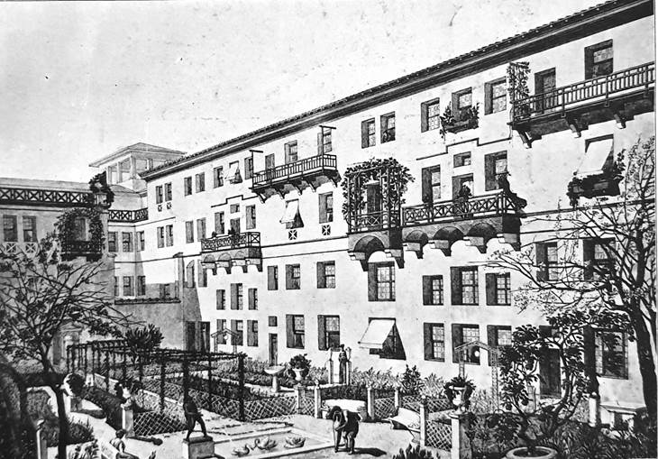
Cuando en el año 325, en el Concilio de Nicea, fue aceptado el Símbolo de la fe, fue declarada la guerra a la herejía. Una de las cuestiones más importantes era la del agua. ¿Qué es el agua? 865 baños públicos. Además de estos baños tenían 11 termas, una por cada distrito. Para construir un baño había que tener dinero, presentarse en el Senado y declarar allí cómo se había ganado ese dinero. Si se había obtenido honestamente, podías construir el baño, y te convertías en héroe. En el frontón del baño se escribía tu nombre. Nuestros Sanduni son una mísera imitación de los baños romanos. Las mujeres también costaban baños e iban a ellos. Las termas solo las construían los emperadores: era cosa solo suya. ¿Para qué existe, pues, en Roma el agua? Para la civilización, así como para el placer y el goce.
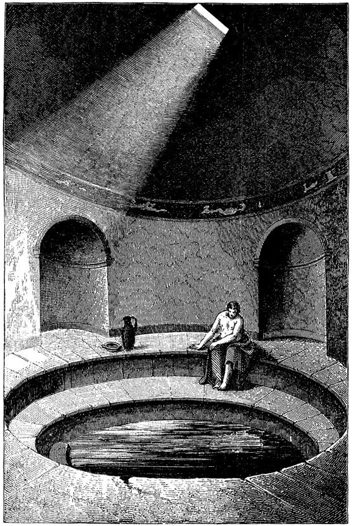
Y el cristianismo dijo: ¡no! En el Athos, donde se encuentra el primer monasterio cristiano, a los monjes les estaba prohibido bañarse incluso vestidos. El agua es lo más sagrado que existe. Es otra filosofía, otra actitud ante el agua. En su día Averintsev respondió genialmente a las preguntas: «¿Y a dónde han ido a parar los acueductos? ¿Qué es el progreso? ¿Por qué ahora no hay acueductos así?» Respondió a esto: «¡Ningún progreso hay ni puede haber! Hay lo que la cultura en un momento dado necesita». Ellos necesitaban el agua, y la obtuvieron. A otros no les hacía falta el agua. Y todo lo que hubo se cubrió de maleza, desapareció, porque hay que mantener todo en el debido estado. Cuando se acordaron de ello, resultó que era tarde: la civilización del agua se había perdido. El abastecimiento de agua quedó destruido; es imposible el riego de la parcela amada, ganada con el servicio militar o comprada. Ahora el agua se puede tomar solo del pozo y tanto como se necesita. La gota de agua contiene toda la información: toda la información sacra. Esto es fundamental. Del mismo modo es fundamental la actitud ante el vino y el pan. Para los cristianos son sangre y carne; no se pueden comer y beber sin reflexión.
En esto están los principios civilizatorios. Pero el mundo cristiano, que aceptó el Símbolo único de la fe en el Concilio de Nicea, lo repitió ya plenamente tras la muerte de Constantino, cuando comenzó a desarrollarse la civilización cristiana. Pan, agua, vino: son cosas fundamentales; es la actitud de las personas hacia el mundo que las rodea y entre sí. Los romanos no les daban sentido sacro: solo doméstico, cotidiano. Los cristianos, en cambio, toman deliberadamente los símbolos de los viejos valores, pero llenan estos vasos con un contenido nuevo. Y ese contenido nuevo se mantiene hasta hoy. Por un lado, existe la tradición y los símbolos, y por otro, ellos tienen una multiplicidad de sentidos. El mundo cristiano, cuyo centro fue, naturalmente, Bizancio… como notó con acidez Brodski: «Constantino simplemente trasladó el banco a la casa de la moneda». Pues bien, el mundo cristiano no fue desde el principio unitario.
La cueva y el origen del cristianismo
La cuestión de cómo surgieron las distintas ramas del cristianismo exige una conversación aparte. Pero hay un hecho interesante: por qué todo comienza en la cueva. ¿Dónde nació el niño? En una cueva. Concedamos que en este caso hay explicación: eran gente pobre que no pudo hallar albergue en Belén y lo encontró en el pajar, en la cueva. Pero hay otros ejemplos análogos. ¿De dónde salen los niños al nacer? De la cueva. E incluso el mismo dios Zeus nació en una cueva, en Creta: la madre lo escondió allí del esposo celoso. Esta cueva se puede ver todavía hoy, igual que la cueva de Belén, ante la que se hace cola. Se han conservado. La cueva es siempre misterio. Por eso todo nace en la cueva. Cuando Tonino Guerra concibió el monumento a Andréi Arsényevich Tarkovski, lo hacía en una cueva. Cerró herméticamente las puertas y dijo: allí está el misterio. Y allí hay de verdad un misterio. Hay que revisar las películas de Tarkovski al cabo de unos años, y veremos mucho de lo que ahora no advertimos.
El Renacimiento es también una cueva, y por eso todo momento de nacimiento es un misterio. Es interesante que las primeras pinturas que nos son conocidas están también en cuevas, en los Pirineos. ¿Quién las pintó allí, cuándo? Todo se engendra en la cueva y en el subsuelo. ¿Puede siquiera una sola persona o un solo teórico responder a la pregunta: qué es la cueva? No, no puede. Nadie puede decir cómo nació en esa cueva Cristo. Lo sabemos todo y no sabemos nada. Y lo más importante: no sabemos ni cómo surgió el cristianismo, ni cuándo ocurrió. ¡Cuántas teorías!
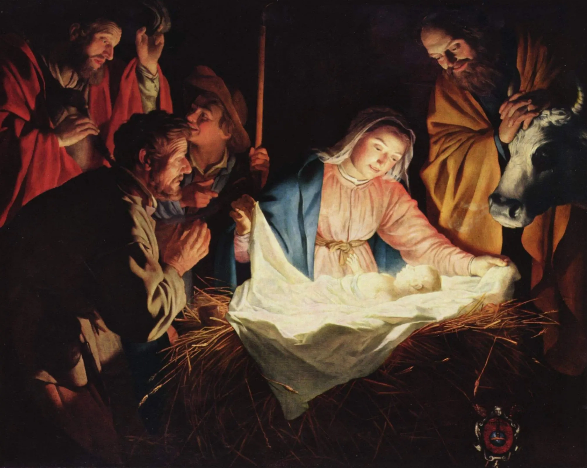
Existe la teoría ortodoxa, inscrita en todos los manuales; no la repetiremos aquí. Pero hay también un montón de otros testimonios, por ejemplo los manuscritos de Qumrán. ¿Qué hacer con ellos? ¿Son originales? Originales. Aunque algunos decían que era una falsificación, un falso. Es interesante: ¿quién podría haberla hecho? Meterlos en esas tinajas, sellarlos con lacre… y no poco, el de antes de la revolución, y esconderlos en aquella cueva. ¿Cómo hay que comportarse, pues, con los manuscritos de Qumrán? ¿Con esos esenios que tenían un Maestro de Justicia? ¿Olvidarlos y no prestarles atención? Que lea quien quiera, pero ¿no vamos a tenerlos en cuenta? Nosotros tenemos escrita la historia. ¿Vamos a seguirla?
Por eso la cuestión del origen del cristianismo es una cuestión compleja. Y sin embargo, por compleja que sea, el hecho queda siendo un hecho. ¿Cristo existió o no? Lo más probable: existió. Yo no soy partidaria de la dialéctica: todo de lo que hablamos testifica que la dialéctica no existe. Nos la necesitamos para que exista el nexo causa-efecto y para que podamos de algún modo comprendernos a nosotros mismos y el camino recorrido. Pero, indudablemente, existe una cosa muy seria: son los impulsos de la conciencia humana. Es lo que ocurre, como escribió Arseni Aleksándrovich Tarkovski, «a la luz del alumbramiento». En esos momentos cambia la conciencia del hombre, cambia no dialécticamente, sino de manera discreta.
Tomemos, por ejemplo, el partido de los bolcheviques. ¿Dónde se gestó? En la clandestinidad. Pero sentarse mucho tiempo en la clandestinidad es imposible: cualquier clandestinidad, igual que la cueva, son nueve meses, y luego nacemos. Los bolcheviques tomaron el «Aurora» y dispararon en 1917, y en ese momento nacieron.
Así también el cristianismo: estaba sentado en la clandestinidad, pasó todos los tormentos de la clandestinidad, igual que esos mismos bolcheviques. Lenin tenía muchos pasaportes, maquillaje, bigotes… era un actor de altísimo nivel. Mi pariente, directora del museo de Andréi Biely, se ocupa de los problemas de la conciencia. Cita en su libro sobre Lenin una entrevista con Krúpskaya. Le preguntan: «¿Amaba Vladímir Ilich la naturaleza?». Nadezhda Konstantínovna responde que sí, que amaba mucho la naturaleza. Una vez en Suiza hacían un paseo por las montañas y subieron a alguna colina, y Nadezhda Konstantínovna dijo: «¡Mira, Volodia, qué belleza!». Y él respondió: «Y aun así, ¡qué canalla es Plejánov!». Esto no es un chiste. Lenin tenía ante los ojos solo a Plejánov.
Pues bien, primero fue la clandestinidad, de la que salieron los revolucionarios. ¿Y hubo clandestinidad entre los jacobinos durante la Revolución francesa? Es que lo más interesante es lo que ocurre en la clandestinidad, y no cuando de ella se sale. Ese subsuelo es lo más interesante: los pisos francos, las bases, los nombres falsos, las reuniones secretas.
Y los primeros signos del arte cristiano se encuentran precisamente allí, en las llamadas catacumbas romanas. ¿Qué era, pues, el subsuelo cristiano? Existió no solo en Roma, pero incluso en Roma nadie puede responder a esta pregunta.
Los investigadores tienen hoy dos o tres versiones. Una versión consiste en que el subsuelo cristiano existía en el sistema de comunicaciones. ¡Es un sistema fantástico! Es sabido de todos que dentro de Roma había otra Roma, y se encontraba en esos sistemas de comunicaciones. ¿Cómo llegaban allí las personas? Por las trampillas que vemos todavía hoy en las calles. Solo que en los romanos allí estaba mucho más limpio y luminoso. Era algo así como un metro, y fue precisamente allí donde se reunían las comunidades paleocristianas.
Pero lo más interesante está en que allí enterraban a sus grandes mártires y obispos. Y gracias a esto tenemos en las catacumbas enterramientos reales de los primeros grandes mártires. Allí hicieron, claro, ventilación: los romanos sencillamente no podían construir mal. Y en estas catacumbas los cristianos leían ciertos textos. La cuestión es qué leían exactamente. Porque el Evangelio cuatriforme fue escrito solo en el siglo VI. O sea que les faltaban todavía 600 años para la aparición de esos textos. No sabían lo que leían. El cristianismo mismo nació ideológicamente: verdaderamente nació en la lucha contra la herejía. Es decir, la herejía nació antes que el credo. Lo mismo ocurrió con nuestro subsuelo, con los trotskistas y los mencheviques: ¡allí zumbaba la lucha! Y en el cristianismo temprano había herejías muy interesantes. Ahora es difícil decir con exactitud cuál de los santos enterrados allí pertenecía a qué corriente, pero el hecho queda siendo un hecho.
Adriano y Diocleciano: los grandes mártires
La historia la hace la propia historia; no nos la confía. Y parece que adrede nos organiza ciertas representaciones, fuegos artificiales históricos, para poner en su lugar la situación histórica.
Por ejemplo, uno de tales fuegos artificiales está ligado a Adriano. A Adriano no le dejaron poner un altar de Cristo en el Panteón. ¿Por qué? Desde el punto de vista de la historia era pronto. Si lo hubieran puesto, todo habría terminado: no habría surgido ningún cristianismo. Mejor dicho: habría existido, pero completamente distinto.
Había que esperar todavía, hasta que, finalmente, la rueda se acelerara como es debido, para que los persiguieran menos, los ahorcaran menos, los torturaran menos. Y para el momento en que los romanos decentes ya no podían ver todo aquello que los rodeaba, se convirtieron en cristianos.
Aquí hay que detenerse en dos momentos. Este es, en primer lugar, Adriano, que perdió el título «divino» y por eso se marchó a Grecia. Y en segundo lugar, el emperador Diocleciano. El emperador Diocleciano fue un hombre genial, absolutamente descoincidido con su tiempo. Como decía Lev Nikoláyevich Gumiliov: ¿y qué hacer a los pobres pasionarios si no se han coincidido con el tiempo, dónde está su lugar? Resulta que solo en el manicomio. Como cantaba Vysotski: «De los auténticos bravíos hay pocos, y por eso no hay cabecillas».
¿Qué hacer al pasionario, qué hacer al hombre genial Diocleciano? Era noble; no quería ni siquiera gobernar el imperio él solo: tomó como ayudante a su amigo Maximiano. Y este renunció junto con él. Tomaron juntos el trono y salieron juntos de la escena. Maximiano no lo traicionaba a él ni a nadie. En cambio, el sobrino de Maximiano, Constantino, se puso a hacer Bizancio. Era hijo del gobernador general y teniente de Britania. Constantino guerreó en la Galia, y Diocleciano con Maximiano decidieron dejarle el trono, al guerrero enérgico, y ellos se retiraron de los asuntos y se dedicaron a la jardinería.
Pero antes de esto Diocleciano quería fortalecer el imperio, promulgar leyes, revivir el ejército. Y cuando decidió dar el último impulso, se hizo claro que eso no conduciría absolutamente a nada, y las fuerzas lo abandonaron. Resultó que su esposa era cristiana, su hija amada, cristiana, el novio de la hija, cristiano. Se le rompe el corazón, y él es emperador romano… Y Diocleciano hizo una cosa asombrosa, históricamente genial. Ni siquiera se representaba que cometía un acto históricamente genial.
¿Cómo se perseguía a los cristianos? Los empujaban en grupo al estadio, y luego, según la imaginación de cada uno: les soltaban fieras y demás. Y a Diocleciano se le ocurrió una idea, propia de un auténtico gran estadista: juzgar a los cristianos como enemigos del pueblo. Y comenzaron a juzgarlos, es decir, a montar procesos políticos con instrucción. Y ellos decían: no, ¡no renunciaré! Les amenazaban con castigo, con tormentos, pero se mantenían en su fe. Todo esto ocurría públicamente, teatralmente; se levantaban actas: ¡es que es Roma! Dos tercios de todos los mártires cristianos existentes los hizo el emperador Diocleciano en procesos judiciales individuales. Y a san Calixto, y a san Sebastián: nuestro principal héroe de todos los tiempos, cuyas señas y enterramiento encontramos en las catacumbas.
¿Qué hizo, pues, Diocleciano? El resultado de estos procesos políticos individuales fue que recordamos los nombres. Cuando se exterminaba a los cristianos en colectivo: no; cuando individualmente: recordamos. Existen los protocolos; se convirtieron en la base de una nueva literatura que se llama «vidas de santos». Esas vidas aparecieron sobre la base de documentos. Los documentos dan una imagen depurada, elevada, auténtica del nuevo héroe.
¡Diocleciano, junto con Maximiano, crearon prácticamente a todos los grandes mártires cristianos! Cuando el cristianismo llegó a Rusia, también nos hicieron falta santos nacionales, y no los hay: todos los hizo Diocleciano. Y Yaroslav, que gobernaba el Estado de Kiev, eligió para este fin a dos de sus hermanos, Borís y Glieb, a los que supuestamente mató Sviatopolk el Maldito. Ellos no sabían nada de nada de ningún cristianismo. Después de que los mataran, Yaroslav organizó enseguida los funerales. Y fue él quien les creó biografías magníficas: dos jóvenes zarevich de Vyshgorod, que no llegaron ni a casarse ni a pecar. No mataron a nadie, no tenían pecado alguno en el alma. Jóvenes limpios, buenos, amables, hijos amados de su padre, asesinados por Sviatopolk el Maldito. ¿Pero fue él quien los mató? Eso no lo sabemos. Sin embargo, el asunto estaba hecho, y los primeros santos nacionales rusos, que se hicieron muy queridos, fueron promovidos de la propia familia de Yaroslav el Sabio. Antes de esto había solo los primeros mártires cristianos, creados por Diocleciano.
Muy interesantes son las biografías de san Jorge y de san Sebastián; no solo su martirio y los interrogatorios que dirigió Diocleciano, sino su destino mismo. Porque san Jorge es un santo oriental, y san Sebastián, un santo occidental. Aunque ambos eran jóvenes coroneles, egresados de la academia militar, de familias aristocráticas. Fueron una especie de decembristas de aquel tiempo, solo que a ellos los ahorcaron, y no los desterraron a Siberia.
Cuando Diocleciano dijo que renunciaba, la idea del Panteón ya estaba formada. En el año 305 Diocleciano se retiró de los asuntos y se sentó en su huerto. En el año 313 murió en paz, cavando el huerto y procurando olvidar su nombre y, en general, todo, todo, todo. Pero, como sabemos, la historia permaneció.
En el año 308, cuando el cristianismo salió de la clandestinidad, estaban dispuestos a ponerlo al lado de otras creencias y dioses. En el año 324, un año antes de que fuera aceptado el Símbolo de la fe, el cristianismo fue declarado en esencia la única religión gobernante de Roma. En el año 325 se celebró el famoso Concilio de Nicea. Fue un acontecimiento muy importante: la victoria sobre el arrianismo, que afirmaba la naturaleza creada de Dios Hijo. A Arrio lo desterraron, y en el Concilio de Nicea fue aceptado el Símbolo principal de la fe, es decir, la Trinidad, que afirma la igualdad del Padre y del Hijo.
Constantino el Grande en el año 330 fundó Constantinopla, y murió en el 337. Y aceptó el cristianismo él mismo, en el lecho de muerte. Paradoja: el más cristiano de los reyes aceptó el cristianismo en el lecho de muerte de manos del obispo arrio Eusebio. Constantino, en general, entendía mal de política religiosa, y a Eusebio, a diferencia de otros sacerdotes, lo conocía desde hacía mucho. Pero se lo olvidaron y se lo perdonaron. Lo más importante es que fue bautizado en el 337, y en el 330 fundó Constantinopla.
En el año 381 fueron aceptados por la Iglesia los edictos religiosos. El final del siglo IV en los libros lo llaman Alta Edad Media, pero en este tiempo apenas se está formando las ideas religiosas, surge la sólida espiritualidad. Por eso los edictos salen uno tras otro. El cristianismo se afianza como única religión. Y ahora trata con la misma agresividad a las llamadas herejías como antes las herejías trataban al cristianismo: ahora persiguen a los paganos; por ahora solo los meten en cárceles. Así de interesante se ha vuelto todo.
El primer etnos cristiano
Así pues, resumamos. Los primeros signos de la cultura cristiana fueron catacúmbicos. Esto ocurrió cuando el arte estaba en el subsuelo, es decir, en situación ilegal. Luego, en el año 308, salió de las catacumbas, y en el Concilio de Nicea, en el año 325, se acepta el Símbolo único para todo el mundo cristiano de la fe: la Trinidad. Lo más importante en el cristianismo es la Trinidad, que habla de la igualdad del Padre y del Hijo.
¿Qué incluye el mundo cristiano temprano? No hay que confundirlo con el posterior y el moderno. Ante todo es Grecia. Es la península del Athos, que constituye una estrechísima lengua de tierra. El primer monasterio internacional es el monasterio griego. Allí se formó por primera vez la liturgia y el canto de diez voces no apoyado en instrumentos musicales: el irmos.
La parte más activa de ese monacato cristiano del Athos eran los búlgaros, los armenios y los georgianos. La iglesia armenia es la más antigua, la Gregoriana, Neoapostólica. Es 300 años más antigua que la ortodoxia rusa.
En general, la comunidad eclesiástica (y en ella había una admirable unión extraétnica: cristianos, coptos y romanos) es «el primer etnos cristiano». Precisamente tal, ideal, definición de Bizancio la da por primera vez Lev Nikoláyevich Gumiliov, que aplicaba al credo el concepto de pertenencia étnica.
El etnos cristiano… ¿Qué significa etnos? Etnos es la comunidad de tradiciones, el único campo espiritual. Gumiliov no decía que fuera una comunidad geográfica o histórica; decía: es una comunidad espiritual.
El oficio catacúmbico se celebraba en latín, y el nuevo, en lengua griega. Es decir, desde el principio se crearon dos ideas interesantes: una latina y otra griega. Griega, naturalmente, porque Bizancio es una colonia griega. Italia tenía una lengua única: el latín viejo; el latín clásico se estudia todavía hoy por los boticarios, los juristas, así como por los hombres de ciencia. La idea griega es completamente otra. Italia es el lugar de la lengua común y del territorio. Es la cultura latina, que contiene en sí, como dicen los genetistas actuales, una raíz muy fuerte. Sí, hubo en ellos transmisión génico-étnica de los hunos y de los galos, pero no conviene exagerarla. En cuanto a Bizancio, era muy plurilingüe y no tenía una lengua única. En griego se escribía, se celebraba el oficio, pero en el mercado no se hablaba en griego. Ese es el primer etnos cristiano del que hablaba Gumiliov, es decir, no una comunidad con tradición histórico-genética, sino un espacio común espiritual-cultural que une a las personas. Rusia hereda esta tradición, y nosotros la llamamos ortodoxia.
La tradición latina está ligada al desarrollo del cristianismo en otro ámbito. En la Edad Media, para la Europa Occidental los países clásicos son Italia y Francia, y para la Europa Oriental el país clásico es Rusia. Y el asunto no está en absoluto en que los turcos en 1425 entraran en Constantinopla y de él no quedara nada. La cultura puede existir, pero deja de desarrollarse. Si tomamos la cultura árabe, veremos que se desarrolla del siglo VIII al XVII, hasta que conquistan el norte de la India. Es el último vuelo, y ¿después qué? Después autorreproducción, autoplagio y nada más. Los artistas, los astrólogos, los médicos: todo quedó allí, y nosotros nos engañamos. Las personas que hoy construyen mezquita ni siquiera saben qué es.
Un momento importante en la cultura cristiana europea es la segunda mitad del siglo VI, cuando se formaba el Evangelio cuatriforme como sistema evangélica única para todo el mundo cristiano. Pero lo principal es el período del siglo VI al IX, y no desde el siglo IX. Aquello en lo que vivimos ahora comienza en el siglo VIII. La Edad Media se forma definitivamente hacia el siglo VI. Rusia aceptó el cristianismo en el siglo X, pero todo comienza en el filo de los siglos VIII y IX, incluidas las tradiciones.
Vivimos en la Edad Media típica. Vivimos dentro de la cultura cristiana, y los árabes, dentro de la suya. La tercera religión del mundo, el budismo: ¿es una religión medieval? Mejor dicho, ¿no una religión, sino una filosofía ética? Buda vivió en el siglo VI a. C. ¿Qué tiempo era aquel? ¿Quién vivía entonces todavía? Pitágoras, Confucio, Lao-tsé: vivieron todos en un mismo tiempo. Es algo así como el desarrollo intrauterino: formación de las ideas, gestación, aparición y, finalmente, su presentación. Pero para todo esto se necesita tiempo. El hecho de que el budismo existiera ya en el siglo VI a. C. no significa en absoluto que fuera el mismo budismo que hay ahora en América. Hay un estado intrauterino, un brote.
El más genial entre estas personas fue Confucio, porque su imperio sigue en pie hasta hoy. De Pitágoras quedaron leyendas y «los calzones de Pitágoras».
La escisión de 1054: Oriente y Occidente
Recordemos las fechas importantes. Si en el año 325 se celebró el Concilio de Nicea, donde fue aceptado el Símbolo de la fe, y en el 337 murió el emperador Constantino, entonces en el año 382, es decir, al final mismo del siglo IV, la comunidad eclesiástica cristiana única se dividió en oriental, con centro en Bizancio (en Constantinopla), y occidental, con centro en Roma (lo cual es del todo legítimo: las catacumbas son el cristianismo catacúmbico), al frente de la cual estaba el Papa, vicario de Dios en la tierra.
Detengámonos en el acontecimiento principal de aquel tiempo. Así pues, el año 1054. A finales del siglo IV la Iglesia se define como dualidad de esencias. Y solo a mediados del siglo XI se produce, digamos, el «proceso de divorcio», cuando, finalmente, la Iglesia Occidental y la Oriental se reparten entre sí los bienes.
Cuando murió el profeta Mahoma, delante mismo de su féretro se escindió al instante el mundo islámico. Los herederos de Mahoma no pudieron repartirse su herencia espiritual, porque se trataba de la redacción del Corán. Y esas riñas espirituales existen hasta hoy: son los chiitas y los suníes. Ustedes saben que simplemente se exterminan unos a otros como si fueran infieles. ¡Y esto es sangre! Entre ellos hay sangre que no acaba nunca. La Edad Media continúa. Si un suní está al frente del Estado islámico, los chiitas están acabados. Pero ningún musulmán, ni el más radical, dirá jamás: esta mezquita (o este palacio, o esta madraza) la construyeron suníes o chiitas.
Yo hice tales experimentos y preguntaba a personas diversas. Por ejemplo, una historia interesante ocurrió en Chipre. Allí, por un lado, los castillos de los cruzados, porque es uno de los principales nidos templarios, y por otro, el islam. Es un islam especial, desde el punto de vista de la estética. Las construcciones allí están privadas de aquella belleza característica, digamos, del islam de Asia Central —asombroso, refinado, policromo— o del de la España meridional, donde también todo es increíblemente bello. Y aquí todo recuerda en color a la arena, a la inseparabilidad de la arena. A la pregunta de quién construyó esto, las personas no podían responder nada. Simplemente no lo saben. Al mismo tiempo, allí las desavenencias existen siempre, y muy tormentosas.
Los suníes y los chiitas se siguen degollando hasta hoy, y su cultura es una sola. En cambio, los ortodoxos y los católicos son dos culturas completamente distintas, aunque en el mundo cristiano no hubo choques abiertos, abiertos, en que el hermano va contra el hermano. Alguien quizá dirá: «¿Y la Noche de San Bartolomé?». Pero el asunto está en que allí eran protestantes con católicos, y no católicos con ortodoxos. Los protestantes son la misma iglesia católica: son asuntos internos de los católicos. En Europa el protestantismo es el siglo XVI. ¿Y hubo en Rusia su propio protestantismo? Sí, solo que no en el siglo XVI, sino en el XVII, con Alexéi Mijáilovich: los viejos creyentes. Es un cisma dentro de la Iglesia, y en este respecto el cisma protestante se parece al de los viejos creyentes. Como en Occidente la ciencia y la verdadera ilustración brotan del protestantismo, así en Rusia la ilustración brota del viejo creyente. Todo lo que tiene relación con el esclarecimiento ruso: las universidades rusas, los ferrocarriles, los centros docentes, el famoso coleccionismo ruso: todo esto es de viejos creyentes. Desde Pável Mijáilovich Trétiakov hasta Shchukin y Riabushinski: todos son asuntos de viejos creyentes. Pero son asuntos intrafamiliares, intraeclesiales.
A finales del siglo IV, hacia los años 380-390, se crea la situación de evidencia de que existen dos centros cristianos. Solo a finales del siglo IV todo esto comienza a manifestarse abiertamente.
La historia de la Edad Media la escriben con precipitación, sin pensarlo, la fraccionan en períodos: Edad Media muy temprana, del todo temprana, nada temprana, media del todo… Pero no es en absoluto así: las distintas regiones se desarrollaban de maneras distintas. Italia se desarrolla según un guion, los países del norte según otro, y la dirección bizantino-rusa tampoco se desarrolla igual. Dicho de otro modo: no se puede fraccionar la historia en Edad Media media y temprana.
La ruptura definitiva, que ocurrió en el año 381, nunca condujo a choques armados en que el hermano cristiano fuera contra el hermano cristiano. Cuando Tarik ibn Ziyad abrió las puertas a los árabes y a los moros hacia los Pirineos, cuando comenzó la conquista musulmana, el ejército estaba compuesto por negros, árabes, judíos y mercenarios bizantinos. Gumiliov describe de un modo totalmente genial cómo pasó la parte bizantina con los signos de la cruz: ella se fue tan tranquilamente junto con los árabes hacia España. No se soportaban, pero no hubo choques abiertos.
En el año 1054 (por cierto, en el año de la muerte de la Rus de Kiev, es también el año de la muerte de Yaroslav el Sabio) ocurre un acontecimiento increíble para toda la cultura mundial. La incredibilidad de este acontecimiento consiste en que se celebró el octavo Concilio Ecuménico. Este octavo Concilio Ecuménico fue el último. En él se produjo la separación de la Iglesia papal (o latina, u occidental) y de la Iglesia Oriental (o griega, u ortodoxa).
Se formaron dos estereotipos absolutamente distintos de conciencia. Fue una política seria, pero lo más importante es que los estereotipos de conciencia del día de hoy, de la conciencia nacional, o lo que llamamos mentalidad, se formaron precisamente entonces, cuando como resultado del «divorcio» de las iglesias se repartió «el patrimonio»: su bagaje espiritual.
De hecho, la ruptura ocurrió considerablemente antes, porque para el siglo XI el mundo europeo occidental estaba completamente formado mediante la creación del Imperio Romano de Occidente, mediante Carlomagno, mediante el filo de los siglos IX y X. Todo ocurrió considerablemente antes, porque el mundo occidental se conformó con su sistema gremial. Lo que ocurrió entonces tiene relación directa con nosotros hoy.
El Concilio duró dos años, y otro tanto tiempo se mataron unos a otros: se envenenaban, impregnando de veneno las páginas… y como resultado se separaron por tres cuestiones.
La primera cuestión es muy específicamente eclesiástica. Es la cuestión del sacramento de la comunión. ¿Qué es la comunión para el hombre? ¿Qué es la absolución de los pecados para el hombre? La comunión, la absolución, la confesión. Es el camino del hombre; es un movimiento del hombre muy interesante. En esta cuestión la ortodoxia y el catolicismo discrepan absolutamente.
Las otras dos cuestiones son de historia del arte. Discutían por cuestiones de teoría del arte.
La pregunta principal ante la que estaban: ¿qué se puede y qué no se puede representar en el arte? Esto no lo leerán ustedes en ningún libro. Por cierto, es la cuestión por la que se mataban unos a otros con mucha más frecuencia que por cuestiones teológicas. En las cuestiones teológicas se pusieron de acuerdo bastante rápido. Pero en las cuestiones del arte, no. Esta cuestión resultó fatal.
La tradición occidental dice: en el arte se puede representar todo. La formulación latina es tal: es representable todo aquello de lo que se cuenta o se menciona en ambos libros de la Biblia, el Antiguo y el Nuevo Testamento. El árbol está mencionado, la mandrágora: también se puede.
Por ejemplo, en el Evangelio se menciona la historia de la traición de Cristo por Judas. Los evangelistas Mateo y Juan describieron bien esa historia terrible. El arte occidental la representa con libertad. El tema de la traición es uno de los temas más importantes. Y la ortodoxia dice: no, ¡de ninguna manera esto no es representable! Nunca ni bajo ninguna circunstancia. Solo se puede representar aquello que es fiesta. Las fiestas: el punto del verdadero triunfo, eclesiástico y espiritual.
Para la representación se selecciona la fila festiva, que más adelante se convierte en la base del iconostasio. Solo lo que entra en la fiesta, y lo que no entra, no puede ser representado, ni siquiera en los frescos. Un sentido especial tiene el rango de la Deesis con el Juicio Final. De este modo se forma la conciencia artística medieval: se forma a través de la semántica del templo y del iconostasio.
La decisión del Concilio Ecuménico nadie la ha revisado hasta hoy. Si Pedro I en el siglo XVIII explicó que además del arte sacro-religioso existe el arte secular, este va en curso paralelo. El arte religioso permanece isográfico y no puede apartarse del canon.
La imagen de la Santa Cena en el arte ortodoxo hasta el siglo XVIII, hasta la reforma petrina, fue una sola. Y la Crucifixión, una sola. ¡La primera «Crucifixión» fue pintada por Dionisio en el filo de los siglos XV y XVI! ¿Y qué es el siglo XVI? Muere Tiziano, salió a las tablas Shakespeare. El cisma ya va en plena marcha. Dürer muere, Leonardo muere a comienzos del siglo XVI. Y Dionisio por primera vez representa la Crucifixión poco antes de esto. Y lo interesante es que esta Crucifixión cuelga en la Galería Trétiakov y muestra al Cristo crucificado como un ave. Es una imagen asombrosa: ahí está él, semejante a un pájaro, despegándose de la cruz. Es incorpóreo. En general incorpóreo. No tiene carne, no tiene manos, no tiene piernas: es un pájaro ligero.
¿Cuándo comienza a formarse la tradición de representar solo las fiestas ortodoxas? Muy temprano. Ya en Bizancio, cuando aspiraba a la representación precisamente de aquellos puntos del verdadero triunfo a los que entran solo las fiestas eclesiásticas. Se pueden representar todas las fiestas que existan. Y también, claro, a los santos patronos y a la Madre de Dios. Y además, las fiestas ligadas al culto mariano, como la Anunciación, la Natividad: el llamado ciclo mariano.
Ya desde el siglo IX en Bizancio comienza a formarse la parte más importante del interior eclesiástico, porque nuestra base, el apoyo está siempre dentro. Todo lo más importante se encuentra dentro. Por ejemplo, la arquitectura rusa amaba mucho la piedra blanca. Decía: el cuerpo es sin pecado; ¡el pecado está en la cabeza y en el corazón! Y si está allí, entonces, por favor, todo lo demás también dentro. Por eso el corazón es lo más importante en la ortodoxia. Esta tradición comienza a formarse desde Bizancio: el corazón del templo es el iconostasio. Es decir, la misma estructura de la iglesia rusa es semánticamente extraordinariamente interesante. La tarea más legítima y seria, por la que se luchó en el octavo Concilio Ecuménico, fue la insistencia con respecto al arte plástico, su ideologización, su encarnación de ideas. El derecho a la representación lo tiene solo la fila festiva, por eso el iconostasio está formado por la fila festiva de íconos, así como por el rango de la Deesis.
He aquí ejemplos de argumentos descritos en el Evangelio: cómo la Sagrada Familia huyó a Egipto, cómo Herodes exterminaba a los niños. En Occidente estos argumentos se representan a menudo. En la ortodoxia no se pueden representar, igual que el beso de Judas y la Santa Cena. O tal cosa idílica como «El descanso en la huida a Egipto». El encuentro de Jacob con Raquel, el sacrificio de Isaac… ¿Por qué no se puede representar esto? Son todos acontecimientos muy serios. La disputa fue muy dura; cada uno defendía sus bastiones. En la ortodoxia está aceptado representar solo aquello que son los puntos del triunfo absoluto y verdadero. No está ese camino sangriento, sino solo el signo enalzado en la cumbre.
Miren a Dionisio: aquí ya todo está ligado con el canon generalmente aceptado, es el siglo XVI. Es aquello de lo que se hablaba: vean qué fino es, qué incorpóreo, semejante a un pájaro: ni dolor, ni sufrimiento, como si ni siquiera estuviera clavado. Él es simplemente una silueta en esas vendas blancas, y al lado los ángeles.
¿Y qué hay del otro lado, entre los católicos? En cuanto al arte occidental, propone lo que está excluido en el ruso. Propone la representación de conflicto interno, la dramaturgia.
En Occidente el tema del beso de Judas siempre les gustó discutirlo. ¿Por qué? Pues he aquí por qué: a todos debe serles injertada la vigilancia ante el diablo cada segundo, la tensión y la concentración. Debe ser injertada la resistencia del hombre al mal, la vigilancia respecto del vecino. Debe ser una situación pesada, conflictiva, seria, en la que participan todos.
No se trata de quién es peor y quién mejor. Se trata de que la Iglesia cristiana oriental va por un camino, y la cristiana occidental, por otro completamente distinto. ¿Cuándo fueron trazados, señalados y llamados por sus nombres estos caminos? En el octavo Concilio Ecuménico. Después de él reunirse otra vez ya no era necesario. Rusia va por el camino de la proclamación de una pura y elevada eficacia. Ella lo lleva consigo. Pero la pregunta principal, y esto también nos toca a nosotros: ¿qué se puede y qué no se puede representar en el arte? He aquí un ejemplo simple. Todos dicen: el realismo socialista, como en tiempos de Stalin, en todo caso no es bueno. ¿Pero de dónde salió ese realismo socialista? ¿Alguien lo inventó? No, es la continuación del pasado: el derecho en el arte a la representación solo del punto del triunfo. Las victorias, los jefes, los stajánovitas, las stajánovitas, la terminación de las obras… Solo el final, solo el final triunfal. Y el Juicio Final estará en el otro lado.
Más aún: toda la historia del arte ruso, en otra forma, continúa siempre esta tradición. Decimos: «Esta tradición, que al principio se desarrolló como eclesiástico-bizantina o eclesiástico-griega, es una tradición profundamente espiritual». Es de verdad una tradición espiritual. Señalada en su lengua en el siglo XI, se manifestó y continuó siéndolo hasta comienzos del siglo XX. Subrayemos: hasta comienzos del siglo XX, cuando Rusia fue integrada en otro proceso, uniéndose al proceso de las transformaciones espirituales. Fue un proceso difusivo. Y después, cuando nos separamos de nuevo, dijimos: somos el único país de la tierra que construirá ESTO. Y apenas nos separamos, no inventamos nada nuevo, sino que volvimos de inmediato a esta tradición.
Muy a menudo la semejanza exterior se toma por la tradición interior, pero en realidad la semejanza o desemejanza exterior es una cuestión del cambio de forma en el tiempo. Y las tradiciones espirituales son muy estables. Tan estables como las tradiciones antiguas, así de estables son las cristianas. ¿Acaso no vivimos en el mundo cristiano? Ahora tenemos el florecimiento del cristianismo ortodoxo. Si muestran el cinturón de la Madre de Dios, la fila se alinea hasta Luzhnikí. Esto testifica de muchas cosas. Hablando con propiedad, bajo el régimen dictatorial soviético existía una tradición espiritual que se acercaba todavía más a la clásica.
Antes de hablar de que Rusia tiene un camino aparte, primero hay que pensar, porque existen tradiciones espirituales en un nivel casi no consciente. Cuando ahora alguien las pronuncia, suena de un modo tan brusco que todo en ti protesta, pero en realidad son cosas muy serias.
La Madre de Dios: Prísnadeva y Reina Celestial
Y todavía una cuestión: ¿quién es la mujer? La cuestión es muy seria: era la definición de la esencia de la Madre de Dios. El culto mariano existe tanto allá como acá. ¿Por qué surgió en absoluto la pregunta «¿Quién es la Madre de Dios»? En la teología moderna hay una ciencia que se ocupa de esta cuestión: se llama «mariología».
La cuestión exigía respuesta, porque llegó el tiempo de formalizar la institución de la Iglesia, tanto en el sentido conceptual como vital. Ellos dos años se mataban unos a otros en el Concilio; en una cuestión no se pusieron de acuerdo, en otra no se pusieron de acuerdo y se separaron.
La ortodoxia decretó así: la Madre de Dios es Siempre Virgen (Aeiparthenos). Solo dos palabras: la más exacta definición eclesiástica: Siempre Virgen Madre de Dios. Miren el ícono de la Madre de Dios de Vladímir. Es un ícono bizantino del siglo IX, pintado en Bizancio después de la iconoclastia de los Comneno y traído a la Rus. Se llama de Vladímir porque Andréi Bogoliubski desde Vyshgorod, cerca de Kiev, donde se encontraba en la residencia de los príncipes de Kiev, la trasladó a Vladímir. Precisamente los príncipes de Vladímir establecieron en Rusia el culto mariano.
Ahora en el ícono está escrito que es del siglo XI, pero esto no es verdad. Esta datación es, más bien, política, para subrayar que el ícono fue pintado en la Rus. Pero en realidad es un ícono bizantino del siglo IX. Este ícono contiene la fórmula: qué es la Siempre Virgen. La Siempre Virgen es la imagen de la pureza absoluta. Ante todo es el principio femenino. Se define a través del concepto de purificación del mundo. La mujer es purificación del mundo, inmaculada, abnegación y protección. La palabra «Madre de Dios» va en segundo lugar, y en primero, Siempre Virgen.
Este ícono es la base del canon para la imagen eclesiástica femenina. Pero no solo eclesiástica, sino por los siglos de los siglos, femenina. He aquí el artista del siglo XX Petróv-Vodkin: ¿acaso pinta un ícono? Pinta a la nueva mujer del Petrogrado revolucionario, que sostiene el brazo de determinada manera, protegiendo al niño.
En la Madre de Dios lo más importante es la imagen: Siempre Virgen, es decir, la virginidad. El concepto «Virgen» implica la cualidad principal: la pureza. La iglesia de la Madre de Dios se pone en los lugares de peste: se considera que ella purifica el lugar. En todos los lugares donde hubo epidemias de peste, incendios, otras catástrofes, en estos lugares se ponía una iglesia mariana: de la Natividad de la Madre de Dios, de la Ascensión de la Madre de Dios, de la Dormición de la Madre de Dios. Es una cuestión de pureza.
Ella, junto con el arcángel Miguel, anduvo por el infierno. Es una gran epopeya muy conocida, un poema del siglo IX, bien conocido en Europa, que se llamaba «El descenso de la Madre de Dios al infierno». La Madre de Dios, con Miguel, descalza andaba por el infierno y veía los sufrimientos de las personas, veía la pecaminosidad del hombre, por eso se convirtió en intercesora de los hombres ante Dios. Tomó en su corazón toda la amargura de la tragedia humana. La absorbió en sí y la lleva en sí. Es virgen y es a la vez madre sacrificial.
Siempre se representa con imagen virginal-doncella, un tipo iconográfico muy bien constituido. Rostro estrecho, naricita fina, casi no hay boca: es decir, no hay rasgos sensuales. Ojos enormes, manos estrechas y finas… Como escribía el archipreste Avvakum: «Los dedos de tus manos son finísimos». He aquí que suyos son dedos finísimos. Es el aspecto precisamente de una pureza extraordinaria, de doncellez, de ternura, de intangibilidad. Siempre en ella se combinan dos edades: la edad de la doncellez y la edad ya de Aquella que está llena de una increíble tristeza, porque, sosteniendo al Niño en brazos, Ella ya lo ha entregado.
Es la tradición de la misericordia femenina. Mujeres: parid, soportad, callad, ejercitad misericordia, proteged: en eso está vuestra misión. En la misericordia, la protección, la pureza, el nacimiento y el sacrificio. ¿A dónde iban todas las grandes princesas durante las guerras? A la enfermería. Es la tradición de la comprensión de qué es la mujer.
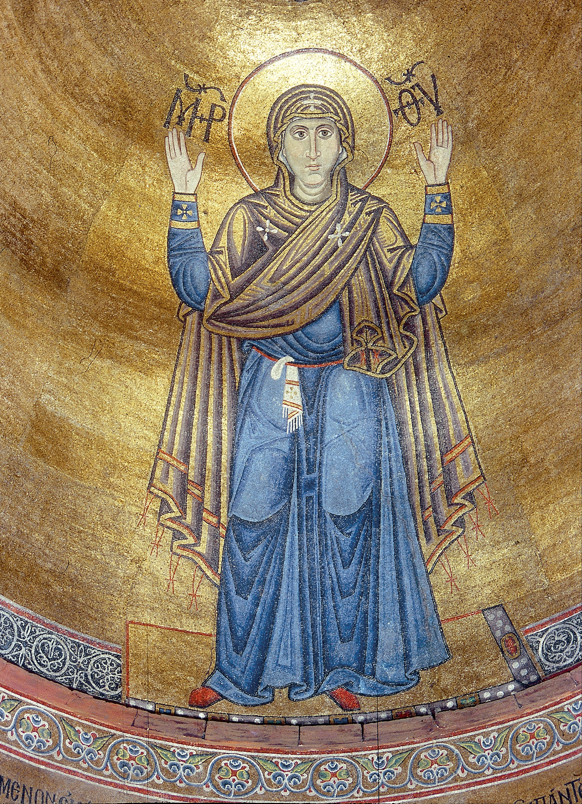
Es un ícono fenomenal, canónico. Miren cómo está representado de manera asombrosa el Niño: no se separa del cuerpo de Ella, no se separa de Ella, no sale por ninguna parte de sus límites. Aún no está separado de Ella. Y al mismo tiempo está en el himatión regio, porque Él ya es Rey Celestial, Él ya es Juez Supremo. Ella es inocente y joven, y ya sacrificial, y Ella ya ha vivido su tragedia, y Ella ya ha entregado. Y Él, como todavía no separado de Ella, pero ya guerrero, rey, protector.
Es el único argumento en la iconografía rusa que se llama «Ternura» o «Búsqueda». Él la abraza por el cuello y apoya su mejilla contra la mejilla de Ella. Pero ¿ven ustedes que Ella no lo mira? Ella solo lo ha tomado y lo aprieta contra sí, pero ya no lo mira, porque Ella ya ve lo que será. Es un juego muy profundo con el tiempo y con las esencias. En este ícono está expresada plenamente la fórmula de la que se hablaba: Ella es la Siempre Virgen Madre de Dios.
Hay todavía otra representación canónica muy interesante de la Madre de Dios: se llama «La Señal». Es la representación más antigua. Se considera que este canon lo creó el apóstol Lucas: cuando Ella está de pie en el manto y mantiene las manos como está representado en el ícono, Ella es a la vez Madre de Dios y protectora. Esta imagen se llama también «Muro Inquebrantable». Está realizada en mosaico en el ábside interior en Kiev. De los cuatro apóstoles, Lucas fue el patrono de las artes, pintor, y los artistas se llamaban a sí mismos «gremio de san Lucas». Se considera que la pintó dos veces, con el Niño: una.
En las termas de Diocleciano en Roma se encuentra un museo histórico. Y allí, en el segundo piso, sobre piedra está arañado con un clavo o con algún cuchillo una imagen, datada del siglo I. Ella está de pie, las manos extendidas, sobre Ella el vestido de oración judío: el talit. No se sabe si hizo esta imagen Lucas u otra persona, pero allí se encuentran las imágenes más tempranas que existen en el mundo cristiano. Es realmente el siglo I. Y en ningún libro está esta imagen.
Es muy interesante que aquí esté subrayado no solo su tierno rostro doncella, asombroso, casi infantil, con ojos enormes, por un lado indefenso, y por otro, con tal protección. Este canon lo investigaron con atención. Hubo una disputa sobre el disco que aquí está representado: ¿es una proyección de lo que Ella ya lleva bajo el corazón? Pero hay otra versión, la expresó Wagner, uno de los más grandes especialistas en el arte de Vladímir. Wagner considera que esto se parece a un rayo proyectado desde algún lugar. Y es verdad: esto se parece más que nada a una proyección desde fuera, como un disco como si superpuesto sobre Ella. Y así las manos extendidas. Ella está cerrada, abraza al mundo. Y Él saldrá de Ella, pero esto es justamente la concepción inmaculada. No hace falta Gabriel, no hace falta ni siquiera el mensajero: esto está proyectado en Ella desde algún lugar. En esto está la genialidad del canon.
En un principio tales imágenes en la cultura occidental no podían existir, porque allí otra formulación: no Siempre Virgen Madre de Dios, sino la primera palabra es Madre de Dios, la segunda, Reina Celestial. La palabra Siempre Virgen está ausente. Él es Rey Celestial, Ella es Reina Celestial. El Niño es débil de carne, pero fuerte de espíritu, y Ella es Reina.
Y gracias a esta definición surge el argumento, el canon iconográfico, que en Rusia nunca hubo, no hay y no habrá. En Occidente surgió desde el principio y en todas partes tiene camino. Todos los artistas lo pintaban; está presente en todas las catedrales, en todos los vitrales y se llama «La Coronación de la Virgen». Apenas en Occidente comenzaron a pintar íconos, su Madre de Dios está sentada en ellos con su niño, serena, sostiene sobre la rodilla a su niño muy cuadrado y gordo, y los ángeles están al lado con ramos. O así: dos nubes, en una Ella es una tierna muchacha, en otra Él es un encantador joven, ora príncipe, ora prometido suyo, ora pretendido, ora hijo.
El culto de la bella dama: he aquí la principal revolución espiritual en Europa, y no en la época del Renacimiento, sino a partir del siglo IX, aunque la ruptura en dos ramas del cristianismo se produjo en el siglo XI.
¿Cantaban en Rusia los trovadores a alguien? ¿Y hubo en Rusia o no? ¿Dónde está este culto de servidumbre a la bella dama? ¿Dónde están esos templarios con el sueño en los ojos de la bella dama y con la rosa en la mano? Nosotros nunca tuvimos trovadores; en nuestra literatura no hubo «Don Juan». Para que hubiera don Juan, tiene que haber el tema femenino: al menos Laura o doña Ana. No se lo cultiva, porque no hay mujeres. ¿A quién seducir? Y Don Quijote tampoco puede haber. Aunque tuviera un calzado del 42 y unas manos enormes, en su imaginación estaba Dulcinea.
Nosotros ni siquiera tenemos simplemente novelas de amor; no existe esta literatura. Se va, se escapa la vara moral principal. De esto escribía Lev Tolstói cuando sacaba en sus libros a mujeres destructoras: Anna Karénina, Masha en «El cadáver vivo».
¿Qué hizo Tolstói con la pobre Elena Bezújova? Murió de enfermedad. Pero la imagen más trágica es Anna Karénina. No es una mujer, es una fuerza destructora: escritora, drogadicta… arruinó a la nación rusa en la persona de sus dos más grandes representantes: el ejército y el Estado. Su amante era el favorito del ejército, un bellezón, de buen linaje, honesto, directo. ¿Y qué de malo tenía Karenin? Era un hombre admirable: la perdonó, lloró. Este es un razonamiento jocoso, desde luego, pero el problema mismo es evidente. Si ustedes hojean mentalmente el contenido de las novelas y artículos de Tolstói, comprenderán que solo le ocupaba la cuestión femenina y que la heroína de sus novelas era solo la mujer y nadie más.
Horas del tiempo: cómo se formaba la idea nacional
¿Y dónde está el modelo para la imitación? ¿Existe? Desde luego que existe: es Natasha Róstova, es la princesa María con los hermosos ojos. Quizá no es guapa, pero ¿cuántos hijos tuvieron todas ellas?
Tolstói vivió en el filo de los siglos. Blok ya había declarado sobre la Bella Dama: «Te has envuelto tristemente en un manto azul…», «Al atardecer, sobre los restaurantes…». Hasta comienzos del siglo XX esto es atípico para la cultura rusa, para la cultura ortodoxa. ¿Salió de esto algo? No, y no saldrá nunca. No está aceptado cortejar a las damas. No son Bellas Damas: deben parir, cocinar bien el borsch, hacer albóndigas, lavar, frotar y callar. ¿Vale la pena recordar lo que había en la Unión Soviética? Y Chernyshevski con su famoso: «Muere, pero no des un beso sin amor». Chernyshevski observó consecuentemente todas las tradiciones de la ortodoxia y en el libro encarnó su sueño.
Todo esto es el puente sobre el abismo. Miramos el ícono: ¿qué hay detrás de él? Las más grandes tradiciones espirituales-culturales que es imposible mover de su lugar. Al arte no se le puede tratar formalmente. Es una cosa no formal. De la cultura nada desaparece sin dejar rastro. Y Pushkin escribe: «El más puro ejemplar de la pureza más pura». Pushkin crea la imagen de Tatiana Lárina. Fue realmente un escritor genial y realmente un escritor ruso, a pesar de una mezcla de sangres completamente inimaginable. Y él precisamente demuestra que es una cuestión no de origen étnico, sino de tradición espiritual, de herencia espiritual: no es necesario haber nacido ruso para ser un auténtico escritor ruso. Él fue un auténtico escritor ruso, creando toda la literatura rusa. Y en «La hija del capitán» plasmó de un modo asombroso esta tradición mariana.
El siglo XVII es la época de la formación de la conciencia nacional tanto en Rusia como en Europa Occidental, y en Inglaterra. Simplemente van por caminos distintos, teniendo su origen a finales del siglo XVI. Es decir, la masa se dejaba fermentar en la segunda mitad del siglo XVI, y todo se coció en el XVII. Pero para nosotros es especialmente interesante en este respecto Francia. El proceso de adquisición de forma y ritual en Francia resultó tan pleno y estable que continúa conservándose ahora, representando un antibiótico que protege a este país de la desintegración. Y si en Holanda la idea tiene carácter doméstico, en Francia tanto el carácter nacional como el lado doméstico son la forma de la conciencia nacional. Ellos estaban dispuestos a la autodeterminación.
Los franceses, como resultado de largas discordias internas, de eternas broncas internas, de la oposición interna mutua, se exterminaron casi por completo. Y, cuando comenzó la matanza protestante, Francia se encontró en situación de cisma y de lucha despiadada por el poder. Los franceses se exterminaron a sí mismos; se puede decir que tocaron el fondo con los pies. Y aquí muy importante fue el acceso al poder del hijo de Enrique IV de Navarra: Luis XIII, sobre cuya personalidad todavía hoy hay disputas. Las opiniones sobre él difieren mucho. Pero junto a Luis se encontró un hombre sobresaliente, y él valoró a este hombre genial, favorito, canciller, cardenal Richelieu. ¿Por qué se considera que Juana de Arco tenía en su corazón a Francia, y Richelieu no? La tuvo no menos, porque su vida estuvo consagrada a la salvación y al afianzamiento de Francia. Él tenía una idea.
¿Tenía idea Pedro I? Sí, la tenía, y cada uno puede definirla. Consistía no en abrir una ventana a Europa: eso es solo una formulación poética. La idea consistía en saltar por encima del abismo del tiempo y del conservadurismo y unirse a las arterias que dan vida nueva. Crear escuelas, enseñanza regular, crear profesiones de constructores navales, fabricantes y, finalmente, enseñar algo a la gente. Superar el abismo, adelantar los relojes del tiempo.
Y Pedro los adelantó. Richelieu hizo lo mismo que Pedro. Dejó un gran sucesor, que no era francés, sino italiano, pero no por ello menos patriota de Francia. Y si Richelieu lo hizo gracias al apoyo en Luis XIII, creando la idea de su absolutismo, Mazarino puso la espalda a Luis XIV. Los franceses lo amaban. Bajo él desarrollaba su actividad Colbert, hombre verdaderamente genial, que comenzaba su carrera aún bajo el cardenal Richelieu ya envejecido. Estos hombres tenían una idea política que se realizaba a través de la voluntad inflexible, a través de la acción inflexible, y estaban ligados no a sus intereses, sino a los intereses del país. Eran personas desinteresadas. Y la idea política se llevó a cabo como resultado de la actividad de Richelieu y con el apoyo de Luis XIII, que no engendró él mismo esta idea, pero ayudaba a Richelieu, aunque discutía a menudo con él.
¿En qué consistía esta idea? En que a Francia, lacerada por la lucha interna, había que levantarla e infundirle vida. Francia estaba entonces en estado de caos, superar el cual intentó Enrique IV dando tal o cual paso. Pero no le salió, porque su idea de superación del caos no se apoyaba en el principio de orden y de sistematicidad.
Pedro I quería crear el Estado como sistema. Quería que su sistema estuviera vestido con un determinado atavío. Construyó una ciudad nueva, trazó canales, como en Italia. Pero vivimos en Rusia, y Menshíkov se metió en el bolsillo todo el dinero de los canales. Allí debían estar unos canales que pudieran preservar a Petersburgo de las inundaciones y, al mismo tiempo, debían recordar a Holanda. Pero Menshíkov se apropió del dinero, ¿y qué podía hacer Pedro? Castigarlo, nada más. Y el resultado del trabajo quedó. Pedro quería tener delante un sistema, escuelas de enseñanza, personas bellas e inteligentes. Creó un ejército sistemático; el pasado streltsí lo perdonó solo a Petréi Tolstói. ¿Y quiénes eran los streltsí? Los mismos mosqueteros, descalzos, ejército de mercenarios. Pedro y Richelieu crearon el ejército regular: con regimientos, uniforme militar único. Richelieu prohibió los duelos, para que las personas no se exterminaran por una jarra de cerveza o porque alguien rozó a alguien con el codo, y simplemente porque la sangre joven hierve.
Richelieu creó el Estado regular, que se llama Francia, y en la cultura, el clasicismo. Esto no es una caracterización, sino una generación de la conciencia regular. Y el estudio del clasicismo francés es lo mismo que el estudio del clasicismo ruso. Yu. M. Lotman, gran pensador, dijo así: «El clasicismo ruso es el sueño de todos los Pavlóvichi por el orden».
La esencia de la actividad de Pedro es el establecimiento de la regularidad. La regularidad debe estar en todo. Por ejemplo, en el protocolo: también es manifestación del Estado regular. Se crea el ritual de comportamiento: quitarse la gorra unos ante otros, inclinarse, sonreír. Se crea la idea clásica regular, ligada al protocolo y a las reglas en todo. ¿Cuál es la idea espiritual del clasicismo? Está ligada al servicio y al sentimiento del deber. Para Pedro I la idea sistémica fue la arquitectura, y él construyó esa capital que vemos ahora. Cuando se habla de clasicismo, se habla del estilo. El estilo es la unidad de todos los componentes de la cultura: no del arte, sino de toda la cultura. Si no hay unidad, no se puede llamar estilo; por eso los estilos son muy pocos. Por ejemplo, Grecia creó el orden: apareció el estilo. En Rusia este esquema no funciona muy bien; aquí solo hay el sueño del orden. Con Pedro se construyeron Peterhof, Petersburgo, ¿y luego qué? La nada. Le Blond: el primer arquitecto del mundo que creó la arquitectura universal, aquello que ahora llaman proyectos tipo. El propio Pedro construyó en el Jardín de Verano, según proyecto de Le Blond, una casa y vivió allí. Pedro prefería las casas pequeñas; Menshíkov se construyó una mayor. En la capital, según el plan de Pedro, se trazaron las calles, a lo largo de las cuales debían alzarse las casas, los faroles, las tiendas con rótulos. Se preveía incluso ropa para los que iban a vender pasteles. De este modo, Pedro comenzó por la arquitectura.
En Rusia este es, en general, el guion habitual: en un quinquenio saltar al nuevo sistema, sin dialéctica alguna. «Quien no era nada se hará todo». O, como escribió maravillosamente Ajmátova: «Escondió la cola bajo las faldas del frac…». Se pusieron el frac, ¡pero bajo el frac la cola está! Cuando los cortesanos iban a asamblea, Pedro les entregaba especialmente unos libritos de cómo comportarse. La comunicación es un ritual al que hace falta el clasicismo.
En Francia, donde nació este estilo, toda la ortodoxia del clasicismo se conserva. Aunque allí también hubo intentos de salir del clasicismo: los franceses tenían su contrapeso: Honoré de Balzac (de ningún modo Hugo, que fue un clasicista puro). Balzac fue a la vez Tolstói y Dostoievski, igual que Marcel Proust, pero esto no cambió nada.
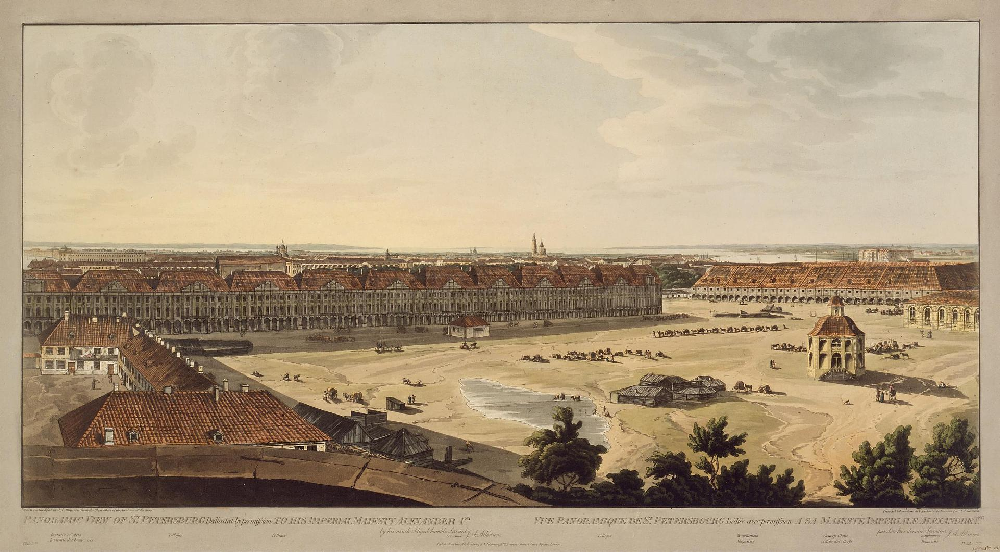
En Rusia, en cambio, todo es distinto. El propio Pedro no podía soportar mucho el protocolo. Al principio todo iba según el plan: los asistentes a las asambleas dormían todos durante dos semanas en las sillas; no bastaban los peluqueros, se lavaban con esmero, aunque no sabían muy bien hacerlo. Pedro se escarapelaba y besaba las manos a las damas… hasta el segundo vaso. En Rusia todo el protocolo dura solo hasta el segundo vaso: al tercero no llega, se rompe. Por eso, al final, no salió nada, pero el intento hubo. Lo que supone la sistematicidad es, ante todo, la observancia de la forma. El clasicismo es la forma, es la regularidad expresada como forma. Pero ¿cómo conciliar con el clasicismo un fenómeno tan típicamente ruso como el deseo de hablar del alma? Fíjense: los borrachos aman muchísimo las conversaciones filosófico-religiosas. Esto está en el carácter nacional, y esto entra en contradicción con el estilo, con la convención de la comunicación.
Así pues, el clasicismo es ante todo la idea del Estado y del orden, y se expresa en la arquitectura, y no en las artes plásticas.
El siglo XVII es el siglo de la pintura. Y en Francia, donde se crean las ideas de sistematicidad, el estilo dominante se expresa a través de dos géneros de actividad cultural: la arquitectura y el teatro. El teatro, en su sentido y significado modernos, fue creado en Francia, en la segunda mitad del siglo XVI y primera mitad del XVII. La pintura del clasicismo francés no alcanzó alturas particulares: son simplemente retratos. El teatro, en cambio, es la nueva moda, porque el pueblo no es tan letrado como para leer mucho (leerá mucho más tarde), y el teatro es lugar público, y el teatro se dirige a todos. Solo en Francia, en la época del florecimiento del clasicismo, el teatro tenía el mismo significado que en la Grecia antigua. Y desde luego, en la cumbre del teatro está Molière. Él es el creador de todo el teatro moderno. No creó el teatro Shakespeare: él creó literatura. Fue historiador, creó la imagen del mundo, pero el teatro como tal lo creó Molière.
A mi juicio, es precisamente el teatro el que determina la arquitectura, y no al revés. En la arquitectura hay escena, hay un espacio construido teatral-escénicamente. Por ejemplo, Versalles es un teatro muy grande. Hasta hoy asombra la teatralidad de París: se construyó, se reconstruyó, pero conservó su fidelidad a la tradición clásica, a la observancia de la teatralidad en la arquitectura, tanto de toda la ciudad como de los elementos particulares. En cualquier lugar de París ustedes se encuentran siempre en un teatro: hacia dondequiera que se vuelvan, a dondequiera que miren, están en escena.
Ya hacia el final del siglo XVI se había formado una tradición fantástica, única: la tradición de los franceses de pasar el tiempo en el café. Allí leen, se conciertan, beben vino y café. El principio del café francés es único e irrepetible, y es el que más expresa la idea del clasicismo. El hombre es siempre o espectador o actor: los cafés franceses están abiertos, y todos están sentados ante el cristal y miran el teatro de la vida. Ustedes están sentados siempre de modo que sean observadores de la vida. Esta es una propiedad solo del café francés, y los franceses siguen este principio hasta hoy. Solo a partir de Van Gogh, es decir, desde finales del siglo XIX, cambió muchísimo la actitud del artista ante el hombre: comenzaron a pintar lo que nunca se pintó, salvo Rembrandt: la soledad. El tema de la soledad fantástica, de los nexos rotos, se convierte en predominante en el arte. El cuadro «Absenta» es un cuadro-manifiesto.
Al parecer, este tema, muy camerístico, muy privado, recuerda a los pequeños holandeses. Pero en ellos ustedes ven el contacto con el espacio de la casa, que está descrito de un modo muy locuaz, y el contacto con el mundo fuera de casa: a través de la luz, de los objetos. El hombre en el mundo no está solo: la heroína toca música; están a punto de llegar los niños, las nodrizas, las criadas. Uno puede imaginarse todo lo que se quiera. Con Picasso ya todo es distinto. Picasso es el mayor profeta; no hay un segundo pensador semejante. En él desaparece el espacio para el hombre: queda solo el ángulo en el que está apretado. El hombre en el capullo, dentro de sí; la idea principal: el apartamiento del mundo. Es un teatro de marionetas que tiene un mundo aparente. El sentimiento de la soledad cósmica: rasgo propio del siglo XX. Malévich y Picasso son los mayores profetas. Y su profecía no se ha consumado, solo se está consumando: el mundo todavía no ha tomado conciencia de toda la profundidad de su videncia. Estamos solo en los accesos de la comprensión de Malévich. Picasso se liga al pasado, y este tiene para él gran importancia. No hay artista que no tenga vínculos, pero Picasso está ligado a toda la creación universal.
Una vez tuve la suerte de estar en una exposición de Picasso. Comenzaba con su «esgrima» con la Antigüedad (hacía copias de vaciados antiguos cuando tenía ocho años) y terminaba con lo mismo. Cuando ustedes miran al Picasso niño o adolescente, en la cabeza solo hay una idea: esto no puede ser; es de verdad un don divino. El hombre con el cordero en brazos: una imagen que atraviesa las épocas, desde la Antigüedad temprana y el museo de la Acrópolis. Allí está la escultura de un joven con cuerpo tierno, adolescente, con los ojos arcaicos desorbitados y el cordero, al que sostiene por las patas. Es un sacrificio. Tienen campanillas al cuello. A la víctima se la oye por la campanilla. A la víctima hay que verla necesariamente: ella va como víctima. Después esto se convirtió en la genial imagen cristiana del pastor que lleva en brazos a su grey. El Buen Pastor es la primera imagen de Cristo: está representado con el corderito, porque es el pastor que apacienta su grey, y al mismo tiempo él mismo es la víctima. A la vez: pastor y víctima. Y Picasso hace varias variantes de esta obra. Para él es el acarreo solitario de la responsabilidad. Después de la guerra Picasso lo dejó todo, abandonó a su familia y se fue al pequeño pueblo en ruinas de Vallauris, donde, durante diez años, como un obrero cualquiera, levantó la ciudad solo, con sus manos. Vivía en una casa sencilla, comía en un figón. Él solo restauró la cerámica y creó allí la base de su industria cerámica, abrió tiendas. Cuando en Cannes se proyectaba «Vuelan las grullas», Picasso iba expresamente desde Vallauris a ver esta película.
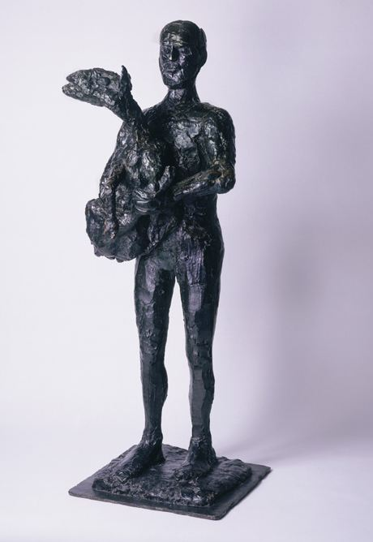
Picasso colocó además en la plaza la escultura «El hombre con el cordero», es decir, con el cordero (una copia suya se encuentra en la casa de Picasso en París). Era su deber, o su hazaña en el concepto medieval. Y estaba solo en esto. Él mismo tomó sobre sí este trabajo y lo hizo. Presentó uno de los programas más fuertes: la hazaña solitaria, la creación de la vida, la soledad en todas sus manifestaciones. Está desnudo: está fuera del tiempo, y lleva esta responsabilidad. De esta pequeña escultura de bronce en el centro de la plaza no se puede apartar la mirada. Este tema del mundo solitario, del mundo en sí, antes de Picasso era propio de Rembrandt.
Pero volvamos al clasicismo. En la base de la idea del clasicismo está la pensada futurológica sobregenial de Richelieu sobre la creación del mundo como orden inteligible. Es el modelo del Universo. Tiene un centro, un trazador y al hombre, que es parte de este mundo. Hay una parte del Universo organizado que se divisa y tiene claridad y composición organizada. El espacio está organizado, a diferencia del espacio autoformativo.
Todo el arte mundial, a lo largo de toda su historia, es el arte de dos tipos, creado por dos categorías de personas. Convencionalmente podemos designarlos como «sobrios» y «borrachos», o «locos». Y estos dos tipos, dos estilos, se suceden por turno. El clasicismo es sucedido por el romanticismo. El romanticismo es el arte de los «borrachos», de las naturalezas incontinentes. Y el clasicismo es el arte de los sobrios. El arte se desarrolla según esta ley: ora la cultura está sobria, ora borracha.
Tenemos un artista maravilloso al que poca gente ama: Andréi Platónov. Hay escritores que lo explican todo, y hay quienes consideran que explicarlo todo es imposible. Uno se encuentra dentro de alguna formación inexplicable de sí y quiere comprender dónde está. Así es Platónov: uno de los «sobrios» más principales de todo el mundo, vanguardista ideal, héroe del clasicismo.
Desde la segunda mitad del siglo XVIII y hasta la primera mitad del XX, Francia es la vanguardia absoluta de las artes plásticas: crea el patrón. El comienzo de esta paternidad de modelo fue puesto en el siglo XVII por un hombre genial, Colbert, junto con Richelieu. Dijo que Francia sería rica y legisladora. Debe producir lo que no produce nadie, a saber: objetos de lujo, y exportarlos. Esta era la idea financiera, y Francia se puso a exportar objetos de lujo. A partir del siglo XVIII, a pesar de Napoleón y de la revolución, Francia creó aquello sin lo cual el mundo normal es imposible. Francia creó a los que trabajan, a los que dan trabajo, y a aquellos sin los cuales es imposible ni lo uno ni lo otro. Creó un enorme ejército del trabajo y la aristocracia francesa. Sin aristocracia no puede haber cultura. Pero hace falta precisamente aristocracia, y no nouveaux riches, que a los hijos les enseñan japonés y chino. La aristocracia es la comitente de todo: le hacen falta caballos para los paseos, le hacen falta vestidos, encajes, perfumes, cuadros, objetos de lujo. Y hacen falta los que lo crearán todo y lo atenderán. Cuando en la sociedad desaparece la aristocracia, desaparece también la cultura. Para la democracia hace falta la cultura. Los aristócratas son trabajadores, solo que trabajan de otra manera. No son ociosos: estudian, conocen lenguas, saben tocar, bailar, enseñan a sus hijos los modales. Y debe haber otro estado de la sociedad: la bohemia. Sin aristócratas y bohemia no hay cultura. Pero la bohemia auténtica no son los que consumen drogas: son las personas libres: artistas, escritores, poetas, actores. Hay que comprender qué representan los aristócratas y los filisteos, y comprender que esto es todo igualmente honorable. Y apenas los franceses equilibraron estas tres partes, la cultura comenzó a desarrollarse con rapidez. En Rusia también apareció la aristocracia y la bohemia, y entonces la cultura dio un gran salto adelante, pero duró poco.
Desde el punto de vista de la conciencia social la democracia es bella, pero para el arte es catastrófica. Al arte le hacen falta legisladores. Las personas del arte son una casta determinada. La Francia de los siglos XVIII, XIX y comienzos del XX es el ejemplo ejemplar del florecimiento cultural absoluto. La dictadura también es mala: es la tapa que se pone sobre la sociedad por arriba, se atornilla, y debajo de ella todo se pudre.
La aristocracia y la bohemia entre sí encuentran siempre lengua; esto fue descrito en el siglo XIX. Jacques-Louis David fue el primer artista que dijo: «Yo hago arte del clasicismo revolucionario». Justamente así: no simplemente clasicismo, sino clasicismo revolucionario. Y nosotros decimos que tenemos el realismo socialista. Pero en esencia es lo mismo, y una formulación igualmente poco clara: por qué el clasicismo es revolucionario, no se entiende. No entremos en categorías valorativas. Cuando se trata de figuras de la escala de Pedro I o de Napoleón, no se puede aplicar la categoría «amo-no amo». Hay una Rusia anterior y posterior al tiempo petrino, y hay una Francia anterior y posterior al tiempo napoleónico. Son personas que adelantaron los relojes del tiempo histórico. Lo mismo se puede decir de Alejandro Magno: antes de él había historia estatal, y después de él, universal. Cuando Napoleón era escolar, escribió en su cuaderno de geografía: «La isla de Santa Elena es una isla muy pequeña». ¡Es asombroso! Hay un cierto enigma, un cierto presaber, una intuición, una pre-intuición. Por eso tales personas aman muchísimo a las adivinas. Y Napoleón se rodeaba de tales personas.
Ellos influían en el mundo. Desde luego, el derrumbe del imperio napoleónico fue para Europa un golpe terrible. Stendhal escribió un libro estremecedor sobre Napoleón, su enorme ejército, sobre las personas que lo veneraban y participaban en su vida extraordinaria y cautivadora, y sobre aquella desilusión y estrés mundial. Y este estrés duró mucho. A las personas las invadía la inquietud y comenzaban a ocuparse del cambio de lugares. Los jóvenes estaban en estrés por los sueños truncados. Comenzó un tiempo interesante que se puede llamar «tiempo alucinatorio» o «tiempo de los borrachos». En todo el espacio mundial el Imperio, aunque permaneció, se puso a llenarse de otro contenido. Comenzó la época postnapoleónica; es un paso muy rápido de un tiempo a otro. Se puede comparar este proceso con la situación en Rusia, cuando en un solo día se supo que el zar ya no está: ayer estaba, y hoy ya no está. Y Dios ayer estaba, y hoy ya no está.
Para la vida del hombre, para su conciencia, para su comportamiento, esto es muy duro. La literatura francesa presta mucha atención a este tema. En aquel tiempo postnapoleónico muy muchos dijeron: «Tenemos que ir a Oriente. Allí está Sheherezada, los harenes, los sultanes, allí se fuma el cachimbo, se viste de tal y tal manera». Y comienza la época de la afición por Oriente. La gente se cansó de la modernidad burguesa; se quería otra cosa. Y las personas se fueron a Oriente. Eran jóvenes de buenas familias, dandys de rostros pétreos y mirada sin parpadeo, una enorme cantidad de bohemia y de los que les servían. Pasearon, cazaron, se sentaron junto al sultán, ¿pero cuánto se puede? Escribieron unos versos «¡Shagane, tú eres mía, Shagane!» y comenzaron a ocuparse de arqueología. La arqueología europea debe su origen a la afición general europea por Oriente. Napoleón abrió los senderos hacia Egipto, con sus pirámides y faraones, y hacia la India lejana y maravillosa. Las consecuencias fueron asombrosas. La época que comienza en el tiempo postnapoleónico se llama convencionalmente época del romanticismo. El clasicismo es sucedido por el romanticismo a través del Imperio; surge un nuevo estado de ánimo y nuevos intereses. Las direcciones son muchas, y son variadas, pero no las que están ante las narices. Interesa el rey Arturo, los Carolingios, la India lejana con sus maravillas, China, el África del Norte: camellos, arenas y, desde luego, Grecia. Y a Europa irrumpieron la transmisión del pensamiento a distancia y las sesiones espiritistas. Comenzó una vida interesante.
Nikolái Gumiliov en 1913 partió a África por estas mismas razones. Y aunque era ya un período histórico un poco distinto, en Rusia llegó precisamente así. En cuanto a Gumiliov, aunque él fue la personalidad más resplandeciente de la élite aristocrática y bohemia rusa, la atención estaba dirigida hacia Anna Ajmátova. Ella, hablando burdamente, lo sobrepasó en el canto, porque precisamente ella dijo: «En Rusia hay que vivir largo». Ella vivió en Rusia largo, y se hacía la biografía con mucha exactitud. Gumiliov no vivió largo. Es difícil decir quién de ellos poseía el don mayor de poeta, porque Ajmátova el suyo lo desarrolló en el tiempo, pero como personalidad Gumiliov fue sobresaliente. El arma de oro por valentía la tuvieron solo dos hombres en Rusia: Gumiliov y Lermontov, y esto significa mucho. Lermontov recibió su arma de oro siendo joven, y él es el hijo típico de la época napoleónica del romanticismo ruso y mundial.
Ahora pasemos al romanticismo francés y a sus mayores representantes, tanto en la pintura, como en la literatura, y en la poesía, y en la música, porque el romanticismo no fue solo en la pintura. El romanticismo es un estado del alma; es un modo de vivir y de morir. No fue una corriente en el arte, como se suele creer: es un estado del alma. La tisis, los duelos: es un modo de vivir y de morir. El romanticismo no es un estilo artístico, aunque hay rasgos comunes. Si la idea principal del clasicismo consiste en que el hombre es soldado de un único ejército, el romanticismo es individualista.
De los cuadros creados en el espíritu del romanticismo se hace claro cómo se quiebra el esquema compositivo de telones-teatral. De clara y perceptiblemente nítida se vuelve dinámica, impetuosa, diagonal. Ejemplo brillante: Aivazovski, romántico del tiempo postnapoleónico, y su «Novena ola». El argumento del cuadro es el naufragio. Aparece el héroe predilecto del romanticismo, que está ausente en el clasicismo: la fuerza elemental. ¿Y dónde está la fuerza elemental más principal? En el mar. La tormenta. La fuerza elemental del agua, del mar, es indómita y no tiene dueño. El hombre es solo una astilla. Aivazovski, con sus cuadros de temas marinos, fue comercialmente muy exitoso. En muchos apartamentos todavía cuelgan lienzos de Aivazovski. ¡Y cuántas falsificaciones entre ellos! Al mismo tiempo, desde luego, él es el elegido de un público determinado. Pero él es el único de los artistas rusos que es fundador de esta búsqueda de la imagen romántica de la fuerza elemental.
Y todavía una cosa importante para el romanticismo: soplan los vientos, se levantan las olas, pero además están los fantasmas del pasado. Este tono lo dieron Byron y los franceses. Byron tenía una actitud especial ante el mar. Se sabe que cruzó a nado el Canal de la Mancha. Es legislador y hombre genial. Byron creó la imagen del movimiento libre dentro del mundo libre, la búsqueda de la invención y la creación de imágenes de los principales viajes incorruptibles. Es el primer hombre que escribió una novela en versos. Es el hombre que pasó mucho tiempo en Oriente.
Pero Byron tiene también versos maravillosos que conmueven a todos los románticos:
He aquí son los fantasmas del pasado. El sentido más grande en el romanticismo. La exótica.
Es asombroso, desde luego: tal explosión y fuente completamente nueva. Igual que Aivazovski, es el más auténtico fenómeno romántico en la tendencia de todo el mundo, que también en Rusia es muy grande; simplemente no nos damos cuenta.
¿Y el romanticismo pictórico? Cuando comenzamos a hablar del romanticismo, por alguna razón recordamos a Briullov, pero en realidad él no es en absoluto un romántico. Tiene el tema romántico de Pompeya: el derrumbe del mundo, pero está construida según las leyes férreas del clasicismo. Briullov por su manera es un clasicista, aunque sus temas eran románticos. En cambio Savrásov, Vasíliev son artistas de la época del romanticismo. Y corresponde con ellos la poesía rusa, ante todo Pushkin.
El romanticismo es la tendencia paneuropea ligada a la época postnapoleónica, que hizo estallar la cultura. Y esta explosión fue increíble, con una colosal restitución de energía en todas las direcciones. Se crearon nuevas direcciones en la ciencia. La arqueología existía ya antes, pero el arqueólogo Winckelmann entraba en la corriente bohemio-aristocrática en la cultura, que se llamaba «Tempestad e ímpetu». Winckelmann era el ideólogo de esta corriente. Por entonces fueron creados los «Bandidos» de Schiller, y después Pushkin hizo de Dubrovski: la variante rusa del bandido de Schiller. Había que tener tal mente analítica, como la tuvieron Schiller y Pushkin, para decir: si un hombre, incluso el más hermoso, entra en el camino del bandolerismo, del asalto y de la violencia, sea cuales fueren los impulsos románticos con que ello ocurriera, se convierte en bandido. Dubrovski tenía las intenciones más buenas; lo hizo por amor, y resultó que es un bandido. Las mentes más grandes dicen: el hombre debe controlarse para no pasar del límite.
Y aunque Francia es el país clásico avanzado de toda la cultura del siglo XIX, a partir del romanticismo (Musset, y Théophile Gautier, y George Sand, y Victor Hugo, y la escuela parnasiana de poetas, y artistas asombrosos), la brumosa Albión de ningún modo estaba atrasada. En primer lugar, allí estaba Byron. En segundo lugar, allí se formó la genial escuela poética de los Lagos, al frente de la cual estaba el admirable poeta William Wordsworth. Y los ingleses crearon la pintura única a través de la escuela romántica; lo más importante: crearon un estilo que hasta hoy no ha perdido actualidad. Los propios ingleses lo aman y lo consideran el mejor estilo en todos los niveles. Su filósofo fue el teórico John Ruskin, al que admiraban y respetaban muchísimo. Su escuela ejerció influjo sobre la cultura mundial. Para los ingleses ella es la expresión de la conciencia emocional nacional.
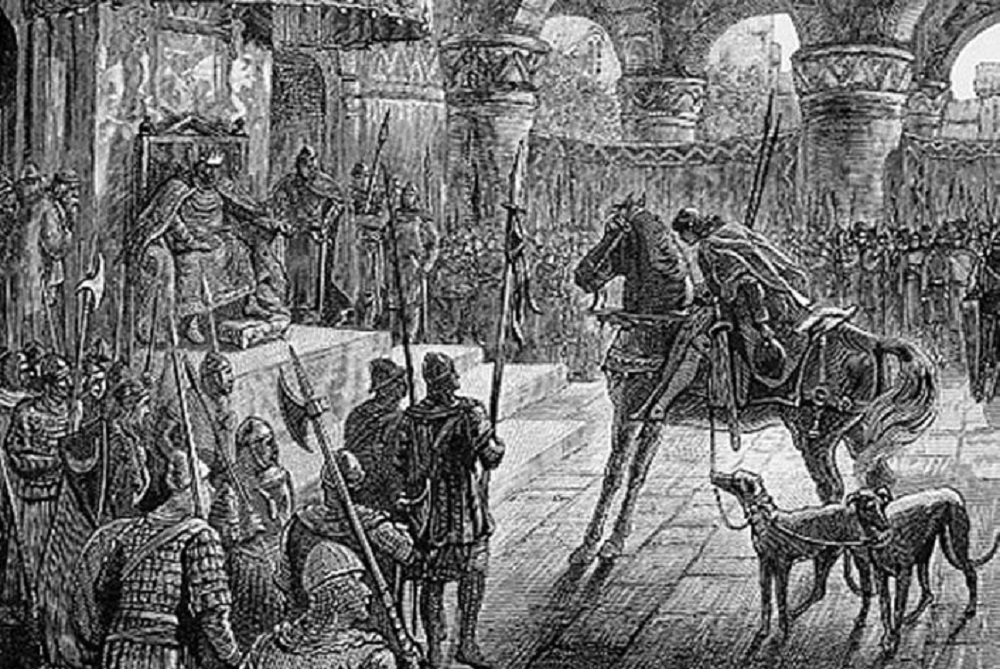
El tiempo postnapoleónico crea un espacio histórico único no solo en Europa, sino en todo el mundo. Napoleón fue un fenómeno tan extraordinario para la historia que con sus actos adelantó los relojes. Personalidad inexplicable. Solo se puede conjeturar qué llenaba el espacio de este hombre que, siendo un cabo pobre de sangre italiana de corso, fue al mayor astrólogo, Laplace, para encargarle su horóscopo propio, cosa que era bastante inusual. Y una vez Laplace convocó a la alta sociedad francesa en su observatorio astral. Estaban sentados, bebían café, entablaban conversaciones vanas, fumaban, comentaban las noticias y no acababan de comprender por qué este gran astrólogo los había invitado. Pero después oyeron el chirrido de los viejos peldaños de madera y comprendieron que hacia ellos venía alguien más. Entonces Laplace dijo: «Señores, ¿oyen ustedes el chirrido de estos peldaños? Hacia nosotros sube el hombre más grande de Francia y del mundo. El destino de Francia viene hacia nosotros». La puerta se abrió y entró un hombre pequeño, con el uniforme rasgado. Cuando Laplace le hizo el horóscopo, en él estaba todo: toda la curva de su destino, incluido el tiempo de su caída: la doble Lilith. Napoleón recibió este horóscopo. Vivió y se convirtió en estratega militar, quedando como personalidad incomprensible, siempre rodeado de hombres aún más extraños. Tenía su adivina, su astrólogo. Por alguna razón las personas de tal clase tienen sed de saber qué les espera mañana. Churchill era igual: hombre irónico, cínico. Estas personas tienen un mundo interior tan complejo, lleno de saberes complejos sobre sí, sobre el mundo, que necesariamente necesitan brújulas.
Primero fue el barroco, luego el clasicismo revolucionario, luego el clasicismo académico, luego el romanticismo, el impresionismo, el posimpresionismo, la vanguardia… Nosotros lo dividimos todo por años, pero en la vida no ocurre así. Lo clasificamos todo para tener delante el cuadro entero. Sin embargo, se puede decir con seguridad que el cambio de tendencias, de ideologías espirituales o artísticas que exigen su expresión en la literatura, en la ciencia o en la pintura, va en un ritmo determinado. Y este ritmo se conserva hasta hoy, con la corrección por la situación histórica o por las particularidades nacionales. Veamos, por ejemplo, el fenómeno de la existencia tras la guerra, cuando se dice: llega un tiempo nuevo en todo el mundo. Pero ¿qué es, este tiempo nuevo? ¿Quién lo sabe hoy? El filo de 1943-1944 es la guerra en el viraje, la guerra en la quiebra. En 1944 ya estaba todo claro. El papa publica la encíclica de la que ahora nos hemos olvidado. Y allí está dicho que desde ahora comienza una época absolutamente nueva. La vieja época ha terminado; por eso la iglesia en 1944 en el Vaticano perdona los pecados a todos: perdona los pecados a los fascistas, a los comunistas, a todos los que participan en esta locura de la guerra, a todos los choques ideológicos extremos… e incluso perdona los pecados a Judas.
Comenzó el flujo de una literatura completamente nueva que explica qué es el comunismo. Es un régimen dictatorial terrible, de extrema izquierda, en el que las personas no pueden elegir su destino ni sus actos. No son libres. Pueden pensar lo que quieran, pero no tienen ni elección ni vida. Actúan de acuerdo con cierto régimen dictatorial. Lo mismo atañe a los fascistas. Pero la encíclica considera todo esto precisamente desde este punto de vista, porque se desconoce cuál fue la situación con Judas. Se vuelca por completo la concepción del mal, y ahora se dice que él estaba condenado a esto, y sin él no habría salido nada. Por eso hubo el sueño de los apóstoles, y Cristo los previno. Y durante el sueño ocurría la oración por la copa y el «Padre, no me abandones». Y después el más fiel Pedro fue el primero en traicionar, hasta que el gallo cantó tres veces. Es un hombre infeliz, a quien le fue propuesta tal misión. Sobre esta tragedia está escrita una cantidad enorme de novelas. Peter Weiss escribió una oratoria y se puso en la Taganka. Los acusados y los jueces. En el primer acto unos son acusados y otros juzgan, y en el segundo se cambian de lugares. También allí se dijo que más de la responsabilidad colectiva general y de la irresponsabilidad ya no hay: todos responden cada uno por sí. Y sigue la famosa acción de Núremberg, que fue publicada en la revista de la UNESCO. Otros dos hombres descubrieron las leyes de la regulación de la herencia genética. Recibieron el premio Nobel, pero dijeron que entregar en las manos de la humanidad su descubrimiento no pueden, porque la humanidad está en un estado tan infantil que enseguida usaría estos saberes contra todos los hombres. Y da igual de quién sea que se encuentre en las manos.
En este mismo momento aparece Sartre y comienza una nueva época: el desplazamiento de la conciencia, un nuevo escalón. Es el caos. Nosotros no podemos reunir en uno lo que ocurre en nuestro país: lo mismo, solo con retraso. En 1953 muere Stalin, y comienza en nosotros una nueva época: de los campos salen las personas, comienza una literatura nueva. Todo lo mismo, solo que con retraso, solo con su sabor, con su matiz, y esto se llama «tiempo postestalinista». El proceso histórico entró en el cero, y no es asunto de nuestra mente pensar cómo gobernarlo. Dentro de este proceso hay siempre levadura, fenómenos generales hacia los que se van las respuestas.
Volvamos al romanticismo inglés. Fue uno de los últimos intentos de atraer hacia la vida una cultura que se disolvía, desaparecía, moría. La élite inglesa lo hizo, la llamó de la nada. En nosotros este papel lo cumplió Gumiliov. ¿Qué intento fue el de los románticos? Las personas que vivían una crisis interna y desconcierto, que perdieron el suelo bajo los pies, decidieron rehabilitar, arrojar de sí e introducir en la vida el romanticismo caballeresco. En los cuadros de los prerrafaelitas ingleses de nuevo en la arena de la historia aparece el verdadero ideal de caballerosidad. Esto se llama «el grito al abismo en el filo». Todo se desmigaja, y es el último intento de afirmar los temas que están a punto de desaparecer y disolverse para siempre. Son los ideales caballerescos de la bella dama, del servicio caballeresco. La historia se lee en este contexto, recordando a cierto rey, fundador de la dinastía capeta llamada Hugo Capeto, que amó a una sirvienta y se puso a servirla. Ella se convirtió en reina, fundadora del linaje de los Capetos. A esta lista entra también el rey Arturo. Precisamente en este momento comienza toda la ideología del ciclo artúrico. En Rusia esto fue la ideología de los bogatires fabulosos y de los reyes en los cuadros de Vasnetsov, etc. Va el intento de agarrarse, asirse a la cultura medio fabulosa, medio borrada, pero necesaria para presentarla a la sociedad, el intento de devolverle los valores absolutamente perdidos y tan necesarios a la sociedad.
Comienza una literatura extraordinaria en todo el mundo. Gana popularidad Carlomagno. Se le levantó el monumento a finales de los años 60, porque era necesario. Procesos semejantes van en todo el mundo, dentro de este requerimiento indispensable, obligatorio, derramado en la tradición europea, de devolver a la cultura la representación de la caballería, del hombre-caballero y, desde luego, obligatoriamente de la bella dama, porque todo comenzó a venirse abajo. Palabras maravillosas escribió Anatole France. Escribe: «Mujeres, os prevengo: temed la emancipación: para vosotras es ruinosa y mortal». Y él mismo responde a la pregunta de por qué dejaron de ser misterio y se perdió el interés hacia ellas: «Preso de horror preveo aquellos tiempos terribles en que algún descortés no os cederá el asiento. ¿Quiénes erais? ¡Recordaréis quiénes erais! Erais la tentación de San Antonio en el desierto. Erais el misterio. ¿Qué hacéis? ¡¿Qué os habéis puesto esas medias?!»
Esto aparece incluso en Rusia, que seguía claramente una tradición ortodoxa muy severa, donde la Madre de Dios es Siempre Virgen, y no Reina Celestial, y su asunto es parir, soportar y pedir. En Rusia aparece precisamente de este tipo el romántico que ocupa el espacio de la poesía rusa: Alexander Blok, que se dirigía a la bella dama. Y quién está detrás de esta imagen: no importa, aunque fuera la propia hija de Mendeléyev. Mientras tanto, esta mujer encajaba poco en el estarcido: enorme, grande, parecida al padre, concreta, infeliz y mujer talentosa. Escribió el mejor libro sobre la historia del ballet. Era una persona muy lista y culta para su tiempo. Cuando Blok comprendió lo que había hecho con ella, ya era tarde. Y comienza el movimiento de la bella dama. Blok escribe «La rosa y la cruz» sobre Bertrán, Gaetán y la bella dama. Detrás de todo esto está la ideología: en Inglaterra envolvió a la gente sencillamente sin excepción, en Rusia a un nivel increíble; de Francia e Italia ni hablar.
Aquí es importante además el momento de la contemplación, de la examinación de los cuadros. Cuelgan en el museo, desgajados de todo. Se acercan las personas, miran y dicen: ¡ah, qué trajes! ¡qué mujeres! ¡Habrá que ver, tener tanta suerte, que la mujer tenga tal óvalo del rostro, tal mata de cabellos, tales ojos de sirena! Y solo a ella pintan.
Y los artistas vuelven deliberadamente a los motivos medievales, vuelven a los vitrales. Blok se inventó a su dama, y los artistas tenían modelo viva. El cuadro de Konstantín Sómov «Dama en azul»: ¿no es una bella dama?
El romanticismo tardío: una ideología concreta, única, que llaman el retorno del ideal caballeresco. Algunos hombres procuran seguir este modelo. En Rusia, igual que en Inglaterra y en Francia, va el renacimiento del cuento. En las familias comenzaron a educar a los niños; cambió el propio sistema de educación. A los niños se les inculcaron los ideales caballerescos. Entraron en la sangre la literatura y la pintura. Cuando venimos aparte a mirar los cuadros, ellos son la expresión de la idea nacional del tiempo, del estilo hermoso, del retorno o del intento de devolver a la sociedad la conciencia y desviarla de la máquina del socialismo. Y detrás de esta ideología están los rosacruces: concretamente, y no abstractamente. En Rusia los rosacruces eran personas de la alta sociedad y millonarios. Es un fenómeno muy elitista. Muchas personas, incluso historiadores, confunden a los masones, a los rosacruces, a los judíos-masones. En realidad todo es muy sencillo, solo que hay que saberlo. Ocurría el renacimiento de la logia rosacruz (y es una logia internacional, rosacruz en su base), es decir, de la cruz y la rosa, a saber: de los caballeros y de las bellas damas.
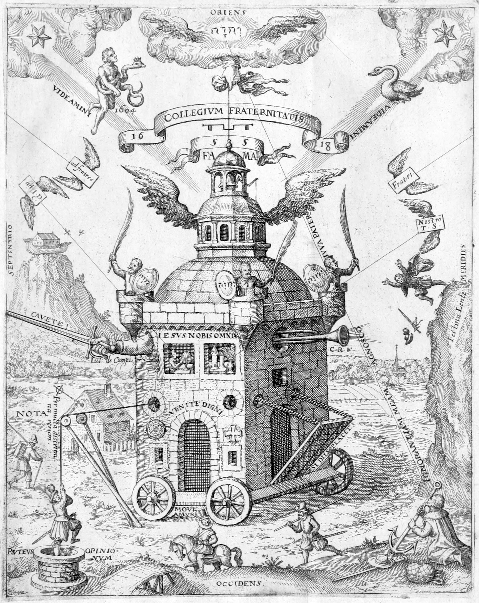
El apellido Rosacruz no existe: es la proyección de la rosa en el centro de la cruz de la catedral. Es un símbolo que en realidad es el retorno de la tradición templaria. Nadie recuerda quiénes eran los templarios, nadie recuerda sus campañas. Todo se mezcló en las cabezas de las personas gracias a los millones de libros, porque esta ideología para la cultura y la política es no menos seria que, por ejemplo, el socialismo. Los rosacruces vencieron en parte en la idea humanitaria mundial, y el socialismo, en un país concreto. No hay que confundirlos. ¿Quién en Rusia está al frente?
A. M. Piatigorski investigó seriamente este tema. Y él escribe con claridad, como investigador, por qué se ocupó de esto y por qué se ocupan de esto todos los grandes científicos. La ideología de los rosacruces es aquella base o aquellos afianzamientos internos sobre los que crece el romanticismo, el servicio a la bella dama, la cultura caballeresca en Europa y en Oriente. No lo llamaremos con la palabra trillada «sociedad secreta». Al parecer, ni siquiera fue secreto. Pero a él pertenecían personas al frente de las cuales en Rusia estaban dos hombres muy famosos: Mijaíl Ivánovich Tereshchenko y el padre del escritor Nabókov. En la casa de los Nabókov en Inglaterra había el culto de la caballería, y él también creció entre este culto. Blok en sus diarios escribe sobre Tereshchenko. Escribió «La rosa y la cruz» para Tereshchenko, y este le hace correcciones, porque Blok penetró insuficientemente a fondo en el culto de los rosacruces. Pero Blok era poeta, y los poetas están libres de cultos. Esta ideología se distingue muchísimo de la ideología de cualquier sociedad, incluida la masónica. Los rosacruces se separaron de los canteros y de los constructores. Tenían su tarea cultural. Ocupaban cargos muy grandes, sus apellidos se pronunciaban en voz alta: estas personas eran muy ricas.
Toda la tradición literaria artístico-poética que renace en el romanticismo tardío lleva en sí misma la idea rosacruz. Por ejemplo, cuando por primera vez en Europa fueron publicados los «Nibelungos», la leyenda, presentada como epopeya real, se convirtió en patrimonio de la lectura europea. Sin embargo, la epopeya real de los Nibelungos es completamente otra. Desde luego, los Nibelungos tienen gran influjo sobre el romanticismo alemán y sobre la conciencia mundial, pero con ellos no hay que contar. Es un fenómeno difundido. Es el último intento de las personas de devolver a la cultura la tradición de las relaciones elevadas ordenadas. Lamentablemente, a los rosacruces les estaba prescrito el distanciamiento de la política; eso estaba en su estatuto. Por eso ellos hicieron renacer los duelos, y tenían un rito interno masculino. Era una logia masculina, humanitaria-cultural. El propio Tereshchenko fue custodio de los teatros imperiales, y cuando emigró, allí mismo lo hizo renacer todo. El multimillonario de Kiev, que gastaba fondos en la cultura, le ayudó en este renacimiento.
Uno de los héroes de Piatigorski, Vadim Serguéyevich, dividía a las personas en héroes del lugar y héroes del tiempo y consideraba que los rosacruces son héroes del tiempo, y no del lugar. Este Vadim Serguéyevich dice: «Se puede sentir la tentación de ocupar un lugar en la Duma rusa, pero yo no me dejé seducir por nada y nunca, porque soy hombre de lugar: amo la lluvia, los macizos de flores bajo la lluvia, la curva del Moscova». Pero él también era caballero. Y su cabeza, su ideólogo es el hombre ante el que ellos rezaban, el que creaba la teoría de que hay que reflejar la eternidad y ser caballero del tiempo, y no del lugar. Igual que de pronto Blok escribió: «Nos hemos separado de Tereshchenko», y Tereshchenko escribió: «No me satisface su comportamiento». Pero a Blok le da igual: es poeta, es arpa del tiempo. Y las disputas entre ellos fueron duras.
John Ruskin no ocultaba su pertenencia al mundo de los rosacruces. Escribió un libro y contó cómo debe ser el arte. En la época del florecimiento de la Antigüedad la filosofía, o la concepción del universo, unía entre sí el cosmos, la naturaleza, a Dios y al hombre.
¿De qué más escriben estos artistas? Para los alemanes un significado especial tienen los «Nibelungos». Dante Alighieri era «lo nuestro todo» para los rosacruces, porque él publicó esta concepción: la vida nueva con Beatrice, y otras imágenes de su vida. Los espectadores no se detienen a pensar por qué precisamente el rey Arturo, por qué san Jorge, por qué Dante, por qué las mujeres están representadas en forma de Beatrice. Así justamente se llama el cuadro de Rossetti: estiró el cuello, cerró los ojos: Beata Beatrix (Bienaventurada Beatriz). En Alemania todavía hoy publican y leen a los niños los cuentos góticos. ¿Por qué? Porque los cuentos son educación. Si eres caballero y besas a la rana, se convertirá en princesa. O la bella durmiente, a la que viene el caballero. Los ejemplos bastan. En el tiempo napoleónico a nosotros el cuadro se escribe por encargo del partido y del gobierno. Detrás de todo esto está una cierta densidad invisible. Nosotros amamos la belleza femenina. Y de tales ejemplos hay un montón.
Cuando comenzó la crisis más dura de la conciencia renacentista, de la conciencia armónica, de la conciencia en la que el hombre precisamente oye a Dios, ¿a qué condujo esto? A la aparición de Martín Lutero, ¿pero acaso detrás de él está la cultura? No hay que confundir la ideología primitiva con lo que en línea punteada está escrito en la noosfera. ¿Qué fue lo más principal en la crisis de la conciencia renacentista? Los adamitas. Los apocalípticos: todos escriben el apocalipsis. Ellos dicen: «Somos las personas del tiempo nuevo, vinimos a proclamar una nueva época!» y todos escriben «La adoración de los magos». Al cabo de 150 años esta «Adoración» ya no será necesaria para nadie. O la escriben al revés exacto: los magos son tramposos, y a José le dicen al oído: «¡A pirar!». Allí es completamente otra posición. A quienquiera que tomes, todos escriben el «Juicio Final». No hay ideología vulgar. Es siempre el día de hoy. Europa en la época del humanismo, y son los siglos XIV-XVI, tenía tres escuelas tan poderosas. La principal era la italiana, porque Italia es la reconstrucción universal de la conciencia. Es precisamente allí donde se efectuaba la construcción del modelo de la nueva representación del mundo. Es, ante todo, el nuevo concepto de arquitectura y de conjunto arquitectónico. La construcción siempre demuestra la representación del tiempo sobre el modelo del mundo. En realidad esto es el diagnóstico de cómo Italia desplegó la asamblea arquitectónica.
¿Y qué hizo Pedro desde el principio? El asunto no está en que él invitara artistas holandeses y patrones de barco. El asunto está en que Pedro nos dio un modelo nuevo. Su actividad se desarrolló desde 1709, en 1725 murió, y el modelo ya estaba en pie. Y no simplemente en pie: ya había declarado muy alto el nuevo y absolutamente futurológico de conciencia vanguardista como nuevo modelo del mundo y de Rusia. ¿De qué manera? Pedro en el siglo XVIII hizo con la ayuda de Le Blond y de Trezzini aquello que después comenzaron a hacer solo a comienzos del siglo XX: la arquitectura tipo. Ellos llegaron a ella porque era urgentemente necesaria para presentar el modelo del Estado ordenado. Esto lo hizo Pedro, y no en los Países Bajos, sino en Rusia.
En Alemania no había arquitectura nueva. Por todas partes construían italianos, y el mundo fue tras ellos. Y aunque el órgano era de los Países Bajos, toda la música venía de Italia. Lo mismo se puede decir de la poesía. Aquí nada se puede hacer, igual que con la arquitectura. Y solo por eso Italia, en su tensión concentrada de genialidad espiritual, de transformación espiritual, en este tiempo arrastró consigo al mundo entero. Por eso en la Europa del Norte y en aquel territorio que ahora llamamos Alemania no hubo nada semejante. Pero esto no significa que estos procesos no fueran poderosos.
Los alemanes no son artistas, igual que los ingleses. A ellos desde el siglo XVII les aparece la música, pero a los italianos les apareció antes. Además son filósofos y poetas. Y cuando en los Estanques Patriarcales a cierto señor, inquiriendo de qué nacionalidad era, le preguntaron: «¿Y usted no será alemán?», respondió: «Creo que sí».
En 1450 (es una fecha aproximada) en Alemania ocurrió el acontecimiento más grande, que desempeñó un papel grande en la experiencia espiritual europea. ¿Qué ocurrió? Cierto Johannes Gutenberg inventó la prensa de imprimir. Me tocó ver en la ciudad de Santarcangelo di Romagna una gran rueda que hizo el propio Leonardo, personalmente. Y esta rueda funciona hasta hoy. Es algo así como un plancha que alisa el lino. Si esta rueda se rompe, difícilmente alguien podrá repararla. Pero todo esto no importa comparado con la prensa de imprimir. Porque, debido a que se inventó, fue convocada la reunión de todos los principales gremialistas, maestros canteros, que estaban al frente de la construcción gótica. Y ellos hicieron una declaración de que desde este minuto la construcción de catedrales ha terminado y los gremios de canteros se disuelven. ¿Por qué? Porque la catedral gótica, con su concepción del universo y con los comentarios a esta concepción, que constituían la saturación simbólico-plástica o escultórico-simbólica de la catedral, es un gran misterio. Y esta época del misterio de la bóveda gótica, cuando la saturaban con los signos y símbolos del modelo universal del mundo, de las relaciones entre el hombre y Dios, ha terminado. Ahora cada uno puede escribir lo que quiera. La prensa puso en marcha. ¿Qué fue lo primero que los alemanes comenzaron a imprimir en esta prensa? ¡Las cartas de juego! El diablo arrojó las cartas al mundo. Antes jugaban a los dados, que se consideraban juego noble.
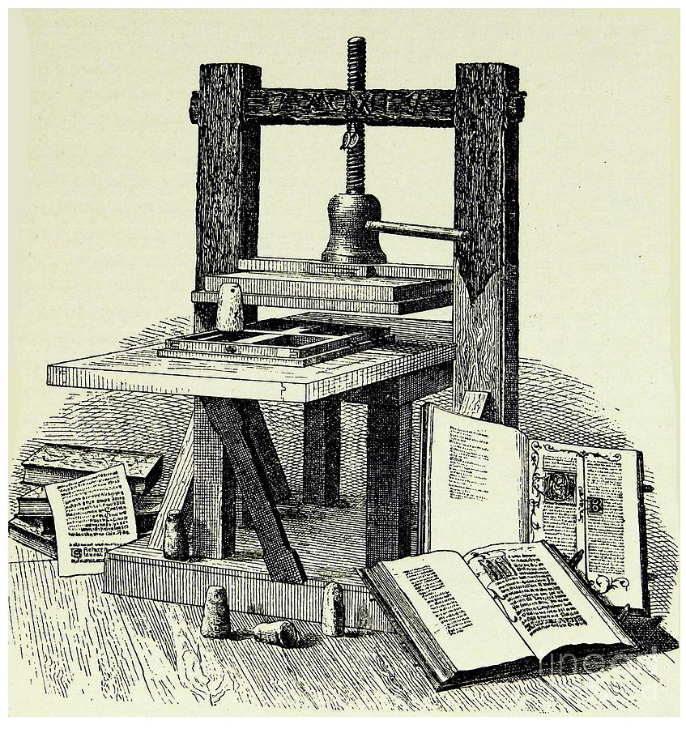
Albrecht Dürer tenía una cualidad curiosa: siempre ganaba a los dados. Tenía el sueño de perder alguna vez. ¿Cómo lo llamaban sus compatriotas? ¿Qué actitud tenían hacia él? Se pensaba de él lo mismo que en el siglo XX escribió Thomas Mann: consideraban que él era Faustus. Y el doctor Fausto es la idea alemana. Vasari, que escribía solo sobre los artistas italianos, hizo una excepción para Dürer. Dürer alcanzó alturas sin precedente, las únicas accesibles a la personalidad humana. Pero si ustedes miran sus obras, verán que allí hay una chusma: todos sus héroes juegan a las cartas. Y en Caravaggio también. Los dados quedaron como juego de los aristócratas.
La historia más interesante sobre las cartas está bien descrita por Casanova en sus memorias. Las cartas y el carnaval están estrechamente ligados entre sí. Con la difusión de los juegos de cartas aparecieron los fulleros, las cartas marcadas. Pero en Alemania, gracias a la prensa de imprimir, se desarrolla aquel tema en el arte que no había en Italia. En esto los alemanes adelantaron a los demás: es la creación del grafismo impreso, especialmente de grabados y de gráfica al aguafuerte. Muy raramente son ilustraciones: en lo fundamental, dibujos. El auténtico grafismo es Alemania. Apareció la nueva lengua de comunicación de masas: los carteles, los volantes. La invención de la prensa, la posibilidad de imprimir y la creación de la nueva lengua de la multiplicidad: nada semejante había en el mundo. Con este logro no se puede comparar ni la computadora, ni la cámara fotográfica. El año 1450 está señalado además por otra circunstancia.
Es el año de los mensajes al Papa, porque desde el punto de vista de la filosofía adamita la invención de la impresión es el comienzo del apocalipsis, puesto que uno de los signos del fin del mundo es el embrujo de los pueblos mediante la prensa. Y lo más importante: el desarrollo de la conciencia alucinatoria de masas; precisamente así lo llamaban ellos: la impresión fue equiparada a la droga. Desde este momento en el arte comienza un tema nuevo: el tema del apocalipsis: y en Miguel Ángel, y en Dürer, y en Leonardo. ¿Dónde está lo que mueve la rueda? Es la prensa de imprimir. Con Alemania está ligado mucho: la aparición de la nueva antológicamente fatal, artísticamente fatal y trágica cosmovisión, el movimiento hacia el final. El apocalipsis como idea adquiere rasgos concretos. Esto ocurre no solo en la cultura alemana, sino también en la holandesa y en la italiana. Esta idea conquista paulatinamente el espacio, como la langosta. Pero el Señor salvó a la humanidad, dejando que Alemania se unificara solo en el siglo XIX.
Sobre la Venus de Milo se han tejido leyendas, y todos van al Louvre para mirarla o a la «Gioconda». Los que no pueden ir al Louvre miran la guía, cierto que, con esto, no entendiendo nada. Muy a menudo miramos las cosas, pero no comprendemos aquel sentido profundo que fue puesto en ellas, porque existen para nosotros solo en la medida en que sabemos de ellas, y no más. Pero lo más importante es que no sabemos en absoluto el contexto cultural en el que se creaban y en el que nacieron.
No son importantes solo las cosas y los objetos concretos: es importante el contexto de la cultura; qué era entonces la propia vida, qué interesante era, cómo se componía de cosas completamente distintas. Por ejemplo, los gremios, que fueron la base de toda la vida europea, desde la Alta Edad Media hasta el tiempo de hoy: es justamente ese contexto. Y entonces no había ninguna diferencia entre los que hacían botas, teñían la tela o construían catedrales. La diferencia era solo en que unas cosas viven más que otras. Pero entre los maestros no había diferencia ni la hay, porque no hay diferencia en la actitud ante cómo el hombre hace la cosa misma. Claro que con el tiempo nosotros, mirando las grandes catedrales y las esculturas en estas catedrales, intentamos examinarlas con más detalle. Comenzamos a analizar y discutir lo que vemos. Pero ya hemos perdido aquel magma y materia asombrosos de los que nacía esta catedral. Todo esto está perdido hasta tal punto que ahora, cuando comenzamos a abrirnos paso hacia esto a través de nuestro desconocimiento, se nos va la cabeza. Comenzamos a percibir de otro modo la cultura del pasado y nos vemos obligados a reconocer: resulta que en vano llaman tiempos oscuros a la Edad Media. ¡Fue absolutamente genial!
Este tiempo asombroso lo llamaba Gumiliov «el gran ascenso pasionario europeo». Según la idea de L. N. Gumiliov, precisamente en el siglo IX cae sobre Europa Occidental aquella misma situación pasionaria de impulso que crea un efecto extraordinario. La teoría de Gumiliov la aceptan muchos y muchos la rechazan. Y esto es la verdadera tragedia para uno de los más grandes historiadores mundiales. Él propuso al mundo su concepción histórica, fundada en la teoría de la pasionaridad. Quizá la concepción es incorrecta, pero vale la pena reflexionar sobre ella antes de decir: «¡Incorrecto!». El propio Gumiliov reconocía que no comprende la naturaleza de este impulso. Y aunque Gumiliov usaba la teoría de Vernadski, afirmaba que estos impulsos, estas excitaciones pasionarias dan el mismo efecto que deja tras sí el látigo sobre el cuerpo: tras el golpe del látigo sobre la piel este lugar enseguida se hincha. Y Gumiliov decía: «Esto es la energía cósmica. Es un golpe del cosmos, que es imposible calcular».
Estos impulsos tienen un carácter de golpe en grado suficiente inesperado. Hay lugares en los que nunca los hubo, por ejemplo, Inglaterra. Este país nunca estuvo en la zona del impulso pasionario. ¿Y qué ocurría allí? Gumiliov escribió al respecto, burdamente, es cierto, pero con exactitud: «Se la trajeron en sacos mundiales los conquistadores normandos». En 1066 tuvo lugar la conquista de Inglaterra por los normandos, y ellos trajeron consigo la pasionaridad. Tomemos Rusia: la mayoría de los linajes aristocráticos tiene origen tártaro: los Yúsupov y demás. Y los aristócratas ingleses tienen origen normando: Byron, Churchill: todo son normandos. Gumiliov consideraba que allí donde ocurre el impulso, comienza la excitación. Se crean condiciones determinadas en las que surge la excitación cultural, la excitación de la personalidad y ocurre un cierto milagro inesperado del alba. Su libro sobre este proceso se llama «Etnogénesis y biosfera de la Tierra». En este libro se examina cada país por separado, se cuentan estas zonas de excitación, se dan tablas cronológicas. Allí se dice que el país o el lado del histórico excitamiento pasionario más frecuente, por causas desconocidas, es China. Si a Inglaterra esta pasionaridad llegó como resultado de la invasión normanda, en China fue cinco o seis veces.
Hay tal historia sobre Confucio. Cuando a Confucio le preguntaron: «Maestro, ¿qué dirás del futuro?», respondió: «El ave Fénix hace mucho que no renacía en la península Arábiga, y el Caballo-Dragón hace mucho que no salía del agua. Temo que todo ha terminado».
En traducción a nuestra lengua se entiende el renacimiento pasionario. El ave Fénix es el renacimiento, igual que el Caballo que sale del agua. Esto significa que todo comienza de nuevo. Y Confucio teme que todo haya terminado, porque no ve en ninguna parte este punto de la perturbación pasionaria. E incluso si Gumiliov no tiene razón, él propone al menos alguna variante de reflexión y lo demuestra en sus libros.
Una vez, cuando yo estaba de visita en casa de Gumiliov, preguntó: «¿A dónde van ustedes todos con tanta prisa? Se quedarán 45-50 minutos, y ya no están». «Es que yo lo anoto todo y temo que, tras 50 minutos de nuestra conversación, no recordaré nada». Se rio y dijo: «Siéntense. Si, cuando estén escribiendo, comprenden que algo han olvidado: llamen, y yo lo contaré de nuevo».
En los cursos donde yo entonces trabajaba, la directora era una mujer que no reconocía a Gumiliov. A la propuesta de invitarlo para que diera una conferencia a los estudiantes, la directora se enfureció: «¿Qué?! ¿A Gumiliov? ¡Está loco! No es científico en absoluto». — «¡No, por favor! No es científico, está loco: pocos científicos no y locos tenemos. Ahí están ustedes invitando a sus marxistas: también son locos y no científicos, ¿y por qué no quieren invitar a un hombre tan interesante?» La directora lo pensó y consintió: «Está bien, bajo su responsabilidad. Si sucede algo, responderán ustedes, y yo nunca iré a sus conferencias». — «¡Trato hecho!»
Todavía no había ni sus libros, y nuestros estudiantes ya lo escuchaban. ¿Por qué en la conversación sobre la Edad Media es tan importante Gumiliov? Porque la Edad Media nunca fue sombría: fue grande y genial. Y de tales épocas en la historia de Europa —poderosas, geniales, talentosas— hubo muchas, y todavía no podemos comprenderlo todo.
Para el mundo y para las personas es malo cuando ocurre una caída pasionaria. Entonces todo se convierte en cero absoluto. Y cuando surge la excitación pasionaria, también las personas se vuelven muy poderosas, y las pasiones hierven de lo lindo. Y Gumiliov señala muy exactamente ese tiempo que comienza con el imperio Carolingio, cuando Carlomagno creó condiciones completamente fenomenales. Por ejemplo, Gumiliov explicaba que en Rusia el impulso pasionario estaba ligado a la batalla de Kulikovo, cuando se formó el Estado ruso. Ocurrió un impulso pasionario potentísimo, y aparecieron muchísimos pasionarios: Sergio de Radónezh, Rubliov, y tales, especialmente apasionados e inimaginables, como Nicon, el archipreste Avvakum, Pedro I. Todo esto cae en aquella ola pasionaria que, según sus cálculos, actúa muy activamente a lo largo de mil cuatrocientos años. Luego comienza a decaer. Y precisamente en este período de un estado pasionario extraordinario, sencillamente estremecedor, se forma una atmósfera completamente asombrosa que engendró la cultura de Europa occidental.
Si ustedes abren absolutamente cualquier libro que se llame «Historia del arte», descubrirán enseguida cierta división, extremadamente necesaria para quienes primeros escribieron la historia del arte. ¿Y quién primero escribió la historia del arte? ¿Cuándo nació y exigió esa profesión inútil, innecesaria y estúpida que es la teoría del arte? El primer libro sobre el arte antiguo fue escrito en el siglo XVIII por un hombre genial que se llamaba Joaquín Winckelmann. Y lo asombroso es que todavía hoy es interesante. Él fue el primero que lo sistematizó todo. ¿Y qué significa esto? Convirtió el proceso natural de la vida en artificial, lo dividió en casillas. A los alemanes no los tendrá ni los tendrá nadie en el mundo como iguales, porque son trabajadores y sistematistas. Ellos lo escribieron todo consecutivamente: y qué siglos hubo, y quién vivía y cuándo vivía; este es el estilo románico temprano, y este es el estilo románico, y aquí está el románico tardío, y aquí el gótico.
Desde luego, en la realidad esto no existe. Esto se hace para la sistematicidad en la cabeza. En realidad esta división no existe, porque los mismos italianos siempre permanecieron al nivel del estilo románico, y ningún otro tuvieron. Cómo se les formó en el origen, así quedaron siendo sus adeptos. Recibían influjo de Bizancio en distintas esferas, pero la base es el estilo románico. E incluso cuando en la época del Renacimiento incrustaban sus catedrales con mármol de color, a la manera bizantina, de todos modos quedaron siendo catedrales románicas. Los italianos no tienen gótico. Tienen uno o dos edificios que presentan como gótico, pero no es aquello. Los italianos pasaron directamente a la época del Renacimiento, que crea un arte completamente nuevo, sin renunciar al estilo románico.
A los italianos les interesan muchísimo los muros. ¿Por qué este tema del muro? Porque sobre el muro se pueden pintar cuadros. Y cuando venimos a una iglesia románica italiana, venimos para mirar estos cuadros. Y todos los artistas italianos son adeptos del muro. Incluso cuando ya llegó el siglo XVII, apareció otra maravilla del muro románico: es el genio Caravaggio. Y ahora paseamos por Roma buscando aquellas iglesias, aquellas catedrales donde hay pintura de Caravaggio. Por eso no se puede decir que el arte románico terminó. ¿Cómo puede terminar si florece tan fantásticamente?
Pero donde existe la clásica es en Francia. Ella da la representación absoluta de lo que es la clásica de la vida medieval, la clásica de la cultura medieval, porque Francia la creó. Es el país ideal de la Edad Media. Y hay que saber cómo Francia se despedía de su Edad Media: dolorosamente, con lágrimas, con tragedia. Esto ocurrió gracias a un político sobregenial, sin igual en Francia, que sacó al país al espacio nuevo, a la época nueva, a la historia nueva, lo sacó de aquello que tanto amaba. Y este hombre fue el cardenal Richelieu. Lo hizo porque la base de la idea medieval francesa era la caballería.
Francia creó la cultura caballeresca ideal que se extendió por todo el mundo. No los ingleses, sino los franceses hicieron renacer el culto de los caballeros ideales, especialmente como el rey Arturo. El gran escritor inglés Thomas Malory escribió el libro «La muerte de Arturo» sobre la base de las leyendas francesas. Es un libro genial, porque Malory en el siglo XV reunió todas las leyendas sobre el rey y las comprendió. Antes de él escribió de esto el francés Chrétien de Troyes, y él mismo anotó la historia de Tristán e Iseo. Todo esto es cultura caballeresca, y precisamente Francia creó una cultura caballeresca fantásticamente ideal. Y no importa que olian mal, porque se lavaban mal; no importa de qué enfermedades sufrían, porque bebían de vajilla sin lavar. No tiene importancia que despreciaran los fundamentos de la higiene. Acaso en el sentido doméstico para las personas modernas esto no sea bello. Lo principal es aquello que nos ha llegado: la cultura caballeresca en sus diversas manifestaciones.
Ella realmente comenzó a formarse en la corte de Carlomagno. Y él de verdad fue el Grande. Fue un legislador magnífico. Bajo él se crean las primeras imágenes del servicio caballeresco. En su recopilación legislativa (o, dicho de otro modo, código) había una inscripción magnífica. Si ustedes denuncian a su vecino, a la cárcel se sientan ustedes, y no él. Hasta que no se averigüe si escribieron la verdad o no. Si escribieron la mentira, les cortaban la mano derecha con la que escribían. Y en el siglo XVII bastaba soplar en la grieta para que enseguida se llevaran a la persona contra la que se sopló. ¡He ahí la caída de la cultura caballeresca! ¿Y qué hacían con los médicos que curaban mal? ¡Sálvese Dios si operas y el enfermo muere! Mejor cortarse ambas manos uno mismo o no ir a curar en absoluto. Tal era el código de Carlomagno. No era simplemente un código civil ideal: era un código caballeresco ideal. Por eso bajo él se formó la genial idea de la actitud de los vasallos ante el soberano y el gran mito sobre el gran caballero Rolando.
Para este momento se forma un código caballeresco muy serio también en España, porque ella vive la reconquista, la recaptura del territorio a los moros, dirigida por el gran Cid: esto es lo mismo que Minin y Pozharski para nosotros.
Este código caballeresco fue una gran cosa. Él creó los fundamentos, y hasta nosotros llegaron las consecuencias. Son fragmentos separados de la cultura gótica y de aquello que extraemos de esta cultura en el museo de Cluny en París. Pero esto es poco: el código caballeresco fue toda una cultura. Y si en Italia tenía un carácter, en Francia era completamente distinto.
Estuve en los funerales de Tonino Guerra. No fueron funerales: a este proceso no se le puede llamar funerales. Fue como si uno hubiera caído al otro lado del espejo. Fue una auténtica mística italiana a nivel de Estado, y el acorde final, con el que terminaba la acción, fue el momento en que la esposa lo quemaba en el horno del crematorio. Ella contó cómo se sentaba junto a la ventana y vigilaba que la ceniza fuera solo de él; ella temía mucho que allí pudieran confundir algo. Después recogió con una paletilla toda la ceniza en la urna, para que, como ella se expresó, «no quedara una mota de polvo», y después lo enterró. Él dejó disposiciones sobre dónde enterrarlo. Su casa colinda con un muro que a la vez es no solo muro de su casa, sino también muro del castillo destruido del duque Segismundo Malatesta. Cuando Guerra estaba vivo, él constantemente se enzarzaba con él, con una seriedad de vecinos. Allí figuraba hasta una cuenta por casi una vaca. Segismundo entra en el número de los caballeros; tiene su blasón, en el que está representado un elefante, testificando de que él es descendiente de Escipión el Africano. ¡Y los caballeros aprecian locamente su genealogía! Y Tonino mandó enterrarse en el muro de Malatesta. Hay que decir que su casa está construida en terrazas, y en la más alta, en el muro de este caballero, tallaron un agujero redondo, pusieron las cenizas y las cerraron con un cristal grande y grueso. ¿Para qué? Para que Tonino viera siempre su Romania natal. Pero desde las ventanas de su casa se ve Romania de todos modos, como en la película de Bertolucci «Belleza robada», porque Bertolucci precisamente allí lo filmaba. Son vecinos. Sin embargo, Tonino mandó poner sus cenizas todavía más alto, para ver no solo la tierra, sino también las nubes. Todo esto son tradiciones, y muy serias. Cultura muy firme. No crean a los que dicen que Europa se detuvo, que le pasó algo, que se fue a alguna parte, como Venecia bajo el agua. Nada de eso. Venecia, igual que Europa, no piensa irse a ninguna parte.
Cuando hablamos de la cultura caballeresca, decimos que entonces fue creada la base del texto, en la que entra la descripción completa de la vida y del estilo. En la cultura la caballería declaró de sí muy enérgicamente. Por ejemplo, en la nueva imagen religiosa. El catolicismo latino presentó al mundo una nueva imagen religiosa, que sustituyó a Cristo varón por una mujer que sufre. E inmediatamente se convirtió en principal la bella dama. ¿Qué debe hacer el caballero ante todo? Venerar a la bella dama y protegerla. Se creó la oposición de la que se ocupa todavía hoy toda la cultura mundial: es el tema del esclarecimiento de relaciones con la mujer. En la cultura francesa lo principal es el principio femenino; lo mismo en la italiana. ¿Y quién creó a la bella dama? Solo la cultura caballeresca. La bella dama, a su vez, tiene patrona. Y esta patrona es la Virgen María. Por eso a ella están dedicadas muchas catedrales. Este culto de la Virgen María determina la dirección espiritual del pensamiento medieval caballeresco.
Paulatinamente se formaron las órdenes caballerescas, que no simplemente se distinguían unas de otras: ante ellas había tareas completamente distintas. Sin embargo, su historia es poco conocida. Pero ellas crearon la gran poesía europea, porque los bardos-caballeros, tomados a modo de modelo de la cultura celta, se convirtieron en portadores de un gran pensamiento literario. Se dividían en historiadores, que contaban los hechos históricos, en cantores del amor —ellos compusieron la canción alba, que es la base de toda la poesía lírica de Europa— y en cantores-relatores.
Francisco de Asís nunca fue tal: él era Giovanni Bernardone, y Francisco lo llamaban porque cantaba chanson francesa. Era admirador de la poesía provenzal. Argumento punzante, genial… Comencemos con que raptó a la muchacha Clara de su ciudad. Él más tarde la ayudó a fundar la orden de las clarisas. ¡Es imposible imaginárselo! Él, siendo monje, raptó primero a Clara, y después a su hermana: una tras otra, en el curso de una semana. Pero nadie murmuraba: todos sabían que era amor a la bella dama. Y he aquí que iban una vez los tres, vestidos con hábitos, y se puso a nevar. Tenían frío y no había nada que comer. Se detuvieron bajo un pino, y Francisco comenzó a cantarles canciones provenzales de los trovadores. Solo gracias a este culto fue creado el culto de la poesía lírica en el mundo: la canción de amor. En Francia e Italia esta canción se llama «Canción del alba». Este culto crea una cierta mentalidad literaria.
Lamentablemente, en Rusia nunca hubo aquella tradición europea que se construía sobre las relaciones mutuas entre el hombre y la mujer. En Rusia no hay ni una sola novela de amor. Los hombres se comportaban mal y se comportan mal, y novelas auténticas —ni de amor, ni eróticas, ni mesiánicas— no existen. No está este tema del amor en la literatura rusa: esto es sencillamente imposible. En el mundo donde no existe la cultura de las relaciones entre el hombre y la mujer, no puede haber tal literatura ni tal poesía. Esto no es una exageración, es un hecho; simplemente sabemos poco y no nos interesamos por este tema. ¿Qué tenemos nosotros? Solo una antología de la literatura medieval.
Pero que nosotros no lo sepamos no significa que no exista. Todo esto fue. Y desde luego, lo que quedó de la literatura medieval son las primeras memorias amorosas, escritas en el siglo XII. Las escribió el gran teólogo y científico Abelardo. ¡Qué literatura es esta! ¿Y qué le sucedió a Abelardo, a este profesor de teología y portador de la idea nueva? Lo atrapó Bernardo de Claraval, que fue un teórico muy serio de la caballería militar proeuropea y constructor de la cultura de Europa occidental, y lo castró porque sedujo a su discípula Eloísa, muchacha muy culta y simpática. Abelardo enseñaba, enseñaba y… ¡se acabó! Bernardo le dijo entonces: «Debes estar de rodillas, como ante la Madonna, y tú, canalla, ¿qué hiciste? ¡Ya te atraparé!» Dijo e hizo. Es verdad que después se reconciliaron, y Abelardo incluso se convirtió en gran sabio en la Sorbona. ¡Qué biografías!
Pero lo más importante desde este punto de vista es leer a Dante: la «Vita nova» y «La divina comedia». «Vida nueva» es un libro muy pequeño, y son también memorias amorosas. En él describe una gran aventura amorosa, su amor por Beatrice, y cuenta cómo guardaba su nombre. Ella no era una dama cualquiera, y él hacía como que no se interesaba en absoluto por ella. Iba expresamente a los banquetes donde ella estaba presente; su corazón se le paraba, pero seguía obstinadamente haciendo como que ella no le interesaba. Y para demostrárselo a la sociedad, incluso comenzó a cortejar a otra mujer. Y hasta tal grado se apasionó por esta circunstancia, que se enamoró en serio y se hicieron amantes. Cuando al marido de ella lo trasladaron a otra ciudad, él comenzó a ir allí. Y escribe: «¿Qué es esto? Amor celestial. Amor terrenal. Y el amor terrenal pesa más». Él quería amar en apariencia, y salió todo al revés. Pero entonces de pronto Beatrice murió. Era cosa corriente: entonces morían jóvenes con frecuencia. La bella dama debe morir a tiempo. Si no murió a tiempo de tisis, ya no sirve para el papel de bella dama: es una falsa dama. De tisis morían rápido, porque no se cuidaban de la higiene. También morían a menudo de sífilis. Y cuando Beatrice murió, con Dante ocurrió algo increíble. Él escribe que ella se le va, y él se halló ante la elección: atesorar y guardar en sí la imagen de su musa y bella dama o acostarse con su amante. Y ninguna de las dos cosas sale. Y él tomó la decisión genial, la correcta, de la que escribió en su libro. La cultura caballeresca dio su increíble resonancia cultural, y la manifestación más brillante, suprema y profunda de esta resonancia fue precisamente este comportamiento ardiente-varonil. Prácticamente todas las catedrales tienen el mismo plan: es un rectángulo alargado.
La catedral gótica: cruz y rosa
Vamos a examinar cómo está construida la catedral gótica. Tiene una división tripartita. La parte inferior se llama «nave». Al entrar en una catedral gótica, ustedes entran en el barco. La parte media de la catedral se llama «transepto», y la parte superior es la parte del altar. Precisamente en la nave se reúne la grey y se sienta aquí, y la nave la dirige el supremo Timonel. El tema del barco es un símbolo del pensamiento de Europa occidental. Recordemos lo que decían de Stalin: ¡nuestro timonel y piloto! Esta fórmula viene de allí: Stalin simplemente sustituyó los conceptos. Y no es casualidad.
El transepto es territorio neutral, de nadie: no es de Él ni nuestro; cae en el cero trans. Es el lugar metafísico de encuentro de Él y nosotros. Y en medio se encuentra el punto más principal: se llama «el ombligo del transepto». Si ustedes entran en cualquier catedral occidental, verán que precisamente sobre este punto se alzaba la aguja de la cúpula gótica. ¿Por qué? Antes en esta parte de la catedral, en los «bolsillos» laterales, se colocaban los confesionarios: ahora casi no los hay. Eran lugares de encuentro de Dios y del hombre. El hombre debía purificarse de los pecados, y toda la mugre salía por este punto del ombligo. Recordemos cómo escribía Mandelshtam:
Precisamente aquí se encuentra esta flecha: el lugar donde el alma. En la parte del altar flota el espíritu, y la nave es el cuerpo, pero la mitad está dada al alma. Entre ellos un enorme vínculo. Cuerpo y alma están ligados, y el espíritu no. Basilio el Grande, el teólogo principal, decía: «De joven el alma grita con el cuerpo, y de viejo: al revés». Alma y cuerpo: la historia cotidiana y la historia anímica. Y el espíritu… Lo mejor lo escribió Bulgákov, aquel lugar del libro donde describe la conversación de Ieshúa con Poncio Pilato:
«—¿Cómo quieres que te jure? —preguntó, muy animado, el desenvuelto.
—Pues al menos por tu vida —respondió el procurador—; es el momento de jurar por ella, pues está suspendida de un hilo, ¡tenlo en cuenta!
—¿No crees acaso que fuiste tú quien lo suspendió, hegemón? —preguntó el prisionero—. Si es así, te equivocas mucho.
Pilato se estremeció y respondió entre dientes:
—Yo puedo cortar este hilo.
—Y en esto te equivocas —replicó el prisionero, sonriendo serenamente y cubriéndose del sol con la mano—, convéncete: cortar el hilo seguramente solo puede aquel que lo suspendió».
El cruce en la catedral significa no solo el transepto: significa todavía una cosa muy seria. La parte central de la catedral siempre tiene forma de cruz. Puede estar realizada en variantes diversas y tiene travesaño. El ombligo nos indica no solo que aquí se encuentran los confesionarios, sino que en este lugar se produce el nudo del alma y del cuerpo. Aquí se encuentra el portal.
Si ustedes miran hacia arriba, verán que allí está el círculo de vitrales: el círculo principal, que se llama «rosa». La proyección de este círculo está en el suelo. Y al caer en el crucero, la proyección del círculo crea la unión de la cruz y la rosa. Justo en el centro del alma. Por eso la catedral católica por sentido y plan es la intersección ideal de la Cruz y de la Rosa: símbolo caballeresco o, en traducción a nuestra lengua, la idea rosacruz. En realidad nunca existió ninguna persona con nombre Rosacruz. Esto no es nombre ni apellido: es un pensamiento, un gran pensamiento: el corazón de la Virgen, la Virgen Rosa en el centro de la Cruz. El tema de la Cruz y de la Rosa. Y aquel cantero que construía esta catedral debía expresar obligatoriamente este pensamiento no solo por fuera, sino también dentro de la catedral. Por eso en el ícono se representa a la Madonna, que está sentada y aprieta contra el pecho la rosa. Si hay imagen de la rosa, es imagen del principio femenino, y la rosa puesta sobre el pecho de la cruz es el símbolo exacto de la época de la lucha varonil y femenina y de su ternura platónica.
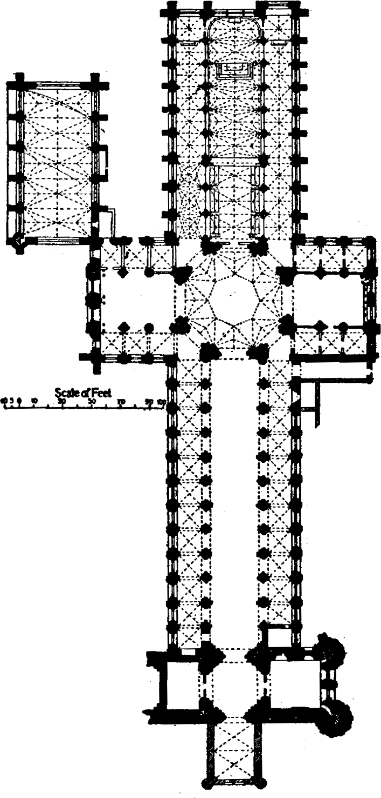
Por eso las personas, cuando construían las catedrales, levantaban en piedra proyecciones enteras de ideas y saberes. Estas personas eran al más alto grado sabias: no solo conocían el arte de la construcción única, sino que conocían el sentido de lo que se construía. La base principal de esta construcción era la vertical, la aspiración hacia arriba, a la vez muy fuerte y muy débil, grosera y muy tierna. ¿Por qué? La respuesta pueden servirlas las palabras de Mandelshtam:
He aquí esta plomada y la visibilidad de fragilidad entran en la idea principal que los canteros ponían en sus creaciones. El gótico, pues, no tiene cuerpo: es incorpóreo. Solo tiene sonido, luz y color. La cultura románica tiene cuerpo, y el gótico, no. El gótico, como la alquimia: el arte de la transformación de la piedra en encaje. ¿Quién construyó todo esto? De esto nadie supo nunca y no sabe hasta hoy. En arquitectura esto se llama «el misterio de la bóveda gótica». Además de que la bóveda se puede comparar con el encaje o con la telaraña, es una vertical: la idea de la fragilidad aparente. Pero esta fragilidad sobrevivió a muchas cosas y a muchos; es muy fuerte. Toda la idea gótica está fundada en esta verticalidad y esta finura. Todo el mundo europeo, en todo lo que hiciera, aspiraba al verticalismo. La ciudad se creaba de casas tendidas con los techos agudos hacia lo alto, con calles estrechísimas, y todo el centro de la ciudad debía ocuparlo una catedral enorme.
Todas las catedrales góticas llevan en sí un sentido muy profundo. Los lugares donde se construían eran lugares serios. Cada catedral debía tener junto a sí una universidad y era fuente de saberes secretos. Quién en concreto ideó la construcción de la catedral se desconoce. En esto está lo interesante del gótico francés: es anónimo. El Renacimiento italiano es de autor; allí todo tiene su nombre: «¡Yo respondo por mi obra! ¡Es mi creación! ¡Esto lo creé yo!» Y el gótico no tiene autoría. Nunca, ni un solo nombre. A veces se encuentran seudónimos, pero en realidad el gótico es sin nombre.
Es un principio, porque sobre todo está la guardia de los saberes: todo debe estar oculto y desconocido para nadie. Es la única condición bajo la cual todo puede ser dicho. Y este principio principal se llama «conceptualismo simbólico». Existe tal dirección famosa, pero en realidad es aquella base sobre la que se edifica toda la base cultural medieval. Esta base se manifiesta absolutamente en todo. Quedaron solo las páginas famosas de aquel manual asombroso donde a modo de ejemplo sirve la imagen del círculo que, como es sabido, es el comienzo principal y en el que están inscritas figuras que tienen su significado numérico, figurativo y simbólico-místico. Por ejemplo, una de las figuras más difundidas: la estrella de cinco puntas inscrita en el círculo.
En general, para el gremio de canteros, para aquellos fundadores, estas figuras tenían un significado puramente de trabajo. La figura era para ellos constructiva y típica. ¿Cómo inscribir la figura si construyes un edificio enorme? Está tan sobrecomplicado en su construcción, tan inimaginable, que para que todo esto se sostuviera era necesario saber cómo todo se fija unos con otros. Y por eso tenían toda una ciencia que podían confiar solo a los iniciados: a los que podían hacerlo. La base de cualquier edificio gótico son las bóvedas de nervaduras. Debían estar presentes obligatoriamente y no fragmentariamente. Mírenlas: cómo están compuestas estas pequeñas columnas de nervaduras, como haces de nervios, como dedos entrelazados. Pero ¿cómo se sostendrá esta columna si los soportes están todos sacados hacia fuera? Aquí se exigían cálculos grandes y complejos. He ahí el fenómeno de la Edad Media: estos constructores eran auténticos sabios… ¡y nosotros decimos «época oscura»!
La catedral es un libro. Y por dentro, y por fuera cuenta de muchísimo. Cada fragmento debía tener engarce con todo lo demás. Y había que componer todo esto primero constructivamente, figurativamente, al nivel del conceptualismo simbólico, como edificio vacío, y solo después comenzaba a revestirse de formas materiales concretas.
Es interesante además lo otro: la auténtica catedral católica representa un instrumento musical. Fíjense en lo que ocurre con el sonido cuando ustedes están dentro de él. El sonido viene de arriba. Es un fenómeno extraordinario de acústica. El órgano se coloca en el portal occidental, dentro, en la línea. Allí mismo está el coro. Pero ustedes nunca oyen el sonido desde esta línea, sino solo desde arriba, porque casi cada piedra de las que está compuesta la catedral tiene agujeros, como en el órgano. La catedral es un espacio donde ustedes deben estar no solo dentro de esta incorporeidad, de esta luz y de este color, sino obligatoriamente dentro del sonido. Sin esta permanencia dentro del sonido, ninguna catedral es pensable, porque es muda. Precisamente así el gremio de canteros, que tenía un grado muy alto de significación gremial, construía estos edificios. Unos morían, a su lugar venían otros, pero continuaban construyendo según el mismo plan y al mismo nivel de saberes. Podían mejorar algo, pero el trabajo igualmente seguía siendo anónimo. En estos gremios no se podía entrar por azar, «por enchufe», como diríamos ahora: o eres capaz de esta ciencia, o no lo eres.
Desde el siglo XI (hay testimonios al respecto) el gremio de maestros comienza a llamar Creador no al Hijo de Dios, sino al Padre. Dicho de otro modo: el maestro que puede crear una obra maestra se convierte en Creador. Muy temprano comenzaron a aplicar este término al gremio de canteros, y los maestros comenzaron a llevar consigo un signo especial con la letra «M» bordada. Porque si tú has creado una obra maestra, tú has creado un cierto mundo, lo has creado o fabricado. Tú eres Maestro. Es el título más alto que podía recibir un artista. Y se conservó bastante tiempo no solo entre los que fueron constructores de catedrales góticas.
Alexander Moiséyevich Piatigorski en su libro «Quien teme a los canteros libres» intentó describir los ritos de admisión en el gremio de canteros. El ritual principal, que después de un modo u otro se convirtió en la iniciación masónica, con estos guantes, con la venda de los ojos, con la leyenda de Hiram, al principio significaba la atribución del supremo saber secreto. Tú puedes ser admitido como maestro. Te convertirás no en constructor, sino en maestro-creador, pero solo bajo una condición: si apruebas el examen para el título de Maestro. Si no puedes aprobar el examen, nadie te tocará, pero trabajarás de cantero, de oficial o de capataz. Para aprobar aquel examen se requería un nivel de preparación extraordinariamente alto y talento. Y todo el que iba al examen sabía: él aprueba el examen para la obra maestra. Y la obra maestra es aquello que nadie ni antes ni después de ti puede crear. Solo tú personalmente.
Eran obras de plan puramente técnico. Ante ellos ponían el enorme alfabeto de estos símbolos y miraban cómo se apañaba el examinado con esto. Y si él en general no puede tallar con la mano una esfera de hueso, no lo dejarán pasar ni de cerca. Tallar la esfera con la mano: es el escalón inferior, no es el escalón del Maestro. Solo con un nivel muy alto de preparación artística aquellas personas podían coser tal ropa, hacer tales sillas, adornos extraordinarios a los que el siglo XVIII no llega ni a la suela del zapato, y construir tales catedrales. Eran maestros, es decir, sabían hacer todo y conocían el sentido místico-simbólico o simbólico-conceptual de los objetos del mundo: desde el Universo hasta cómo insertar la perla en el collar.
Al encontrarme por primera vez en Roma, hace muchos años, me puse a contar y anotar la cantidad y los tipos de aparejos de ladrillo arquitectónicos del Coliseo. Observaciones semejantes no se describen ni en los libros de arquitectura ni en los libros de arte. Y fue un verdadero estremecimiento comprender qué tecnologías de construcción usaban. ¡Resultó que había siete tipos distintos de aparejo! Y en realidad, probablemente, muchos más. Porque los aparejos no son solo adorno: es importante desde el punto de vista de la técnica de construcción. Además, allí se empleaba el hormigón romano, que poco difiere del actual. Allí hay un aparejo muy interesante que después, en Bizancio, fue tomado como base. Se hacía de plinfa: es también ladrillo, pero no pequeño: son tales grandes placas rojas. A veces este aparejo se combinaba con piedras o con guijarros, y entonces salía algo así como un pastel: primero va el aparejo de guijarros, luego con plinfa, luego de nuevo guijarro, y de nuevo plinfa. Todo esto está aplicado en el Coliseo.
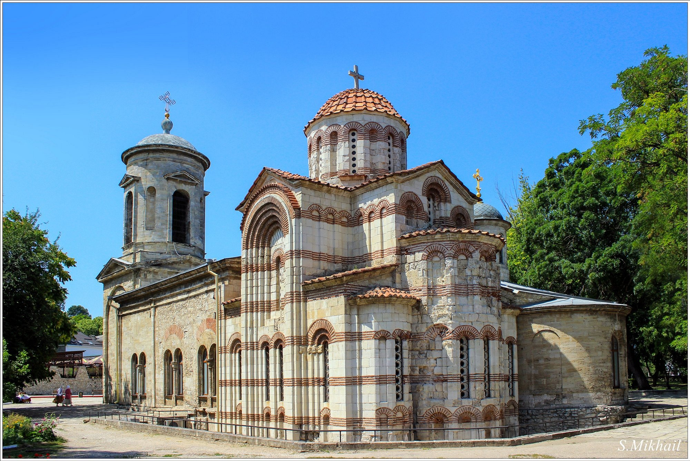
¿La tarea engendra la técnica o la técnica sugiere la tarea? Es difícil decir. Es como un ovillo: por qué extremo comienzas a tirar, eso obtienes. Pero sea cual fuere el extremo por el que tiren ustedes en este caso, de todos modos obtienen una técnica de construcción fenomenal.
¿Y qué ha quedado de Bizancio ahora? Muy poco: como mundo visual, como mundo de objetos, está destruida, no existe. No quedaron templos bizantinos, no quedaron edificios. Todo esto se derrumbó con los vórtices de la historia. De Bizancio quedó solo lo espiritual, el legado librario.
Muchos años después viajé por Rávena, donde construía el emperador bizantino Justiniano. Y allí se descubrió ¡el mismo aparejo romano! Lo usaban para la construcción, solo que ahora tiene otra llenura de contenido-espiritual, porque esto no es un hipódromo, sino una iglesia. Pero la tecnología es la misma. Lev Nikoláyevich Gumiliov, el historiador genial al que no conocemos, no valoramos y no comprendemos, definió de manera maravillosa Bizancio. Dijo: «Bizancio es el primer etnos cristiano del mundo». Es decir, Bizancio es la religión, el único campo religioso, aquel campo que une la cultura. ¿Cuántas nacionalidades había allí, es decir, grupos étnicos? Ellos mismos no lo sabían. Hablaban en cien lenguas; ora una lengua se hacía la principal, ora otra. Y el traslado de la capital está ligado a que los romeyos se proclamaron otro imperio, nuevo. ¿Qué otro? ¿En el sentido espiritual-histórico? Pero el ladrillo lo ponen igual. Sigamos adelante: llegamos a la Rus antigua, a Kiev, a la Santa Sofía. La Rus de Kiev es la construcción de plinfa. ¿Y qué quedó de ella? Nada. Y cuando en los íconos rusos se representa a Bizancio, en cualquier ícono, la iglesia en ellos se dibuja de color rojo. Y la iglesia rusa es de color blanco. ¿Por qué en los íconos es roja? Porque la plinfa es ladrillo rojo.
Miremos el ícono «La batalla de los de Súzdal con los de Nóvgorod». Es el primero y uno de los pocos íconos rusos llamados históricos que ha conservado la memoria de cómo los de Súzdal combatieron con los de Nóvgorod. En sí mismo es un acontecimiento histórico muy curioso, porque los de Súzdal con los de Nóvgorod nunca llegaron a encontrarse. Se perdieron en los bosques, y tal batalla no ocurrió. Pero los de Nóvgorod, a diferencia de los de Súzdal, plasmaron de inmediato este acontecimiento no ocurrido como gran victoria y hicieron el ícono.
En la parte superior (o fila) del ícono está representado el puente sobre el Vóljov, Bizancio, la Sofía convencionalmente roja y los mercaderes que trajeron el ícono bizantino de la Madre de Dios. Y directamente sobre el puente sobre el Vóljov los novgorodenses reciben el ícono que el patriarca bizantino envía personalmente a Nóvgorod, a su Sofía de Nóvgorod. Ahora están provistos y protegidos. Y luego, cuando se muestra la batalla misma, ¿cómo están mostrados los de Súzdal? Están mostrados como personas maleducadas, porque salieron a las negociaciones a caballo y no se quitaron los gorros. Y los gorros son tártaros: de infieles. En cuanto a los novgorodenses, se quitaron los gorros, es decir, están presentados aquí como personas buenas. A espaldas de los de Súzdal: arqueros y ballesteros que disparan contra la fortaleza de Nóvgorod, y todas las flechas van directamente hacia la Madre de Dios. No hacia alguien, sino hacia la Madre de Dios, porque ella protege a los novgorodenses y sobre sí recibe todo. En lo más bajo del ícono, en la fila más inferior, se muestra cómo de las puertas del detinets sale la hueste de Nóvgorod, y los de Súzdal salen despavoridos. Les llegó el fin, y los igualan a los incrédulos, porque los gorros que tienen son extraños.
Pero para nosotros aquí es interesante ante todo que Rusia, cuando toma conciencia de su separación y comienza su existencia cultural aparte, ignora la construcción de Kiev. Ignora la construcción bizantina. Pasa a la arquitectura de piedra blanca, al aparejo de piedra blanca. Vladímir, Nóvgorod: ciudades de piedra blanca. Solo la Rus de Kiev es de plinfa, y todavía está muy ligada a su fuente. Y la Rus de Kiev tiene mosaicos, es decir, aquello que era característico de Roma y de Bizancio. Y Rusia ya no tiene mosaicos. Y cuando en los años 80 del siglo XIX el zar Alexander III habló de la ortodoxia y de sus orígenes (es decir, de Bizancio), ¡se comenzó a construir de ladrillo rojo! En la Plaza Roja se puede ver. El estilo de Alexander III es el primer estilo modernista. El ladrillo rojo es una cosa muy seria: es cómo la cultura se comunica con el material.
Catedrales: el libro misterioso del universo
Los griegos fueron arquitectos geniales, pero no constructores. Crearon el periptero ordenado. Crearon la arquitectura ordenada de la que se sirve todo el mundo, hasta el día de hoy: es decir, creaban ideas. Roma hacía lo que los griegos ni siquiera tenían: para los romanos lo principal es la arquitectura civil, es decir, las casas de habitación y los palacios. Pasemos ahora al iconostasio y a cómo los santos de la iglesia cristiana ocuparon sus lugares en el iconostasio católico y en el ortodoxo.
Por ejemplo, dos contemporáneos, dos héroes: san Jorge y san Sebastián. Ambos son hombres jóvenes, bellos; ambos son aristócratas romanos, pertenecientes a las mejores familias romanas; ambos alcanzaron el grado, en lenguaje moderno, de coronel o teniente coronel, y esto con sus 23-24 años. Bajo el emperador Diocleciano, uno de los mejores emperadores romanos, fue creado todo el panteón de nuestros grandes mártires. Los hizo Diocleciano. ¿Qué hacer al emperador si tiene cristianos en su propia familia querida, bajo las narices? Él inventó la solución y dio ejemplo a todos: Diocleciano creó el precedente de los procesos políticos individuales, de los procesos con nombre propio. Antes los procesos eran anónimos: a los cristianos directamente en grupo los mandaban a la jaula con los tigres. En la URSS en 1937 también comenzaron los procesos con nombre propio. Y a estos dos aristócratas les dicen: «¡Renegad!» Y ellos en respuesta: «¡No renegamos!»
Vysotski tiene un relato maravilloso de cómo en el MjAT montaban «Anna Karénina». Y en esta historia iba el relato a nombre de un tipo marginal sobre cómo él vio este espectáculo. Cuenta: «Sale Anka. ¡La mujer: vaya! Todo en ella: ¡vaya! Pues recuerda, en el Flete, en Odesa, Marusia vendía pescado. ¡Copia exacta! Sale Vronski. El muchacho: ¡vaya! Todo en él: ¡vaya! En general: héroe de la Unión Soviética. Y él dice: Anka, ¡dame! Ella le dice: ¡No! Él de nuevo: Anka, ¡dame! ¡No! ¡Sí! ¡No! ¡Sí! ¡Sí!… Y bajo el tren». Más o menos igual amamos nosotros los procesos políticos. Estos procesos se anotaban. Y así ante el tribunal se presentaron dos muchachos jóvenes y hermosos, esperanza del ejército, favoritos del emperador. A uno le preguntan: «¿Eres cristiano?» «¡No!» «¿Eres cristiano?» «¡No!» Debajo de la rueda con él. «¿Eres cristiano?» «¡Sí!» Y bajo el tren.
Pero lo más interesante es que, cuando sostenían estos procesos políticos personales, los sostenían como en la escena de un teatro: con espectadores, públicamente, y anotaban todas las declaraciones: tanto las femeninas como las masculinas. Y estas declaraciones, anotadas en el proceso judicial, se convertían en las primeras vidas de santos. ¿Este documento? Documento. ¿Original? Original. ¿Del gran mártir? Sí. Lo copiaron a la vida.
Así el emperador no solo creó en el cristianismo los nombres de los grandes mártires, sino que introdujo además que todo esto se anotara. Y bajo él surgió un nuevo tipo o género de literatura histórico-biográfica: la vida de personas notables, el ZhZL.
Aquí surge la pregunta: por qué uno de los jóvenes es el favorito de la iglesia oriental, y otro, de la occidental. Jorge es el favorito de la iglesia oriental. Lo aman muchísimo los georgianos y los armenios. En cuanto a los rusos, él está sencillamente representado en el blasón. ¿Y dónde se puede ver a Sebastián en la ortodoxia? En ninguna parte. Y en el iconostasio no está. Jorge, es verdad, en la cultura occidental también se encuentra: lo aman los irlandeses. ¿Por qué entra en la mitología irlandesa? Él es matador de serpientes, y el tema favorito irlandés es la lucha contra los dragones. Los dragones viven en Irlanda, y allí va el caballero para hacerse héroe. Mejor si los dragones son policéfalos. Por eso el matar la serpiente de Jorge se fusiona con la romántica del folclore gótico. Y aquí comienza lo más principal. ¿Por qué, sin embargo, la ortodoxia no reconoce a Sebastián? Su historia es tal: lo pusieron ante las falanges. Él comandaba seis regimientos, y luego lo pusieron ante sus propios oficiales, y cada uno le disparó una flecha. ¿Por qué no aceptarlo? No, no es necesario. Porque Jorge tiene una vida milagrosa póstuma: él, resucitado, realiza ciertos altos actos de liberación de las personas. Aparece ora allí, ora acá. ¿Recuerdan cómo liberó del dragón a la ciudad? Él tiene nombre: Matador de Serpientes y Libertador. Él tiene el rango póstumo elevado de la hazaña. Y Sebastián no tiene nada de esto. ¿Qué ocurrió con él? Le disparaban, le disparaban y no le acabaron de matar. Uno de sus compañeros de regimiento arrastró a Sebastián a las catacumbas, y allí estaban los que podían curar. Y sobrevivió, y se convirtió en obispo. Tenía su obediencia. Fue un gran dirigente cristiano. Pero a nosotros en la ortodoxia tales historias no nos hacen falta; no son populares. ¿Comprenden qué sutileza? ¡No hay hazaña! No hay la hazaña depurada: hay un obispo.
Y tal amplitud de los marcos de la idea católica es muy grande: el derecho a la imagen lo tiene todo. Se encontraron alguien y alguien junto al pozo, y esto se convierte en buen argumento. ¿Y acaso para Rusia puede ser argumento un muchacho que se encuentra junto al pozo con una doncella? Para el iconostasio no sirve el argumento bíblico donde florece un arbusto, en el pozo hay agua, y al lado, el amor. El pensamiento artístico está construido sobre una dramaturgia de conflicto: es conflicto-dramatúrgico. La cultura occidental tiene un rasgo característico: tiene en todo el teatro. El arte principal en Occidente es el mundo teatral, el arte del teatro: el teatro en todo.
¿Qué es el arte como teatro? ¿Y cómo no teatro, sino algo otro? Es extraordinariamente interesante cuando en la base está la conciencia dramatúrgica. Entonces el beso de Judas y la Santa Cena deben existir. En la dramaturgia es obligatoria la presencia del mal, de la tiniebla, del otro polo. La cultura occidental tiene obligatoriamente como uno de los héroes a la sombra. Por eso tienen tal cantidad de relatos sobre la sombra y una noción muy clara del mal.
Los destinos mismos de las iglesias son completamente opuestos. Aunque la Iglesia occidental se forma como iglesia con el papa al frente, es pluriforme, de múltiples órdenes. En ella una enorme cantidad de órdenes: franciscanos, benedictinos, dominicos, iluminados, caballeros templarios, juanitas… Y esto solo a primera aproximación. Y para todo hay permiso del papa. Existe una enorme cantidad de órdenes monásticos; cada orden tiene su regla. Hay una iglesia única bajo el sombrero-tiara, pero esta iglesia tiene la multiformidad del modo de vida.
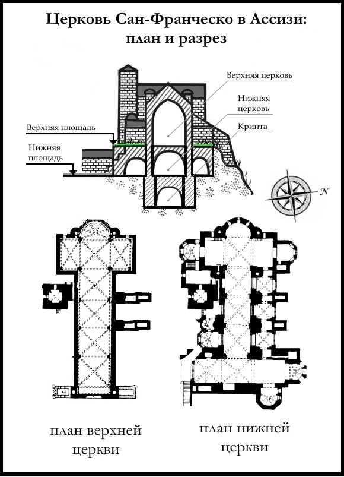
La iglesia ortodoxa no tiene plurimodalidad. En la ortodoxia hay la iglesia negra, es decir, la tonsura monástica, y la iglesia secular sacerdotal. Dicho de otro modo: hay la iglesia y el monasterio, solo estas dos categorías. La cultura, de este modo, desde el principio resbala sobre sus pies y se separan muy lejos una de otra y no tienen en absoluto entre sí ninguna unión. Los intentos de hallar el consenso político terminaban siempre muy lamentablemente.
La iglesia latina tiene dos direcciones, dos brazos: uno directamente latino-italiano, y el segundo, de Europa occidental. O, si decirlo del todo simplificado: tiene el brazo italiano y el brazo francés. Lo uno y lo otro es iglesia católica, pero son muy distintas y se comportan de distinta manera. Tienen tradiciones artísticas completamente distintas. Italia no tiene las formas que hay en la idea de Europa occidental. Y aquellos lugares adonde vinieron los monjes católicos (es decir, América Latina) están transformados no a la manera italiana. América Latina es católica a la manera franco-española.
La iglesia italiana en esencia representa un galpón. Esto se llama basílica. Aparte a la basílica se añaden los campanarios y aparte están construidas las pilas bautismales: los baptisterios. Pero a los italianos la basílica les hace falta para pintar los muros. Para ellos lo principal es que haya pared donde puedan pintar sus cuadros. Precisamente por esto viajamos a Italia: para mirar los frescos italianos. Intentar dividir todo esto en arte románico y gótico sería categóricamente incorrecto. El gótico no sustituyó aquí al estilo románico. El estilo románico como estaba, así quedó: no desapareció, no degeneró. El arte románico es el arte del muro, es el arte de la fortaleza que consiste de muros, y de la iglesia que consiste de muros. En toda Italia hay una catedral no románica, en Milán, y esa es falsa: es un falso gótico.
Miremos los planes de las catedrales latinas. Todas están construidas según el mismo principio: cierta basílica, en el centro la cruz. Aunque todas son distintas, al mismo tiempo son todas absolutamente iguales. Su arquitectura solo se puede comparar con las pirámides egipcias, y más no hay en el mundo. La arquitectura italiana exteriormente es simple; allí lo principal es con qué está saturada por dentro, es decir, los frescos de los grandes maestros. Las fachadas son distintas.
En cuanto a la arquitectura occidental, es toda arquitectura única, cuya naturaleza es misteriosa e increíble. Esta arquitectura tiene la misma idea, el mismo plan en el centro. El plan se llama «cruz latina alargada» y tiene siempre dentro de sí la trinidadidad. La primera parte se llama nave: lugar muy importante donde se sientan las personas. La otra parte, donde está el travesaño central, se llama transepto. La tercera parte, que va después del transepto, es el altar.
Es interesante la comparación con el barco. Esta famosa fuerza elemental de los ingleses: el barco en la noche, los grandes barcos perdidos, los barcos fantasmas. El tema del barco errante, brotado, que se detuvo a pique. ¿Cómo llamaban a Stalin? Nuestro timonel y piloto. ¿Y por qué lo llamaban así? Porque él gobernaba a las personas. Todas las personas están en el barco, todas las personas son pasajeros. Los poetas románticos escribían todo el tiempo sobre el barco. ¿Por qué? Porque el barco tiene una analogía poética muy profunda. Cuando Sebastian Brant escribió por primera vez su poema «La nave de los locos», escribía el barco en seco: el barco parado, brotado hasta el mástil. Y él está allí mismo; simplemente nos hemos quedado sordos y ciegos, y en lugar de él vemos a otro héroe: el señor Pfening.
Pero detengámonos en la parte importante de la catedral que se llama transepto, es decir, la parte trascendente: es el lugar del encuentro metafísico del hombre y de Dios. Y la mitad del transepto es el ombligo. Cuando ustedes miran la catedral desde fuera, ven sobre la catedral la aguja o la cúpula. Siempre se levanta sobre el ombligo del transepto. De este modo, el transepto es el lugar no del hombre.
El transepto es el alma. Cuando apenas comenzaron a construirse los templos ortodoxos, tenían su transepto: el espacio bajo la cúpula. Para Rusia el transepto tiene gran significado en cualquier templo. Pero aquí el transepto, o la línea transversal, se convirtió no en espacio, sino en plano. El transepto como si se aplastara, y el lugar donde están los orantes se convierte en transepto vuelto vertical. Y en Rusia esto se llama iconostasio: el lugar del encuentro metafísico del mundo divino y el hombre. Esto es fundamental y muy importante. El iconostasio es el transepto; allí ocurre siempre el encuentro, y por eso nosotros nunca miramos el iconostasio. El iconostasio está dentro de nosotros; estamos de pie ante él, y él siempre nos mira.
No hay nada más extraño en la arquitectura que la arquitectura gótica. La división del arte románico no es una división temporal. Es una división fundamental, ideológica. Es la división en italiano y no italiano, la división en muro y sin muro, lo cual es muy importante. Miremos la catedral de Notre-Dame de París y la catedral de Reims. Ya sabemos que cualquier templo consta de tres partes, y esto se ve muy bien en la catedral de Notre-Dame. La primera parte, la inferior, que corresponde a la nave: el portal. La catedral representa el ejemplar clásico de la arquitectura latina que se llama arquitectura portal. El primer piso representa los portales, que corresponden obligatoriamente a la nave. Sobre el portal está la galería de los reyes: siempre sobre el portal, aquí o en otro lugar, en la catedral gótica debe haber la galería de los reyes. Cuando ustedes están ante la catedral, los miran los reyes, es decir, los mira la historia misma. Alejandro Magno es el único de los paganos que fue aceptado por la iglesia cristiana oriental y occidental. Por que la figura de tal o cual persona estuviera en la galería se libran guerras enteras. ¡Cuántas discusiones hubo por Napoleón! Y en las galerías hay reyes o papas que nadie ya recuerda. Allí debería estar de Gaulle: primero lo pusieron, y luego lo quitaron. ¿Se los puede distinguir? ¡Nunca! Nadie se enteraría de que en la galería está tal o cual personalidad histórica si no nos lo dijeran. Pero están allí: de pie, cada uno en su nicho, en su estuche histórico, y nos miran. Ellos nada saben uno del otro; los separan los siglos, y entre estas esculturas ocurre extremadamente raramente la comunicación. Están todas, por regla general, solitarias.
La segunda parte se llama «rosa»: es la parte del transepto. La catedral gótica tiene forma de cruz. Si esta parte se proyecta sobre la nave, la rosa se proyecta sobre el ombligo del transepto, es decir, en el centro de la cruz. La idea está en la unión de la cruz y la rosa o, en traducción a la lengua soviética, la idea de esta catedral consiste en el rosacrucianismo. Lo más probable es que el apellido Rosacruz nunca existiera. Aunque es posible que alguna vez hubiera tal hombre, banquero o prestamista judío. Pero en realidad el rosacrucianismo es la idea mística del catolicismo. En el Louvre, en el departamento de íconos medievales, se puede ver a la Madre de Dios: una hermosa joven, evidentemente embarazada, en un vestido hermoso de color rojo oscuro con oro, rubia de cabellos rizados. Una mano la puso sobre el vientre, y en la otra sostiene la rosa, apretándola contra el corazón. Se puede concluir que esta Madre de Dios es la bella dama de los rosacruces. Los historiadores del arte muy a menudo no son capaces de engarzar entre sí los distintos elementos en un texto cultural único. Si escribimos sobre arquitectura, escribimos sobre arquitectura. Nadie jamás liga las evidencias ni sintetiza el material.
La catedral más grande del mundo es la catedral de Reims. Es la catedral principal: en ella se coronaban los reyes. Aquí también hay rosa, y la galería de los reyes está llevada hacia arriba. No es casual que Claude Monet pintara constantemente precisamente esta catedral. Aquí todo es tan calado que no se ve dónde termina la arquitectura y dónde comienza la escultura.
Hay que señalar además que la iglesia francesa es cornuda: tiene dos cuernos arriba que corresponden a la parte del altar. Y en las catedrales góticas de Inglaterra, Escocia, Irlanda son las espadañas: allí se encuentran las campanas. Precisamente allí vivía Quasimodo, héroe de la novela de Victor Hugo. Y además siempre nos parece que no están acabadas: todas las catedrales, incluso muy distintas entre sí. ¿Por qué nos parece así? Porque no están acabadas las torres de las campanas. Solo que acabarlas no se puede. La torre no se puede acabar: la torre del conocimiento no se acaba.
No se cree en absoluto que todo esto no sea simplemente inventado, pensado y, desde luego, construido. ¿Quién ideó tal arquitectura: sin muros, con los muros extraídos y las bóvedas, dentro ni un soporte? Lo mejor lo dijo Mandelshtam:
No hay muros en ninguna parte; están sustituidos por el cristal de vitral. ¿Por qué? ¿Qué es el cristal de vitral? El cristal deja pasar la luz de color, y en la catedral siempre está el arcoíris. Y este efecto lo llaman cuerpo etéreo, que es el doble del cuerpo físico. Alma, espíritu, cuerpo y cuerpo etéreo: los cuatro elementos de la catedral. Y esto pasa a través de los vitrales de color, que llevan sobre sí todo lo que se puede representar según la ley del octavo Concilio Ecuménico.
¿Y quién construía estas catedrales? Nosotros no conocemos a estas personas; son anónimas. Hasta nosotros han llegado documentos-planos muy interesantes, porque las catedrales y todos sus elementos fueron trazados y medidos con compás. Quedaron libros gruesos con planos. Si ustedes miran estos fragmentos, en ellos todo merece asombro: todo está trazado. Pero el asunto no está solo en el trazado: él tiene una cierta fuerza y voluntad interna mágica muy profunda. Un solo plano es poco. Cuantas veces hayan estado en estas catedrales, no pueden decir que las hayan examinado. Antes de construir la catedral, había que edificar la universidad. Así fue construida la Sorbona. En Chartres había la universidad famosísima. ¿Quién la construía? Si se recurre a los libros para la respuesta, no se sabrá nada. Sin embargo, intentemos responder a esta pregunta. En Europa occidental todo lo hacían los gremialistas: construían, hacían, cocían, cosían, teñían los paños, abatanaban los paños. Occidente creó el sistema gremial. Y este sistema, la democracia gremial, sostiene el mundo hasta hoy.
Sabemos una cosa: la idea de la catedral es el plan secreto. Es la idea de la Rosa y de la Cruz. Y construían las catedrales los llamados canteros: existía tal gremio. Muchos consideran que esto lo hacían los masones, pero en realidad los masones no tienen ninguna relación con la construcción de las catedrales. Los masones respecto de los canteros son usurpadores. Nosotros nos llamamos demócratas, pero esto no es democracia. Y aquellos también se llamaban masones, pero los canteros no tienen culpa. Y los masones usaban los atributos de los canteros. El gremio de canteros era un orden gremial, igual que fue orden el de los juanitas. Y los canteros ante todo eran grandes sabios. Si se compara con la música, se puede decir que este gremio consistía solo en Richter. Eran sabios y arquitectos geniales. ¿Quién inventó y construyó en Chartres las enormes fábricas de cristal? Y de otro modo, ¿dónde se podría tomar tal cantidad de cristal? Aquí hace falta industria, y para crearla, hace falta infraestructura. ¿Y cuánto material hace falta, aunque sea el mismo ladrillo!
El que hacía el ladrillo no sabía qué harían con él, y el que lo ponía no sabía qué construía. Sobre esto siempre estaba alguien a quien llamaban Maestro, con mayúscula. Cualquier cabeza de gremio, aunque tiñera los paños de color rojo, también se llamaba Maestro. Maestro Johannes, Maestro tal o cual… pero cómo se llamaba en realidad, nadie lo sabía. El Maestro siempre es anónimo. ¿De dónde es? De ninguna parte. Es de algún espacio. En la época del código cultural desmigajado el Maestro siempre está sentado en el manicomio, porque él y sus testimonios de la verdad no son necesarios a nadie. De Maestro llamaban a Albrecht Dürer. Los alemanes en general calcularon y decidieron que él era el sexto doctor Faustus. Muchos de ellos todavía hoy lo piensan. Y todas aquellas personas que construían se llamaban maestras. ¿Por qué se llamaban así? Porque para ellas era importante Dios Padre, es decir, el Creador. El Maestro debía no solo saber mucho, sino ser anónimo. Los Maestros construían, tomaban discípulos, por eso se levantaban las universidades (hay que tener en cuenta que no eran universidades en la comprensión moderna de la palabra). Cuando el discípulo recibía el título de Maestro, él también podía tomar discípulo. Y estas catedrales se construían durante siglos.
La catedral es un instrumento musical, más exactamente, un órgano. Las catedrales están hechas según el principio del órgano. El órgano se encuentra en el muro occidental, allí mismo donde está la galería de los reyes; esto se llama la línea del coro. El sonido debe elevarse y derrumbarse por delante. En las catedrales alcanzaban un efecto acústico estremecedor. Bach escribía música ante todo para la iglesia, y nosotros lo percibimos como compositor. Gracias a que la propia idea de la construcción por su tarea era desde el principio muy compleja, se borró la línea entre el arte religioso y el secular. No podía no borrarse, porque construían sabios. Y los sabios en aquellos tiempos se llamaban alquimistas. Todas las catedrales católicas están construidas por alquimistas. Eran muy distintos, pero una cosa los unía: la construcción. La alquimia, en general, es ciencia sintetizada: debían conocer la matemática, la construcción arquitectónica, la química, la teología.
¿De dónde tenían ellos estos saberes? La ilustración latina en la cultura occidental no desapareció en ninguna parte. Los romanos fueron constructores geniales. Y la base de la educación siempre eran la matemática, la geometría, la teología, la retórica y el latín: esta es la escuela media.
En el año 855 una mujer se convirtió en papa de Roma: la famosa papisa Juana. Ocupó este lugar durante tres años, hasta 858. Es verdad que después la tacharon de la lista de los papas. De ella todo se sabe: inteligente, varonil, como Juana de Arco, se acogió a la universidad de Oxford, conoció a un español que luego la tomó como concubina. Y nadie tenía idea de que ella era mujer y no hombre. Se convirtió en abadesa de un monasterio dominico durante diez años enteros. Hizo una carrera científica espléndida. En este monasterio la temían terriblemente. ¡Tanta moralidad, tanto poder, tanta rabia, tanta disciplina! Pero cuando ya ocupó el trono papal, mientras estaba sentada y veía cómo le besaban los pies, los españoles enviaron a un hombre que la reconoció y comenzó a extorsionarla. Mujer es mujer. Después de ella, para los papas se ideó un asiento con agujero, para no equivocarse más. En este asiento se sienta el aspirante al trono papal, y tres personas entran y miran si es hombre o mujer.
Hasta mediados del siglo IX, desde luego, en la base de la formación del gremio de canteros estaba el modo de vida. Existía un grupo especialmente destacado de grandes sabios, a los que financiaban el trabajo, porque ¿cómo si no se construiría todo esto? ¡Qué industria!
El gremio de canteros ponía catedrales por todo el mundo. Sus brigadas atendían el mundo entero, pero en 1450 emitieron una disposición especial de disolución de su gremio, porque se puso en marcha la imprenta. Las catedrales son el libro misterioso del Universo, que nadie puede leer hasta el final: siempre deja lugar para el conocimiento. Y comenzó una nueva era, una civilización completamente distinta.
¿Para qué hacían falta estas catedrales? En ellas había una potencia espiritual. Hay que recordar el nombre poco iluminado y al que se presta poca atención, y sin embargo es uno de los mayores hombres del mundo: Bernardo de Claraval. Fue benedictino, personaje extremadamente desagradable, iluminado puro, y hombre muy serio. Precisamente él fue el mayor filósofo e ideólogo de aquel tiempo. Su filosofía y su ideología estaban ligadas a hacer de la cultura latina y de la iglesia latina el hegemón del mundo. Esa era su tarea: mostrar qué es aquel mundo que llamamos catolicismo de Europa occidental. Antes de él nadie tuvo semejantes ambiciones. A él pertenece una enorme cantidad de innovaciones. Precisamente él organizó la orden de los templarios y puso al frente a su hermano carnal y a dos primos. Era un asunto de familia. Tenía una tarea muy clara y comprensible: apoderarse del Santo Sepulcro, tomar el control sobre él y traer de Jerusalén los viejos libros de construcción. Y los templarios de la Primera y de la Segunda Cruzada trajeron muchos libros, incluidos los libros del rey Salomón, sobre los que circulan muchas leyendas. Bernardo estaba interesado en la creación de un monumento a través de sí mismo, de su familia y de su ideología de la civilización de Europa occidental.
Precisamente él, Bernardo, castró al poeta y escritor Abelardo, no menos sabio que él mismo. Abelardo es un escritor enorme, único, que escribió una gran novela de amor. Sedujo a su discípula. Bernardo lo atrapó y lo castró, para que no corriera tras las niñitas, sino que se sentara en el monasterio y escribiera libritos. Y después se reconciliaron.
Bernardo liquidó aquello a lo que en Rusia se mantienen hasta hoy. Fue un gran reformador. Creó a la bella dama, liquidando la frontera entre el arte secular y el religioso. De la Madre de Dios hizo una mujer, llamándola Madonna, o bella dama. El argumento favorito de los siglos XII-XIII es la «Coronación de la Virgen». Se ve así: está sentado un joven con una joven; ella es rubia, vestida como princesa, y él es un joven bello. Faltan 200 años para la batalla de Kulikovo; la Rus de Vladímir está en el camino en este momento. Todo está ya en pleno florecimiento, y este argumento es indicador del nuevo culto: el de la Reina Celestial. Si se busca el nombre de este ideólogo, aquí está: Bernardo de Claraval, como después Karl Marx y Lenin. Detrás de la ideología siempre hay alguien. Pero existe además una capa amplia, porque la Edad Media es el tema del Amor y de la Cruz. Blok escribió el poema «La rosa y la cruz», pero no entendía nada de esto, y le salió una obra fallida. En el transepto, en el ombligo del corazón de la cruz, está la bella dama. Ella es el corazón de Dios y el alma de Dios. Aquí se ve la conexión con una capa completamente distinta.
Los canteros no eran una fuerza elemental: entraban en el gremio y construyeron el mundo horizontal de la Europa gremial. Y debían ser ideólogos, aquellos que construyen este sistema. Exactamente igual que los faraones, que construían sus latas de conserva. Por eso comparamos las catedrales góticas con la arquitectura del antiguo Egipto. ¿Cuántos años tienen las pirámides? Nadie lo sabe. ¿O 10 o 20 mil años antes de nuestra era?
Ellos articulaban su mundo como mundo gremial, porque todo está fragmentado; no hay Estado. El centro principal de cambio de moneda estaba en Champaña: allí había feria, y todos iban hacia allí. El mundo lo unía el comercio: era la base sobre la que todo se sostenía. Y había una gran ideología: nosotros estamos por encima de todos. Estaba el poder de los cruzados. ¿Y quiénes son ellos si los miramos con la mirada de hoy? La mafia. Todos eran millonarios. Fueron los Estados Unidos de Europa. En sus manos estaba todo el dinero. Crearon su propio mundo cristiano particular. Y esto continuó hasta que Felipe IV los quemó en la hoguera, para su propia desgracia. Él era un avaro y estúpido indocente, y ellos subieron a lo alto y dijeron: «No llegarán vivos al fin del año».
Digamos unas palabras sobre la calumnia contra los templarios. Debemos hacernos más inteligentes. Nuestra historia debe enseñarnos algo. Si necesitamos exterminar a unas personas, podemos decir de ellas todo lo que queramos y calumniarlas como nos convenga. Los templarios decían que se besaban las posaderas unos a otros, y nosotros les creemos. Es tal lado de nuestra psique, muy fuerte y resistente. La cultura de la época del Renacimiento es la cultura de los genios con nombre, y la cultura precedente es la cultura de los genios anónimos. Es absolutamente genial. Donde hay misterio, crece fuertemente la parte sumergida. Y a nosotros nos toca ocuparnos de la parte emergida. La investigación de las pinturas rupestres más antiguas produce una impresión grandiosa. ¿Quién podía haber hecho esto? Los frescos de estos animales están hechos de modo que ustedes miran los ciervos, los toros y ven a la vez la escultura y la pintura. Solo que como volumen se usaba la textura del muro: para pintar el cuerpo del animal había que buscar primero los volúmenes necesarios en la pared. Y todas estas pinturas representan una unión extraordinaria de la escultura del relieve natural con la pintura o con los contornos pintados. Y encima se encuentran dibujos de color. ¿Con qué pinturas los hacían? Se desconoce. Probablemente eran pastas. Por eso esta incursión hacia las profundidades de los tiempos, hacia el origen, puede tener carácter de constatación. Solo podemos constatar, pero no podemos analizar. Y no podemos trabajar con este material. No se deja analizar, y a ninguna pregunta hay respuesta; solo la posibilidad de describir el hecho y de establecer, muy aproximadamente, el tiempo. Así fue cuando encontraron los frescos con la imagen de marcianos: primero se asustaron, y después dijeron que era una falsificación. Pero ¿quién y cuándo la falsificó? No hay respuesta. Por eso existe una zona tabú en el arte.
La creación del lenguaje artístico: gótico, China, Rus antigua
Estamos tan contentos de que tengamos Internet y nos parece que sujetamos a Dios Padre por la barba. ¡Tonterías! Es la barba la que nos sujeta a nosotros. No podemos responder prácticamente a ninguna pregunta. Nuestra posibilidad de juzgar sobre algo comienza convencionalmente con la Antigüedad. Lo mejor es empezar por ella. Aunque, claro, comienza considerablemente antes, en la cultura china antigua. Allí al menos la vemos y podemos seguir los rasgos de la historia militar, social y artística. Pero nunca pueden unirse ustedes a lo que no tiene texto o contexto. Guerasímov dijo: «Esto existe. Y el hombre del Altái existió».
Después de la guerra cierto profesor Matteo organizó una exposición. El catálogo de esta exposición está en la biblioteca Lenina; es una pieza rara. Allí se presentaba la colección de piedras extrañas, reunida antes de la guerra, cuando se ocupaban de las pinturas de la cueva de Altamira. Imagínense una piedra: sencillamente una piedra, como un muro. Ustedes la miran, y sobre ella está pintado un gato. Se puede decir que es un juego de la naturaleza; sin embargo, el gato tiene ojos incrustados verdes. Y junto a él, ora un lobo, ora un perro, y un hombre. Un hombre ordinario, ni tuerto ni cojo: el más corriente. Y de tales piedras había muchas. Se formuló la hipótesis de que el hombre, en aquel círculo de conceptos que existe ahora, comienza desde el momento en que él y su conciencia se apartan de la naturaleza. Cuando él dice: «Esto soy yo, y esto no soy yo: es un gato». Y mientras él dice: «Esto soy yo, y el árbol también soy yo», no puede tomar conciencia de que «esto no soy yo, y esto soy yo», y por eso no puede representar nada. Porque todo el arte es conciencia. No es solo la conciencia del tipo «me hace falta techo sobre la cabeza y ropa»; es la conciencia de «quién soy yo en el mundo en que vivo». En este momento la conciencia se disecciona y se transforma de integradora en diferenciada. Todo lo que sabemos y recordamos es solo un ámbito: el ámbito de nuestra conciencia. En cuanto la conciencia nos abandona, todo deja de existir.
Caemos en el estado inconsciente. Hoy se considera extraordinariamente progresista y muy actual al filósofo inglés del siglo XVII Thomas Hobbes. Escribió varias obras filosóficas. Una de ellas se llama «El contrato social». ¿De qué escribe? De una gran disputa con otros filósofos. En particular, disputaba con él, no directamente sino póstumamente, Kant. Sostenía con él un debate, porque Kant tiene la idea de que el hombre nace con un sentimiento moral innato. Hofmann ríe de Kant cuando escribe la novela «Los pensamientos del gato Murr» («Pensamientos de vida cotidiana del gato Murr»). A este Murr le era propio el sentimiento innato de moralidad, y él lo declaraba. Era un gran patriota, porque el sentimiento moral incluye el patriotismo, y, poseyendo esta virtud, cantaba himnos a su patria: «¡Oh, mi patria, mi desván: qué tocino y qué caza tan maravillosos hay aquí!». Cuando su amo comprendió que el gato tenía una actitud demasiado patriótica hacia el desván, le propinó una zurra. El gato Murr era un gato sabio, y el genial Hofmann despliega tres niveles de espiritualidad: el nivel del gato Murr, el nivel de su amo el maestro Abraham y el nivel del gran músico y poeta Kreisler.
Hobbes escribe que el hombre no nace con ningún sentimiento moral: está excluido. Solo existe el contrato social. La sociedad se pone de acuerdo sobre todo. Ella concluye en su interior un cierto contrato: quién es mamá, quién es papá, quién es Dios, el gobierno, etcétera. Sentimientos morales innatos no tiene el hombre. Si las madres no educaran a sus hijos, sino que los arrojaran al basurero, los niños considerarían madre suya a la gata. Y así, el niño sabe que hay una mamá y que ella lo ama, lo amamanta, le da papilla, le cuenta algo; él todo lo recibe de ella, y de este modo se crea el campo biológico. Y la sociedad, y el Estado, cuidan de ustedes si se observa el contrato social. No importa si este contrato está concluido en alguna tribu tumba-yumba o con el Reino de Inglaterra. ¿Qué diferencia hay? La tumba-yumba tiene su contrato social, el reino tiene el suyo. Y si el contrato social deja de observarse o existe solo la apariencia de este contrato, pero no se cumple, entonces el hombre cae en el estado de naturaleza. Y cuando el hombre cae en este estado, pierde todo aquello que tan bellamente declaraba. Pierde el vínculo, y entonces el hombre para el hombre se convierte en nadie. Eso es el estado de naturaleza. Hobbes escribe como Swift: muy divertido. Los escritores de Inglaterra escribían igual: tenían un lenguaje paradójico. Cada hombre debe saber si vive en el contrato social o ya en el estado de naturaleza. Si ustedes leen con atención a Gumiliov, pueden comprender que sobre él ejerció gran influjo Hobbes.
Ahora pasemos al gótico francés. La particularidad principal de la cultura occidental es que se orienta no hacia el Hijo, sino hacia el Padre. La ortodoxia, en cambio, se orienta hacia el Hijo, olvidándose del Padre. Y al pronunciar la fórmula «En el nombre del Padre y del Hijo», los ortodoxos en realidad piensan solo en el Hijo. Tanto el arte como la conciencia social piensan solo en el Hijo. Pero en la conciencia europea se conserva un matiz de la herejía arriana. Se orienta no tanto hacia el Evangelio, sino hacia la Biblia. Los argumentos bíblicos son más que los evangélicos. El Antiguo Testamento ante el Nuevo Testamento: es la representación del pacto del Padre y del Hijo.
La cultura occidental tiene en general la concepción-idea ausente en la experiencia oriental: es la idea del Creador, es decir, de aquel que ha creado. Y por eso así lo llaman: arquitecto, Maestro del Universo. Ese es su apodo oficial: Gran Maestro, arquitecto, ingeniero del Universo, que creó todo esto con la ayuda del compás, de la escuadra, así como de las balanzas, de la materia y del tiempo. Por eso la imagen principal del Señor se llama Maestro. El sistema gremial en Occidente, es decir, al principio toda la idea del sistema universal-gremial, está ligada ante todo a la veneración del oficio y de la maestría. Lo principal: saber hacer, ser maestro, arquitecto. Para cocer un pan también hacen falta balanzas. Para coser botas, hacen falta instrumentos. Maestro eres o no eres, pero el asunto gremial es un asunto sagrado, agradecido a Dios. Por eso la clase media se convierte en principal en la sociedad.
Las guerras, las devastaciones, los incendios, la violencia: todo esto hubo, pero el sistema gremial resistió, porque había la vertical principal, ligada a las destrezas del saber hacer, a las destrezas del desarrollo de la forma del saber y del conocimiento. Y por eso, cuando se creó la liga suprema, se convirtió en el gremio de maestros canteros, o gremio de maestros constructores. Es una liga secreta, porque ella aprehende el saber divino que va a través de la ciencia. Entonces es cuando se puso de moda representarlo con el compás.
La estuche de compás se convierte, por un lado, en instrumento, y por otro, en altar esotérico, lugar sagrado. Para Bulgákov la liga suprema de maestros eran los escritores: precisamente ellos eran los verdaderos portadores de lo divino, y por eso a su héroe, aparecido desde el espacio anónimo, lo viste con bata. El Maestro Dürer también se representó a sí mismo con bata en el autorretrato de 1500. Llegó de ninguna parte y se fue a ninguna parte, porque en el tiempo en que vivía Bulgákov los representantes de la liga suprema podían meterse en el manicomio. Bulgáakov estaba más ligado que otros a las ideas medievales, impregnado de ellas, y tenía un respeto enorme por el hecho de que exista el mundo de los saberes y los conocimientos, de la maestría y de la creación.
Esta liga suprema era un cierto signo absoluto de la civilización del mundo. Igual que los egipcios dejaron un signo absoluto de su civilización: hicieron la lata de conserva. Construyeron una lata de conserva de una solidez extraordinaria y crearon la máquina del tiempo. Los arqueólogos abrieron la lata, y allí había un pato relleno, como si lo hubieran cocinado y puesto ayer. Así nos comunicaron los egipcios: «No solo sabíamos construir; sabíamos muchas cosas más. Sabíamos conservar el producto, porque teníamos neveras». ¿Cómo lo hacían? Tenían fayenza. Hacían una forma especial, desvisceraban la carne, la rellenaban de hierbas, la cerraban. En la forma había un orificio por el que extraían el aire, creaban el vacío y sellaban el orificio con cera. Han pasado 10 mil años, y ese pato relleno se puede comer. Es un signo no menos importante que las pirámides. Tal signo es también la crema, que igualmente se conservó 10 mil años, y su receta se ha conservado: en el libro «Enciclopedia universal de medicina y cosmetología». Este libro fue escrito en el momento en que se sentía el derrumbe del mundo y había la necesidad de dejar señas. Volvamos a las catedrales góticas.
¿Cómo se construían? Las construían maestros que tenían muchos saberes. Guardaban sus secretos de los ignorantes y del uso incorrecto. En la base de todos los saberes estaba la geometría mágica. Es una ciencia maravillosa, y hoy de nuevo vuelve a nosotros. Esto significa solo una cosa: el mundo vuelve de nuevo al intento de integrar los saberes y unirlos entre sí. Si me amputan el brazo, el asunto puede estar en mi cabeza o en el talón, y no en el propio brazo. Si te duele el dedo, quizás estás enfermo entero. La medicina y todas las ciencias vuelven de nuevo a la filosofía de la unidad del mundo y de su creación. ¿Qué nos muestran los planetas? Una geometría perfecta, una escultoricidad perfecta y movimientos perfectos. Todo está ligado entre sí. Para la cultura donde se profesaba el cristianismo lo principal era la unidad del Padre, del Hijo y del Espíritu Santo como potencial creador, porque el Espíritu Santo es justamente el potencial. Sin Espíritu Santo no hay ni potencial artístico ni científico. Y esta representación suprema de su civilización cristiana los constructores la expresaron a través de sus grandes catedrales dedicadas a la Madre de Dios.
Conocer la catedral es imposible. He aquí la catedral de Estrasburgo: ustedes no pueden examinar y conocer los elementos del portal. La galería de los reyes está llevada hacia arriba. ¿Por qué? Porque el portal central, muy alto, tapa casi la Rosa. Es muy alto, y tiene una profundidad extraordinaria. Miren el alero del portal: aquí se ven peldaños, y en cada uno de ellos alguien o algo está sentado. Pero quién o qué, de esto solo sabe quien los hizo. Esta catedral es en principio igual a la razón universal, es decir, con su razón ustedes no pueden conocerla ni abarcarla, solo rodearla, y aun eso con dificultad: para esto hay que gastar muchísimo tiempo. Esta catedral es el ejemplar de la perfección universal, pero para el gótico, y no para el arte medieval italiano, porque allí es importante el muro en el que se puede pintar, aunque no siempre se entiende qué está pintado exactamente en él.
Esto es característico de la cultura de Europa occidental: ustedes nunca saben qué tienen delante. Porque esto es arquitectura en la misma medida que no arquitectura. Está desmaterializada; es una enorme masa desmaterializada: «Encaje la piedra y telaraña el acero». No saben ustedes si es arquitectura o escultura, porque tanta escultura hay sobre ella que, hablando con propiedad, es inseparable de ella. Según estos principios se desarrolla la cultura occidental. Es el principio de veneración del Padre, del objeto arquitectónico-ingenieril animado, y en el plano estético: el principio de veneración del síntesis. Es un constructivismo absoluto. Las esculturas del arte occidental son sumamente importantes y variadas: son la imagen de los animales: elefantes, hipopótamos, osos; todo el mundo creado por Dios está incluido aquí. ¿Quiénes están sentados en los peldaños? Todo lo que creó el Señor, incluidos los reptiles terrestres y acuáticos y, desde luego, las más diversas quimeras. Todas están previstas en la imagen de la creación, y todas encuentran su lugar en la catedral de Estrasburgo.
La arquitectura lleva ante todo el pensamiento constructivo, construido sobre el conocimiento más profundo al que debemos acercarnos: al gran Arquitecto del Universo. La arquitectura está construida sobre la base de la geometría mágica.
Las catedrales góticas francesas están saturadas por fuera, pero lacónicas por dentro. Con los alemanes es distinto: tienen mucho por dentro y por fuera. Pero la medida de saturación existe solo en los franceses: el espacio interior aquí está organizado de otra manera; está entregado a la luz, que penetra por los vanos de las ventanas, y a la música.
En Occidente la línea entre la imagen puramente religiosa y la secular está borrada desde el principio. El derecho a la imagen lo tiene todo lo que pertenece a ambos Evangelios: si es gato, gato; si es árbol, árbol: todo tiene derecho a la imagen, porque todo ha sido creado por el Gran Arquitecto.
Pero la cultura se desarrolla según leyes determinadas. Los procesos que iban dentro de ella a mediados del siglo XV eran tales que los propios dirigentes del gremio de maestros, constructores canteros, debían cerrar esta etapa, comprendiendo que el plazo de construcción de estas catedrales había terminado. La escultura, en cambio, se desarrollaba muy poderosamente y está presente en todos los tiempos.
El cristianismo, siendo uno solo, se descompone en ramas distintas: en un caso se hace el acento en el Padre, Arquitecto del Universo, y en otro caso, en el Hijo. Esta particularidad no desaparece con el tiempo: está en la genética de la cultura. Lo mismo se puede decir de la actitud ante la mujer: es distinta en las distintas culturas. Las catedrales comienzan a construirse en el siglo XII. Hablando con propiedad, un poco antes, en el XI, y paralelamente se crea también la cultura nacional.
Karl Jaspers es considerado uno de los mayores investigadores de los procesos de la cultura del siglo XX. Él siguió una regularidad extraña que llamó «tiempo axial». En el siglo VI a. C. hubo tiempo axial, porque vivían simultáneamente muchas personalidades destacadas: Pitágoras, Confucio, Lao-tsé, los filósofos de la escuela de Mileto y otros. Las ideas de algunos llegaron prósperamente hasta nuestros días (por ejemplo, la doctrina de Confucio); las ideas de otros ocuparon en la historia un lugar menos notorio. Pero todos estos hombres son una generación. La diferencia entre algunos de ellos es de unos cincuenta años. ¿Y qué es para China cincuenta años? Un plazo insignificante.
El siglo XII es también tiempo axial. Es difícil decir por qué precisamente este período. Circula la opinión de que para este tiempo la cultura románica se había cansado. Pero no es así: nadie se cansó, nadie se aburrió de nadie. La causa, probablemente, reside en otra cosa. Además, este siglo es tiempo axial para distintos países y sociedades. Rusia también comienza con el siglo XII: en este período se crea la arquitectura rusa y el lenguaje artístico ruso, porque es el siglo de creación de la escuela del lenguaje artístico. En Italia, en Francia, en Alemania se forma la cultura gremial, aparecen los gremios de maestros.
Pero he aquí que se derrumba la Rus de Kiev, y se derrumba la cultura de Kiev. ¿Por qué ocurrió esto, a dónde se fue la cultura? El asunto está en que entonces construían de plinfa; los maestros eran forasteros; también el mosaico lo traían: en la Rus no había producción de smalto. Tras la muerte de la Rus de Kiev todos comenzaron de nuevo.
Y lo más interesante es que en el siglo XII comienza la formación grandiosa del lenguaje artístico nacional en la India y en China. Apartemos la atención del arte ruso y volvámonos por un momento al China de entonces.
Los chinos no son religiosos; en esencia no tienen religión. Pero tienen algo más significativo en lugar de la religión: es la doctrina filosófica, el confucianismo. Tienen una leyenda-idea que, según ellos, se refiere al año 3024 a. C. En la orilla del río amarillo Yangtsé estaba sentado un hombre meditando sobre el agua o las nubes. Sumergido en una profunda meditación, vio que del agua alguien salía, y era un caballo. Tenía un color que ellos llaman «de ninguna clase» (para China el color tiene gran significado). El caballo relucía y reverberaba al sol de tal modo que determinar este color era irreal. Además, el caballo tenía la cola muy larga. Tres veces y media rodeó a este hombre, y él examinó en su lomo el dibujo: signos misteriosos que copió enseguida. Cuando en el siglo XVIII esta historia se hizo conocida en Alemania, el físico alemán Leibniz, que era a la vez matemático y políglota, escribió a los chinos una carta de que en estos signos hay un sentido al que no pudieron llegar con su mente, y, por lo tanto, no fueron ellos quienes hicieron este descubrimiento. La Academia de Ciencias china respondió con dureza y no quiso profundizar en la disputa. Esta carta los alemanes la conservan hasta hoy. Pero nuestro genial Yu. K. Shchutski, que era partidario de Leibniz y consideraba que todo esto se lo atribuyeron a Fu-hsi, dedicó a este tema una gran obra. En 1938 fusilaron a Shchutski, pero alcanzó a traducir mucho. Y, en particular, alcanzó a desentrañar todos estos signos.
Los signos son tales: el cielo se representa siempre como círculo o como esfera, porque el cielo no tiene comienzo ni fin. El cielo tiene dos colores: el azul, que es el agua que cae del cielo, la fecundación de la tierra, y el negro, que es el color de la luz. La luz en China se representa en negro. La tinta negra es la base de la lengua escrita. Los emperadores chinos con sombrero negro. Así pues, el cielo es redondo, y la tierra, al revés, es cuadrada. Cuatro estaciones por tres meses. La tierra tiene otros tantos puntos de referencia, cuatro: norte, oeste, este y sur. Sobre estas palabras se pueden construir las obras más geniales. La tierra tiene dos colores: el amarillo, color del elemento, y el rojo.
Ahora intentemos construir con estos datos un templo. Para que se levante la construcción más semántica, ¿cuál debe ser la forma del templo? Redonda, como un tambor. Así está construido en China el Templo del Cielo: el templo redondo. Tiene tres tejados, porque el número del cielo es 3. Este es el número de dios en todas las lenguas. ¿De qué forma son los tejados? También redondos. He aquí delante de nosotros un edificio redondo sobre el cual tejados redondos. ¿De qué color son? Negros. El edificio está sobre cimientos. ¿De qué forma son los cimientos? Cuadrados. Los cimientos tienen dos colores: el propio cuadrado es amarillo, y la parte superior, escarlata. Luego, según la tradición, cierto emperador manchú trajo allí dragones y adosó escalones según los cuatro puntos cardinales. El Templo del Cielo está construido conforme a reglas determinadas, y se le reconoce fácilmente a distancia. Este templo es la encarnación genial del alfabeto.
Así pues, la construcción nacional china comienza en el siglo XII con la filosofía afianzada. Los chinos no son budistas: no necesitan esta religión.
En Europa el tiempo axial son las grandes catedrales, las pinturas y la creación del lenguaje plástico artístico nacional. La arquitectura árabe en el siglo XII también vivía su florecimiento.
Se puede destacar otro tiempo axial, que cronológicamente está muy cerca de nosotros: es el filo de los siglos XIX y XX, cuando por todo el mundo ocurre la creación de todas las formas del lenguaje artístico moderno. En este período nació el futurismo: en todos a la vez. Cuando a Rusia llegó Marinetti, que es considerado fundador del futurismo, lo esperaban como a dios con compás. Pero resultó que nada nuevo puede comunicar: todo esto ya se sabía sin él. Igual en el siglo XII comienza a crearse el nuevo lenguaje artístico.
El arte de la Rus antigua es uno de los fenómenos más enigmáticos en la cultura. Se forma como lengua nacional y forma, igual que en Occidente, donde había su propio estilo.
Mucho antes de Moscú existían ya tres escuelas completamente distintas: la de Vladímir, la de Nóvgorod y la de Pskov. Era una cultura absolutamente nueva, que ya había aceptado el cristianismo, que ya tenía la iglesia y la liturgia, que ya tenía el modo de vida y la forma del lenguaje artístico cristiano.
Existe una representación errónea de que en el arte de la Rus antigua la luz dorada vino de Bizancio. En realidad el arte de la Rus antigua está tan lejos del bizantino como el Renacimiento de la Antigüedad. Bizancio sirvió de fuente, pero para el tiempo del nacimiento de la nueva cultura cristiana en la Rus de Bizancio ya no quedaba nada. El eco de Bizancio existe en Italia, en Chipre. Rasgo distintivo de la arquitectura bizantina: la plinfa, el ladrillo rojo y las iglesias de color rojo. Pero en Bizancio no había lo principal: el iconostasio. El iconostasio es nuestra creación patria.
El retorno del ícono a Bizancio después de la iconoclastia comenzó solo en el siglo IX, y antes de este tiempo los íconos eran coptos, griegos. Por eso podemos decir que conocemos el arte grecobizantino. En sus iglesias los techos están pintados de negro, y sobre este negro hay pequeños medallones. En Grecia, igual que en Bizancio, si hay imagen, es mosaico. Es decir, los rasgos característicos principales de la arquitectura: plinfa y mosaico. Y Rusia es piedra blanca, iconografía y pintura; son otras formas. Más aún: todos los príncipes rusos guerreaban con los bizantinos.
Yaroslav estaba dispuesto a establecer vínculos con quienquiera que fuera, pero no con Bizancio. Él mismo se casó con una sueca; a los suecos los llevó a Moscú. Una hija la casó con un noruego; la segunda, con el rey francés Luis: «¿Cómo vives, reina Ana, en aquella tierra, en la Francia ajena?». En una palabra: organizó un montón de matrimonios dinásticos internacionales, pero no con los bizantinos. ¿Por qué así? Pues es que en las iglesias rusas hay mosaico bizantino, plinfa; Yaroslav con ellos lee en una misma lengua… Pero él no está con ellos. Son cuestiones de dinero y de esferas de influencia.
Cuando tras la muerte de Yaroslav el Sabio (y él murió en un tiempo único, en 1054, cuando ocurrió el divorcio de la iglesia católica y de la ortodoxa) el mundo se escindió, comienza a levantarse rápidamente la Rus de Vladímir. Los príncipes de Vladímir, los príncipes de la dinastía de Bogoliubovo, aspiraban a hacer de la ciudad de Vladímir una capital hermosa y a unir en torno a ella las tierras rusas. Vladímir se concebía como capital del Estado; se encontraba en el mismo centro del país. Y los príncipes de Vladímir se afanaban mucho por esto; esto era lo que mucho deseaban, y para ello había todas las razones. Y aquí Bizancio era completamente superflua. Hacían falta otros vecinos y otra amistad, lo que influyó muchísimo en el arte. Además, según las afirmaciones de M. M. Guerasímov, que restauró el retrato de Andréi Bogoliubski, este era hijo de una polovtsiana: su rostro era polovtsiano. Por eso eran también muy fuertes los intereses de la estepa.
Yaroslav fue un hombre increíblemente talentoso, astuto, político inteligentísimo. Comprendió que el pueblo no tiene ni un solo santo nacional. Hay Catalina, Bárbara, Nicolás, pero eran no rusos. ¿Qué hacer si el gobernante no tiene santos nacionales? Hay que crearlos, y lo mejor es que sean de la propia familia. Y Yaroslav creó los santos nacionales, y ellos ocuparon un lugar importante en la cultura ortodoxa.
Yaroslav estaba sentado en Nóvgorod, donde le tocó el trono de su padre, y el trono de Kiev estaba en poder de su hermano. En Vyshgorod se encontraba la residencia de verano de los príncipes de Vladímir. Yaroslav tenía allí muchos hijos de mujeres distintas. Y allí mismo, en Vyshgorod, vivían los jóvenes de 14 y de 12 años, Borís y Glieb. Llevaban una vida pacífica, no molestaban a nadie, se ocupaban de la cetrería. Cuando murió el padre de Yaroslav, su trono lo usurpó Sviatopolk. Yaroslav marchó contra él en campaña, echó de un manotazo a Sviatopolk del trono y comprendió que la historia le había favorecido, porque estos niños perecieron a manos del malvado. Si hubieran quedado vivos, probablemente Yaroslav los habría matado él mismo. Ahora el malvado se convierte en Sviatopolk, y de ahora en adelante se llama Sviatopolk el Maldito. Yaroslav creó rápidamente la vida de los nuevos santos: en Rusia siempre fue fácil crear el documento necesario. En este documento como que se escribió qué hicieron estos santos jóvenes, pero incluso de la vida no se entiende qué hicieron. Está claro solo lo principal: que fueron asesinados. Estaba escrito bellamente, de modo que Yaroslav enseguida incluyó a Borís y Glieb en el santoral. Eran tan amables y tan inocentes: una biografía sin ninguna mancha. A los muchachos los representaban tan hermosamente que se los amó para siempre y se convirtieron en santos rusos populares.
Los príncipes rusos se parecían muchísimo a los emperadores bizantinos y eran fieles a sus hábitos tradicionales: amaban su vida tradicional, la sauna, la caza, beber, ir a por el oso: según el programa pagano por completo. Yaroslav por su reinado hizo muchas cosas, pero hay que tener en cuenta que era la Rus de Kiev, y la historia nacional de la cultura ortodoxa rusa comienza con el siglo XIII, tras el derrumbe de la Rus de Kiev, con la muerte de Yaroslav, con la llegada de las dinastías rusas.